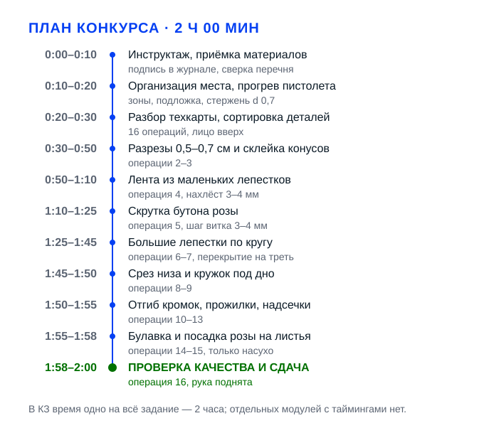
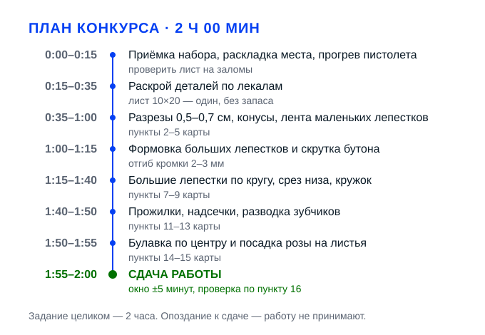
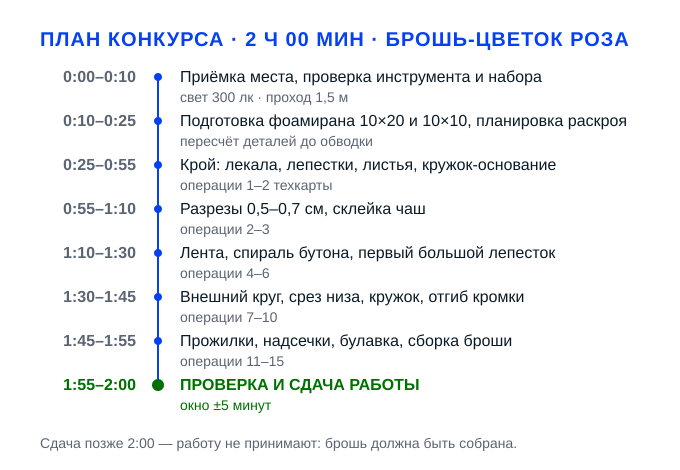

Брошь из фоамирана (ФВ)
Задания ниже — официальные файлы «Абилимпикс» (источник: abilympics-russia.ru), разложенные по категориям. Решения написаны по тексту задания, регламенту и критериям оценки; в них указано, что именно проверяет эксперт.
Школьник
14–16 лет, базовый уровень заданияВ официальном файле категории не разделены отдельными разделами — приводим задание целиком; различия по категориям смотрите в таблице модулей.
Пошаговое решение
Одно задание, один результат и два часа на всё: брошь-цветок роза из заранее выкроенных деталей. В конкурсном задании для школьников нет модулей с отдельными таймингами — есть технологическая карта из шестнадцати операций, и время внутри двух часов вы распределяете сами. Детали уже выкроены, поэтому вся борьба идёт не за раскрой, а за точность: разрез 0,5–0,7 см на маленьких лепестках, нахлёст в два миллиметра при склейке, ровный шаг витков в бутоне, отогнутые кромки и аккуратная изнанка. Решение построено в том же порядке, что и карта, — от инструктажа и приёмки материалов до проверки качества и сдачи. Две вещи держите в голове с первой минуты: горячий клей схватывается за десять секунд, а любая примерка без клея дешевле любой переделки.

Задача 1. Принять задание, материалы и организовать местоЕдиное задание · 2 часа · приёмка и организация
У школьников задание одно и целиком укладывается в два часа: собрать брошь-розу из уже выкроенных деталей по технологической карте из шестнадцати операций. Первые пятнадцать–двадцать минут здесь — не потерянное время, а фундамент: от того, как разложены лепестки и прогрет ли пистолет, зависит, успеете ли вы выйти на скрутку бутона к середине срока. Ни одного балла за красоту в этом блоке нет, но именно он решает, будет ли эта красота вообще.
Действие 1.1. Пройти инструктаж и осмотреть место
Шаг 1.1.1
Садимся на своё место и слушаем вводный инструктаж до конца: пожарная безопасность, где аптечка, где огнетушитель, кому и как поднимать руку. После инструктажа ставим подпись в журнале — это фиксирует, что вас предупредили о правилах работы с ножницами и горячим клеем. Сразу уточняем у наставника три вещи: сколько времени отведено на приёмку, где лежат запасные стержни d 0,7 см и что делать, если пистолет перестал подавать клей.
По разделу 5 конкурсного задания к работе допускаются только те, кто прошёл инструктаж и расписался; без подписи участника к старту не допускают, и два часа пройдут мимо. Плюс вы работаете инструментом, который реально обжигает: носик пистолета разогревается до 150–180 °C, и знать, где аптечка, нужно до первого ожога, а не после него. Эти пять минут инструктажа — единственные в задании, которые нельзя наверстать.
В журнале стоит ваша подпись, а в голове три адреса: аптечка, огнетушитель, стол главного эксперта. Отдельно проверьте, какой рукой будете держать пистолет и куда кладёте его между приклеиваниями: на подставку, а не на стол носиком вниз.
Кивнуть и не слушать — самая дорогая экономия. Потом выясняется, что участник не знает, куда деть горячий пистолет, кладёт его на фоамиран, прожигает деталь и тратит время на переделку, которой в двух часах просто нет.
Эксперт проверяет журнал инструктажа до старта и смотрит, как участник обращается с пистолетом в первые минуты: держит ли за корпус, ставит ли на подставку. Отдельно он отмечает, поднимает ли участник руку при вопросе: кричать через площадку на конкурсе не принято.
Шаг 1.1.2
Осматриваем место: поверхность стола сухая и ровная, стул подобран так, чтобы предплечья лежали на столе, а не висели в воздухе. Проверяем свет — тень от руки не должна падать на рабочую зону: по разделу 4 для участников с нарушением зрения требуется равномерное освещение не менее 300 люкс, и этот же ориентир полезен всем, потому что прозрачную клеевую нить на розовом фоамиране видно только при хорошем свете. Розетку для пистолета проверяем до того, как заняли руки.
Сборка розы — это мелкая моторика на площади в ладонь, и плохой свет здесь не мелочь: незамеченная клеевая нить или перекошенный лепесток видны эксперту при осмотре, а вам в тени — нет. Высокий стол заставляет тянуться к деталям и ронять их, низкий — сутулиться и работать на весу, а на весу разрез 0,5–0,7 см не сделать ровно.
Сядьте и положите руки: локти на столе, кисти в рабочей зоне, тени на деталях нет. Проверьте, что до розетки не приходится тянуть шнур через весь стол, а сам пистолет стоит в пределах вытянутой руки, чтобы не вставать за каждой деталью.
Устроиться на краю стола с шнуром, натянутым над деталями: одно неловкое движение — и пистолет падает вместе с горячим клеем на заготовки. Вторая ошибка — работать в тени собственной руки и не видеть, что клей лёг сбоку от разреза.
Эксперт оценивает организацию места в первые минуты: хватает ли света, свободна ли рабочая зона, не лежат ли детали на краю стола. Если участник щурится или держит детали слишком близко к лицу, эксперт может предложить дополнительный свет — это не штраф, а помощь.
Шаг 1.1.3
Раскладываем всё выданное и сверяем с перечнем раздела 3: фоамиран розовый 10×20 см, зелёный 10×10 см, ножницы, клеевой пистолет d 0,7 см, клеевой стержень d 0,7 см, зубочистка, булавка-застёжка. Отдельно пересчитываем выкроенные детали: маленькие лепестки, большие лепестки, листья и кружок под дно. Стержень сразу вставляем в пистолет и включаем его в сеть.
Школьникам детали выдаются уже выкроенными, поэтому нехватка одного лепестка — это не «докрою по-быстрому», а остановка сборки: без нужного числа маленьких лепестков лента не наберёт нужную длину, а бутон выйдет рыхлым. Замену после старта выдают только через главного эксперта, и время на это уходит из ваших двух часов.
Все семь позиций перечня лежат на столе, стержень вставлен, индикатор пистолета загорелся. Число деталей совпадает с тем, что нарисовано в технологической карте: пересчитайте их дважды — до и после раскладки.
Не пересчитать детали и обнаружить нехватку тогда, когда бутон уже склеен и наращивать его нечем. Вторая ошибка — начать работу на пистолете без стержня: три-четыре минуты уходят на поиск и заправку, а клей в это время не греется.
Эксперт смотрит, сверялся ли участник с перечнем или работал «из кучи», и фиксирует обращения за заменой. Отдельно фиксируется, назвал ли участник вслух, чего именно не хватает, или просто остановился и молчит: точная формулировка экономит и его время, и время эксперта.
Действие 1.2. Разложить рабочее место по зонам
Шаг 1.2.1
Делим стол на четыре зоны и держим их до конца работы: слева — выкроенные детали по видам (маленькие лепестки, большие, листья, кружок), по центру — подложка, на которой идёт склейка, справа — пистолет на подставке, впереди — готовое изделие и булавка. Под клей подкладываем лист бумаги или силиконовую подложку: капли, упавшие на стол, мгновенно приклеивают деталь к поверхности.
Зоны нужны не для красоты: в задании два часа, и каждое движение «поиск лепестка по всему столу» съедает секунды, из которых складываются минуты. Когда детали лежат по видам, вы берёте их не глядя и не путаете маленький лепесток с большим, а это главная причина перекошенной ленты и разного диаметра цветка.
Проверьте: рука дотягивается до каждой зоны не вставая, детали не лежат на краю и не соприкасаются с пистолетом. Подложка под клеем сухая, на ней нет старых капель, к которым прилипает новая деталь. Отдельно проверьте подложку: она должна лежать ровно и не ездить под ножницами, иначе разрез уйдёт в сторону вместе с листом.
Свалить все лепестки в одну кучу: через двадцать минут они слипнутся от случайных капель, а вы будете разбирать их, теряя форму. Вторая ошибка — держать пистолет в той же зоне, где лежат заготовки: одна опрокинутая капля портит сразу несколько деталей.
Эксперт обходит места в начале работы и отмечает, есть ли разделение зон и защита стола; беспорядок в этом пункте читается как отсутствие культуры труда.
Шаг 1.2.2
Включаем пистолет и даём ему прогреться: пять минут — обычное время выхода на рабочий режим для пистолета под стержень d 0,7 см. Пока он греется, не трогаем курок и не пытаемся «помочь» клею выйти. Проверяем подачу на черновике: капля должна быть округлой, блестящей и тянуться за носиком тонкой нитью, а не выходить комками. Пока идёт прогрев, раскладываем детали по зонам — так пять минут ожидания не пропадают зря, и к первой капле у вас уже всё готово.
Непрогретый пистолет подаёт клей рывками, и первая капля ложится не туда, куда вы целились, — а первый разрез у нас шириной 0,5–0,7 см, и промах на нём означает перекошенный конус. Прогрев — это ещё и безопасность: холодный клей не прихватывает деталь, вы держите её дольше, давите сильнее и в итоге прожимаете лепесток пальцем.
Капля на черновике округлая, клей тянется нитью, носик чистый. Если клей идёт комками или не идёт вовсе — проверьте, до конца ли вставлен стержень и не кончился ли он. Если капля ложится с тонкой паутинкой, которая тянется за носиком на десять сантиметров, пистолет ещё не вышел на режим — подождите минуту.
Начать клеить сразу после включения: первая капля выходит жидкой и растекается по лепестку, оставляя лоснящееся пятно, которое уже не убрать. Вторая ошибка — дёргать курок, чтобы «ускорить», и выдавить сразу полсантиметра клея.
Эксперт смотрит на первое приклеивание: аккуратность капли и отсутствие потёков видны сразу, и по ним он делает вывод о владении инструментом. По первой капле он судит, умеет ли участник дозировать клей, — а это умение будет видно на каждом стыке готовой броши.
Шаг 1.2.3
Организуем безопасность под свой инструмент: ножницы лежат закрытыми, кольцами к себе и в стороне от края стола, пистолет — только на подставке носиком в сторону от деталей, рядом кладём сухую салфетку для клея. Клей с кожи снимаем не пальцами друг о друга, а остывшим, после чего смазываем руки кремом; в глаза клею попадать нельзя вообще, поэтому не наклоняемся над каплей.
В разделе 5 перечислены девять правил работы с ножницами и шесть — с клеем, и все они про одно: инструмент должен лежать так, чтобы к нему не тянулись через работу. Клей в этом задании горячий, а не канцелярский, поэтому ожог здесь — не редкость, а самая частая травма на площадке; после ожога работа идёт одной рукой, и время уходит вдвое быстрее.
Ножницы закрыты и лежат кольцами вперёд, пистолет устойчиво стоит на подставке и не качается, салфетка под рукой. Проверьте, что рукав не свисает над подложкой и не может задеть горячий носик. Убедитесь, что шнур лежит вдоль стола, а не поперёк рабочей зоны: за него цепляет рукав в самый неудачный момент.
Оставить ножницы открытыми на столе лезвиями к себе — при первом же поиске детали ладонь идёт прямо на них. Вторая ошибка — положить пистолет боком: клей вытекает на стол и на детали, а носик забивается.
Эксперт фиксирует нарушения техники безопасности сразу и может остановить работу; это единственный пункт, где замечание стоит дороже, чем ошибка в сборке.
Действие 1.3. Разобрать технологическую карту и рассортировать детали
Шаг 1.3.1
Проходим технологическую карту глазами от первого пункта до шестнадцатого, не начиная работу. Отмечаем для себя три переломные точки: разрез 0,5–0,7 см на маленьких лепестках, скрутка ленты в бутон и момент, когда низ цветка срезается и закрывается кружком. Дальше проговариваем вслух порядок: лепестки → разрезы → склейка разрезов → лента → бутон → большие лепестки → низ → листья → булавка → сборка.
Карта построена так, что каждая следующая операция опирается на предыдущую: срезать низ раньше, чем приклеены все большие лепестки, значит потерять точки опоры, а приклеить булавку раньше листьев — значит клеить её к цветку, а не к листу. Понимание последовательности — это и есть та часть оценки, которая называется «работа по технологической карте»; её нельзя добрать аккуратностью.
Закройте карту и перескажите порядок своими словами за тридцать секунд. Если на каком-то шаге вы «проваливаетесь» — вернитесь и прочитайте его ещё раз, лучше сейчас, чем с горячим клеем в руке. Если вы сбились на слове «лента» или «бутон», вернитесь к карте, а не начинайте наугад.
Начать с первого пункта, не прочитав остальные: тогда на шаге «скрутить ленту» выясняется, что разрез надо было делать до склейки, и детали уже испорчены. Вторая ошибка — импровизировать «сделаю красивее», когда карта задаёт другой порядок сборки.
Эксперт может попросить объяснить, что вы делаете сейчас и что будете делать через операцию; уверенный ответ виден и без вопроса. Если участник отвечает спокойно и по делу, значит карта действительно прочитана, а не пролистана за минуту до старта.
Шаг 1.3.2
Раскладываем детали по группам и проверяем, что каждая группа полная: маленькие лепестки — в одну линию, потому что из них будет лента; большие — стопкой, лицевой стороной вверх; листья — отдельно, парой; кружок под дно — рядом с ножницами. Лицевую сторону определяем по более матовой, бархатистой поверхности: у фоамирана она заметно отличается от гладкой изнанки.
Маленькие лепестки нужны именно линией: по карте из них сначала склеивается лента, и если детали лежат кучей, вы будете выкладывать их по одной, теряя ось и нахлёст. Лицевая сторона важна не меньше: клей, нанесённый на матовую сторону, держит, а на гладкой изнанке капля сползает и лепесток «отходит» уже к моменту сдачи.
Каждая группа на своём месте, число деталей совпадает с картой, все лежат лицом вверх. Проведите пальцем по одной детали с каждой стороны — та, что теплее и мягче на ощупь, и есть лицевая. Число деталей в каждой группе лучше записать на бумажке или запомнить точно: пересчитывать их в середине работы уже некогда.
Склеить лепесток не той стороной: потом на лицевой стороне видна блестящая полоса клея, и убрать её невозможно. Вторая ошибка — разложить лепестки вперемешку и склеить ленту из деталей разного размера.
Эксперт осматривает лицевую сторону готовой броши под углом к свету: следы клея на матовой поверхности видны как лоснящиеся пятна. Если детали лежат лицом вниз, он вправе ожидать клеевых пятен на лицевой стороне — и обычно не ошибается.
Шаг 1.3.3
Проверяем кромки выкроенных деталей: они должны быть ровными, без «ступенек» и волокнистых заусенцев, которые остаются от тупых ножниц. Если на лепестке есть залом или вмятина, расправляем её пальцами — фоамиран хорошо разглаживается теплом рук. Лекала, если они выданы, прикладываем к деталям и проверяем, что контур совпадает без перекоса. Работаем на просвет: на матовом фоамиране залом почти не видно при прямом свете.
Кромка — это первое, что видно на готовой броши: волокнистый край читается как небрежность, даже если сборка идеальна. Замятая деталь хуже, чем кажется: фоамиран помнит форму, и вмятина останется на лепестке после сборки, потому что расправить её будет уже нечем — утюг в перечне оборудования для школьников не предусмотрен.
Кромка ровная на просвет, деталь лежит плоско, контур совпадает с лекалом. Проведите пальцем по краю: заусенцы чувствуются как шероховатость, их лучше срезать сразу тонкой полоской, а не выщипывать. Проверьте каждую деталь, а не выборочно: один заломленный лепесток в ярусе из шести портит впечатление от всего цветка.
Оставить деталь с заломом, надеясь, что «при склейке разгладится»: на фоамиране этого не происходит, вмятина остаётся и на цветке выглядит как провал между лепестками. Вторая ошибка — обрезать заусенцы, срезая лишний миллиметр и меняя форму лепестка.
Эксперт смотрит на кромки и на плоскость лепестков при боковом свете — именно так видны заломы и волокнистый край. Он может взять деталь в руки и посмотреть её на свет: белая полоса залома — самый быстрый способ отличить аккуратную работу от быстрой.
Задача 2. Подготовить маленькие лепестки: разрезы и склейкаТехнологическая карта · операции 2–3
Две операции карты — разрез на 0,5–0,7 см посередине маленького лепестка и склейка этого разреза — превращают плоскую деталь в узкий конус. Именно из таких конусов собирается сердцевина, и именно они задают бутону объём: лепесток без разреза останется плоским и цветок получится «блинчиком», а разрез глубже нормы развалит конус и даст щель в самом центре розы. Работа идёт на деталях размером с ноготь, поэтому здесь важнее не сила, а точность и одинаковая глубина на всей партии.
Действие 2.1. Выполнить разрез на маленьких лепестках
Шаг 2.1.1
Раскладываем маленькие лепестки в линию лицевой стороной вверх и на каждом находим середину узкого края — тот край, который будет смотреть в центр цветка. Середину отмечаем лёгким нажатием зубочистки, не оставляя глубокой вмятины: точка нужна только затем, чтобы ножницы шли по оси, а не наискось. Детали не сдвигаем с места, иначе линия разъедется, и разрез уйдёт вбок.
Разрез по карте делается посередине маленького лепестка, и эта середина — единственная ось симметрии детали. Если разрез смещён хотя бы на миллиметр, при склейке один край ляжет на другой с перекосом, конус завалится набок, и в сердцевине розы появится односторонний наклон, который потом не исправить никаким большим лепестком.
Проверьте первую деталь: метка стоит ровно между боковыми кромками, расстояние до левого и правого края одинаковое. Посмотрите на лепесток сверху — ось должна делить его пополам, как по линейке. Отдельно проверьте, что метка не осталась вдавленной: на розовом фоамиране глубокая точка после сборки читается как тёмное пятно в сердцевине.
Размечать «на глаз» и резать по памяти: на третьей-четвёртой детали рука уходит в сторону, и партия получается разной. Вторая ошибка — давить зубочисткой так, что остаётся сквозная вмятина, которая на розовом фоамиране читается как тёмная точка.
Эксперт смотрит на сердцевину готовой розы: перекошенные конусы дают заметный наклон витков, и это первый признак, что разрез делали без разметки. Если подойти к участнику в этот момент, видно, размечает он каждый лепесток или режет по памяти, — и по этому сразу понятно, будет ли партия ровной.
Шаг 2.1.2
Берём ножницы и режем кончиками, а не всей длиной лезвия: разрез нужен глубиной 0,5–0,7 см, а полное смыкание лезвий от края до шарнира даст разрез вдвое длиннее и разрежет лепесток почти пополам. Вводим кончики точно в метку, держим ножницы вертикально к плоскости стола, одним уверенным смыканием идём вглубь на нужную величину. Глубину проверяем на первой детали линейкой или на глаз по ширине лепестка.
Глубина 0,5–0,7 см — это не рекомендация, а расчёт: при таком разрезе края сходятся с нахлёстом и дают аккуратный конус без складки. Короче — конус не сомкнётся, и в сердцевине останется плоская площадка; глубже — лепесток сложится в трубочку, и витки ленты будут разной толщины.
Разрез ровный, идёт строго по оси, его края не рваные. Приложите линейку: от кромки до конца разреза 5–7 мм. Проверьте, что лезвие не вышло за пределы детали сбоку. Проверьте также, что разрез не вышел за пределы детали сбоку: косой разрез на маленьком лепестке почти всегда означает испорченную деталь.
Резать «до упора», смыкая ножницы полностью: разрез выходит 1,5–2 см, лепесток разваливается на две половины, и деталь приходится выбрасывать — а запасных в комплекте нет. Вторая ошибка — тупые ножницы: они мнут фоамиран, и кромка разреза становится волокнистой.
Эксперт смотрит на разрез вблизи: рваная кромка и разная глубина на соседних деталях видны сразу, потому что лепестки лежат рядом. Эксперт обращает внимание на инструмент: тупые ножницы мнут фоамиран, и это видно по волокнистой кромке даже на готовом изделии.
Шаг 2.1.3
Проходим по всей партии одинаково: разрез, проверка глубины, деталь в сторону. Сложенные стопкой готовые лепестки не прижимаем — под весом они заминаются, а вмятина на таком маленьком конусе заметна. Если какая-то деталь получилась с разрезом глубже остальных, откладываем её отдельно и в ленту не пускаем. Откладывая детали, не прижимаем их друг к другу: у фоамирана тонкая кромка, и под весом стопки она заминается, а расправить её потом нечем.
Лента склеивается из одинаковых конусов, и разнобой по глубине даёт разнобой по высоте: один виток выпирает, другой проваливается. На маленьком цветке это видно сильнее, чем на крупном, потому что вся сердцевина — это кольцо из пяти-шести таких конусов, и каждый на виду.
Все разрезы одной длины и одной ориентации: если положить лепестки в ряд, концы разрезов образуют ровную линию. Пересчитайте партию — сколько деталей было, столько и осталось. Разложите готовые лепестки в ряд и приложите линейку к концам разрезов: линия должна получиться ровной, без выпадающих деталей.
Отложить «одну неудачную» в общую стопку, решив, что «внутри не видно»: сердцевина как раз и есть самое видимое место розы. Вторая ошибка — складывать готовые лепестки под пресс, отчего кромки заламываются.
Эксперт пересчитывает детали и сверяет их с картой, а затем смотрит на разброс по глубине, прикладывая соседние лепестки друг к другу. Разброс по глубине виден, если положить соседние лепестки друг на друга: разница в полтора-два миллиметра уже заметна.
Действие 2.2. Склеить разрезы и получить конус
Шаг 2.2.1
Берём лепесток разрезом вверх и наносим клей только на один край разреза — полоску шириной 2–3 мм у самой кромки. Капля должна быть маленькой: носик пистолета подводим к детали, коротко нажимаем курок и сразу убираем. Второй край остаётся сухим, иначе клей выступит наружу, и на лицевой стороне останется лоснящаяся полоса. Держим пистолет наклонно, носиком к детали, чтобы капля ложилась на кромку, а не падала сверху и не растекалась по плоскости.
Клей по карте наносится на разрез, а не на всю деталь, потому что склеивается не площадь, а линия стыка, и лишний объём здесь только мешает: капля 2–3 мм схватывается за десять секунд, а большая расползается под пальцем и выходит по краям. Кроме того, у фоамирана тонкая кромка, и горячий клей её подплавляет — чем меньше нанесено, тем аккуратнее стык.
Клей лежит узкой полоской вдоль одного края, второй край чистый и сухой. На просвет видно, что капля не перекрывает середину разреза и не течёт к вершине лепестка. Проверьте на просвет: если клей перекрыл середину разреза, при сжатии он выступит с лицевой стороны, и убрать его будет нечем.
Выдавить каплю размером с горошину: она выходит за края, лепесток при сжатии выворачивается, и на лице остаётся блестящее пятно, которое невозможно удалить. Вторая ошибка — мазнуть клеем оба края: стык встаёт криво, потому что деталь прихватывается раньше, чем вы её выровняли.
Эксперт осматривает лицевую сторону конуса: след клея на матовом фоамиране виден под углом к свету как жирная полоса. Он смотрит на размер капли: у опытного участника она всегда меньше, чем кажется нужным, — и стыки выходят чистыми.
Шаг 2.2.2
Сводим края разреза с нахлёстом примерно 2 мм — один край заходит на другой, а не стыкуется впритык. Держим пальцами у основания и прижимаем десять секунд, не отпуская и не поправляя: горячий клей схватывается быстро, и любое движение в первые секунды сдвигает стык. Прижимаем через сухую салфетку или подушечкой пальца, подальше от кромки, чтобы не обжечься.
Нахлёст в 2 мм — то, что превращает плоский лепесток в конус: без него края сойдутся плоской складкой, и лепесток останется почти прямым. Десяти секунд хватает, чтобы клей остыл и деталь держала форму сама, — если отпустить раньше, конус начнёт раскрываться, и лента потом будет «дышать».
Конус держится сам, шов не расходится при лёгком нажатии, нахлёст ровный по всей длине. Посмотрите на деталь сбоку: она должна быть похожа на кулёк, а не на сложенную пополам бумажку. Проверьте конус на столе: поставьте его основанием вниз — он должен стоять, а не падать набок от лёгкого толчка.
Прижать и сразу отпустить: клей ещё тёплый, конус раскрывается, и его приходится переклеивать, срезая застывший клей. Вторая ошибка — сводить края впритык, без нахлёста: шов получается плоским и при сборке ленты разъезжается.
Эксперт проверяет стык нажатием: разошедшийся шов на готовой броши выглядит как белая щель в сердцевине. Если шов разошёлся, эксперт это увидит по белой линии на сгибе: у фоамирана разошедшийся клей оставляет светлый след, который не маскируется.
Шаг 2.2.3
Проверяем каждый готовый конус: вершина острая и стоит по центру, бока симметричные, нахлёст идёт от основания к вершине ровной линией. Если конус получился кособоким, не выправляем его пальцами — фоамиран запомнит новую форму, но шов при этом перекосится окончательно. Такую деталь откладываем и при возможности переделываем из запасного лепестка. Кривые конусы откладываем отдельно: смешать их с хорошими — значит потерять контроль над партией.
Симметрия конуса определяет, как ляжет лента: из кособоких конусов спираль выходит волной, и бутон получается с перекошенной сердцевиной, которую не скрыть. По карте именно из этих деталей скручивается роза, поэтому брак на этом этапе дешевле заменить, чем исправлять на сборке.
Поставьте конус на стол основанием: он должен стоять ровно, не заваливаясь. Сложите пять конусов в ряд вершинами вверх — вершины на одной высоте, наклоны одинаковые. Сложите конусы вершинами вверх в линию и посмотрите на неё сбоку: наклоны должны совпадать, а вершины — стоять на одной высоте.
Оставить кособокий конус «в середину, там не видно»: в середине розы как раз и видно, потому что это самая высокая точка цветка. Вторая ошибка — пытаться разгладить перекос ногтем, отчего на лицевой стороне появляется вмятина.
Эксперт смотрит на сердцевину сверху: вершины конусов должны образовывать ровный круг без выпадающих деталей. Он проверяет симметрию, прикладывая конусы друг к другу основаниями: разница в наклоне больше десяти градусов уже читается.
Шаг 2.2.4
Снимаем клеевые нити: они тянутся за носиком и остывают тонкими прозрачными волосками, которые на розовом фоамиране выглядят как паутина. Убираем их пинцетом или кончиками ножниц, не касаясь лицевой стороны лепестка, и складываем готовые конусы в отдельную зону вершинами вверх. Пистолет при этом держим на подставке, а не в руке над деталями. Снимаем нити после каждых двух-трёх деталей, а не в конце: запутавшаяся паутина переносится на пальцы и оттуда на лицевую сторону.
Клеевая нить — самая частая причина снижения оценки за аккуратность: она цепляется за соседние лепестки, при сборке натягивается и вытягивает волокно с лицевой стороны. Убрать её после сборки почти невозможно, а на этом этапе это десять секунд работы.
На конусах нет прозрачных волосков, кромки чистые, на подложке тоже не осталось нитей, которые прилипнут к следующей детали. Проверьте на просвет — нить видна лучше всего именно так. Проверьте и подложку: нить, оставшаяся на ней, прилипнет к следующей детали и уйдёт в сборку незамеченной.
Смахнуть нити рукой: они прилипают к пальцам и переносятся на другие детали. Вторая ошибка — оставить нить, рассчитывая, что «при сборке не видно»: при скрутке она натягивается и вытаскивает волокно. Третья ошибка — чистить нити ногтем по лицевой стороне: остаётся царапина.
Эксперт осматривает изделие на просвет и под углом — клеевые нити читаются как мутные штрихи на матовой поверхности. Он смотрит изделие на просвет: клеевые нити читаются как мутные штрихи, а на розовом фоне их особенно много.
Задача 3. Склеить ленту и скрутить бутонТехнологическая карта · операции 4–5
Дальше начинается самая ответственная часть: готовые конусы склеиваются в ленту, а лента скручивается в спираль, которая и станет сердцевиной розы. Это операция 4 и 5 карты, и она задаёт всё остальное — высоту бутона, его плотность и то, насколько ровно потом лягут большие лепестки. Здесь нельзя торопиться: один неровный виток разваливает геометрию цветка, а исправить его после приклеивания больших лепестков уже не получится.
Действие 3.1. Склеить маленькие лепестки в ленту
Шаг 3.1.1
Выкладываем готовые конусы в ленту: все вершинами в одну сторону и лицевой стороной вверх, каждый следующий заходит на предыдущий на 3–4 мм у основания. Ленту собираем на подложке, не приклеивая, пока не выложен весь ряд, — так видно общую длину и можно сразу поправить нахлёст. Конусы должны лежать ровно, без заломов и без перекрута вокруг своей оси.
Ровная линия нахлёста — это то, что потом станет спиралью: если детали стоят с разным шагом, витки выйдут неравномерными, и бутон получится с провалами. Лицевая сторона вверх важна потому, что именно она останется видимой в центре цветка, а изнанка с каплями клея спрячется внутрь.
Все вершины на одной линии, нахлёст одинаковый по всей длине, лента лежит плоско. Проведите по ней ладонью — ничего не должно топорщиться вверх. Отдельно проверьте, что лента не закручивается сама по себе: если она спиралится ещё до скрутки, значит конусы стоят с перекосом вокруг оси.
Выложить конусы вразнобой, часть лицом вниз: в готовой розе это видно как пятна изнанки между витками. Вторая ошибка — сразу приклеивать по одному, не выложив ряд: на середине выясняется, что не хватает длины.
Эксперт смотрит на ленту до скрутки, если подходит к участнику в этот момент: ровность нахлёста видна сразу и говорит о понимании геометрии цветка. Ровность нахлёста он проверяет, проводя по ленте пальцем: бугорки на линии стыка ощущаются сразу, даже если глазами их не видно.
Шаг 3.1.2
Приклеиваем по одному: каплю клея наносим на основание предыдущего конуса, в точку нахлёста, и прижимаем следующий на десять секунд. Клей идёт вниз, к широкой части, а не к вершине: вверху лепестки должны оставаться свободными, иначе лента станет жёсткой и не скрутится. Идём слева направо, чтобы не сбить порядок и не перевернуть уже приклеенные детали.
Склейка по одному даёт контроль: вы видите, ровно ли встал каждый конус, и можете поправить его до того, как клей остыл. Клей у вершины превратил бы ленту в единый жёсткий блок, а скрутка требует, чтобы лепестки двигались друг относительно друга хотя бы на несколько градусов.
Лента гнётся, но не рассыпается: при лёгком изгибе швы держат, а вершины расходятся. Проверьте, что клей не выступил на лицевую сторону в местах нахлёста. Проверьте и то, что клей не попал на вершины: жёсткая вершина не даст ленте лечь в спираль без залома.
Наносить клей на вершину или по всей высоте конуса: лента деревенеет, и скрутить её в плотный бутон уже не выйдет. Вторая ошибка — прижимать деталь и одновременно крутить её, отчего нахлёст съезжает. Третья ошибка — клеить детали по одной, не проверяя, лицом вверх ли легла каждая: перевёрнутый конус виден в готовой розе как пятно изнанки.
Эксперт проверяет гибкость ленты, если видит, что участник скручивает её с усилием: жёсткая лента — признак лишнего клея. Он может взять ленту и согнуть её: если она гнётся с хрустом, значит клея положено больше, чем нужно, и спираль потом пойдёт ступеньками.
Шаг 3.1.3
Проверяем ленту перед скруткой: длина должна давать полтора-два оборота вокруг бутона, нахлёст ровный, лицевая сторона смотрит вверх по всей длине. Если лента короче, добавляем ещё один конус, если длиннее — оставляем: лишнее потом уйдёт в нижнюю часть бутона, которую закроют большие лепестки. Если лента вышла с запасом, не обрезаем её сразу: излишек уйдёт в нижнюю часть бутона под большие лепестки, и там он только добавит плотности.
Длина ленты определяет плотность сердцевины: слишком короткая даст рыхлый центр с просветом, слишком длинная — утолщение у основания, из-за которого большие лепестки встанут под неправильным углом. Проверка занимает полминуты, а переделка — десять. Проверка длины — это ещё и проверка на просвет: щели между конусами в ленте превращаются в тёмные полосы на сердцевине готовой броши.
Лента лежит ровной полосой, её длина позволяет обернуть конус-основание полтора раза с запасом. Посмотрите вдоль ленты на просвет: просветов между витками быть не должно. Посмотрите вдоль ленты, приложив её к краю стола: линия должна идти параллельно краю, без волны и без уступов.
Начать скрутку, не проверив длину: в процессе выясняется, что не хватает половины оборота, и приходится расклеивать уже скрученное. Вторая ошибка — обрезать «лишнюю» длину сразу, хотя она нужна для плотного низа.
Эксперт обращает внимание на плотность сердцевины готовой броши: рыхлый центр виден как тёмная щель между витками. Он сверяет длину ленты с высотой бутона: слишком короткая лента даёт рыхлый центр, и это видно по просвету в сердцевине.
Действие 3.2. Скрутить ленту в бутон розы
Шаг 3.2.1
Начинаем с первого витка: берём край ленты и скручиваем его в тугой валик диаметром около сантиметра, подклеивая основание. Валик должен быть плотным — это будущая сердцевина, и именно он держит всю спираль. Первый виток прижимаем пальцами через салфетку десять секунд, пока клей не схватится, и только потом начинаем накручивать дальше. Если валик разъезжается, придерживаем его у основания: там витки держатся друг за друга.
Плотный первый виток — это ось всей розы: если он рыхлый, спираль начнёт разъезжаться, витки пойдут волной, и цветок получится «растрёпанным» с самого центра. По карте лента сначала скручивается, а потом склеивается в спираль, и порядок здесь важен: сначала форма, потом фиксация.
Валик держится сам, не разворачивается, его диаметр одинаков по высоте. Посмотрите на него сверху: это должна быть плотная спираль, а не полый цилиндр с просветом внутри. Проверьте высоту валика: он должен занимать примерно треть будущего бутона, а не половину, иначе большим лепесткам некуда будет лечь.
Скрутить слабо, «чтобы потом подтянуть»: потом не подтянется, клей уже схватился. Вторая ошибка — сделать первый виток слишком толстым, и тогда он занимает всю высоту бутона, а большим лепесткам не остаётся места.
Эксперт смотрит на центр розы сверху, при ярком свете: просвет внутри валика читается как тёмное пятно, и это сразу снижает оценку за сборку. Он смотрит на центр сверху при ярком свете: полый валик читается как тёмное углубление, и это первый дефект, который он отмечает.
Шаг 3.2.2
Накручиваем ленту по спирали, придерживая валик и подтягивая ленту с лёгким натяжением: каждый следующий виток ложится ниже предыдущего на 3–4 мм и перекрывает его примерно на треть. В точку соприкосновения подклеиваем каплей клея у основания, но не по всей высоте. Витки идут в одном направлении, без «обратного хода» — иначе спираль распадётся на два слоя.
Натяжение и шаг витка задают форму бутона: слишком свободно — цветок раскрывается и становится плоским, слишком туго — витки сминаются и дают заломы на лицевой стороне. Перекрытие на треть — это то, что даёт розе её характерную плотную сердцевину, без щелей между рядами.
Витки идут ровно, спираль читается с любой стороны, шаг одинаковый. Проверьте рукой: бутон должен быть упругим, а не мягким, и не должен разваливаться при лёгком сжатии. Проверьте шаг витков по высоте: он должен быть одинаковым, а линия перекрытия — идти по спирали, а не зигзагом.
Тянуть ленту изо всех сил: фоамиран растягивается и не возвращается, лепестки выходят волнистыми, а цветок — перекошенным. Вторая ошибка — клеить по всей высоте лепестка, отчего витки не перекрываются, а встают друг на друга ступенькой.
Эксперт оценивает бутон на просвет и сбоку: ровный шаг витков виден по линии перекрытия, а заломы — по бликам на сгибах. Он смотрит на бутон сбоку и на просвет: заломы на сгибах видны как светлые блики, а неравномерный шаг — как ступеньки на силуэте.
Шаг 3.2.3
Формируем высоту: верх бутона должен быть чуть выше последнего витка, а не проваливаться внутрь. Если верх получился плоским, аккуратно поднимаем первый валик пальцем снизу, не разжимая спираль, и добавляем каплю клея в основание. Следим, чтобы бутон оставался конусом, а не превратился в цилиндр с ровным верхом. Если верх просел после подклейки, помочь можно только снизу: подталкиваем валик пальцем через низ бутона, не разжимая спираль изнутри.
Высота сердцевины определяет силуэт всей броши: по карте результатом должна быть роза, а роза читается по конусу. Плоский верх делает цветок похожим на пион или на «капусту», и дальше большие лепестки лягут вокруг плоской площадки, а не вокруг конуса.
Верх бутона — самая высокая точка изделия, он приподнят над последним витком на 3–5 мм. Посмотрите на заготовку в профиль: линия от основания к вершине должна идти сужаясь. Проверьте силуэт в профиль: от основания к вершине линия должна сужаться плавно, без площадки наверху и без провала под вершиной.
Оставить плоский верх, рассчитывая, что «большие лепестки закроют»: они не закрывают центр, он остаётся видимым и оценивается первым. Вторая ошибка — поднимать валик, разжимая витки, отчего спираль расходится.
Эксперт осматривает брошь с уровня стола, то есть видит профиль: высота и форма конуса оцениваются именно в этом ракурсе. Он осматривает брошь на уровне своих глаз, то есть видит именно профиль: плоский верх и провал под вершиной заметны в этом ракурсе сразу.
Шаг 3.2.4
Финально проверяем бутон: спираль читается, вершины конусов образуют ровный круг, бутон упругий и держит форму без поддержки. Убираем клеевые нити и ставим заготовку на подложку основанием вниз, чтобы она не деформировалась, пока вы готовите большие лепестки. Если бутон качается на столе — низ ещё не выровнен, но это исправится на следующей операции.
Бутон — фундамент: он должен держать форму сам, потому что при наклеивании больших лепестков вы будете держать его на весу и прижимать с усилием. Рыхлый бутон в этот момент сминается, и вся предыдущая работа (операции 2–5) уходит в брак. Кроме того, упругий бутон нужен и на следующем шаге: большие лепестки прижимаются к нему с усилием, и рыхлая сердцевина под этим нажимом складывается.
Поставьте бутон на стол и уберите руки: он стоит и не заваливается. Сожмите его двумя пальцами и отпустите — форма возвращается, спираль не разошлась. Проверьте и основание: оно должно быть плотным, без просвета между витками, потому что именно к нему будут крепиться большие лепестки.
Держать бутон за вершину при переносе: она сминается, и верх цветка становится приплюснутым. Вторая ошибка — оставить заготовку лежать на боку, отчего одна сторона бутона заминается. Третья ошибка — оставить бутон на весу, пока ищете большие лепестки: он провисает и деформируется под собственным весом.
Эксперт берёт изделие в руки на этапе контроля и проверяет упругость: смятую сердцевину видно и на глаз, и на ощупь. Он сжимает бутон двумя пальцами и отпускает: если форма не вернулась, значит витки склеены неровно, и это уже не исправить.
Задача 4. Нарастить цветок большими лепестками и закрыть низТехнологическая карта · операции 6–9
Готовый бутон наращивается большими лепестками — по карте сначала один, потом остальные по кругу, а затем низ цветка выравнивается срезом и закрывается кружком из фоамирана. Это операции 6, 7, 8 и 9, и именно они превращают сердцевину в розу: от угла посадки каждого лепестка зависит, будет ли цветок раскрытым или сжатым. Срез и кружок — служебная часть, но без них изнанка выглядит как незаконченная работа, а булавку крепить не к чему.
Действие 4.1. Приклеить первый большой лепесток
Шаг 4.1.1
Прежде чем брать клей, примеряем первый большой лепесток к бутону без фиксации: прикладываем его лицевой стороной наружу и ищем высоту, на которой верх лепестка окажется чуть ниже вершины бутона — примерно на 3–5 мм. Держим лепесток так, чтобы его основание заходило на низ бутона, а не висело над ним. Только найдя положение, запоминаем точку приклеивания и убираем руку.
Примерка без клея — единственный способ не ошибиться: горячий клей схватывается за десять секунд, и сдвинуть лепесток после этого можно только с куском бутона. Высота посадки задаёт силуэт: слишком высоко — лепесток закрывает сердцевину, слишком низко — получается «юбка» вокруг бутона вместо цветка.
Лепесток в примеренном положении перекрывает бутон на треть высоты и не выступает выше его вершины. Посмотрите сбоку: линия от вершины бутона к краю лепестка должна идти вниз, а не вверх. Проверьте и наклон: лепесток должен смотреть не вверх и не вниз, а чуть в сторону, как у раскрывающегося цветка.
Приклеить первый лепесток «примерно туда же» без примерки: в половине случаев он встаёт выше бутона, и роза теряет форму. Вторая ошибка — приложить лепесток изнанкой наружу, а заметить это после прижатия.
Эксперт смотрит на первый приклеенный лепесток как на показатель понимания конструкции: он задаёт угол для всех остальных. Он смотрит, примеряет участник деталь или клеит сразу: примерка видна по тому, как долго лепесток держат в руке без клея.
Шаг 4.1.2
Клей наносим на нижнюю треть лепестка с внутренней стороны — узкой полоской или двумя каплями, не доходя до кромок. Прикладываем к бутону в найденное положение и прижимаем десять-пятнадцать секунд, держа за широкую часть, а не за кромку. Прижимаем плотно: между лепестком и бутоном не должно остаться воздушной прослойки. Руку с пистолетом после капли сразу уводим в сторону, чтобы клей не тянулся за носиком и не оседал на соседних лепестках.
Клей в нижней трети — потому что именно эта зона соприкасается с бутоном; если нанести выше, клей выступит на лицевую сторону, и лепесток приклеится не к цветку, а сам к себе. Пятнадцати секунд хватает, чтобы схватился весь слой, а не только края капли.
Лепесток держится сам, шов не расходится, клей не выступил по кромке. Проверьте пальцем у основания: лепесток не должен отходить от бутона с характерным хрустом отслаивающегося клея. Проверьте, не выступил ли клей у кромки: если да, его нужно снять сразу, пока он тёплый, — остывший снимается вместе с волокном.
Нанести клей «по всей площади, чтобы крепче держалось»: лепесток становится жёстким, теряет пластику, и последующая отгибка края даёт залом. Вторая ошибка — прижать на две секунды и отпустить. Третья ошибка — держать лепесток за кромку при прижатии: кромка проминается, и вместо мягкого края остаётся вмятина.
Эксперт проверяет прочность крепления лёгким оттягиванием: отслоившийся лепесток виден сразу и оценивается как брак сборки. Он проверяет крепление лёгким оттягиванием лепестка от бутона: хруст отслаивающегося клея слышен сразу.
Шаг 4.1.3
Проверяем, как лёг первый лепесток: перекрытие бутона ровное, кромка смотрит наружу, лицевая сторона без следов клея. Смотрим на заготовку сверху — лепесток должен продолжать круг бутона, а не торчать в сторону. Если он встал с перекосом, лучше отклеить сейчас, пока клей не остыл полностью, чем наращивать вокруг кривого основания. Если лепесток пошёл с перекосом, снимаем его сразу: через минуту он снимется вместе с верхним слоем фоамирана.
Первый лепесток — точка отсчёта: остальные встанут вокруг него с равным шагом, и любой перекос размножится. Отклеить тёплый лепесток можно, поддев основание ногтем; когда клей остыл, он снимается вместе с волокном фоамирана, и на бутоне остаётся рваное пятно.
Лепесток стоит ровно, его ось проходит через центр бутона. Приложите линейку или зубочистку от вершины бутона к краю лепестка — линия должна быть продолжением радиуса. Проверьте и высоту: верх лепестка должен быть ниже вершины бутона на 3–5 мм, иначе сердцевина спрячется и цветок потеряет центр.
Оставить перекошенный лепесток, решив «сейчас поправлю следующими»: следующие встанут по такому же перекосу, и цветок выйдет асимметричным. Вторая ошибка — отклеивать, когда клей уже застыл, и портить бутон.
Эксперт оценивает симметрию по первому кругу лепестков — это самая заметная геометрия броши. Он смотрит на первый лепесток как на точку отсчёта: по нему видно, с каким шагом и на какой высоте встанут остальные.
Действие 4.2. Наклеить остальные лепестки по кругу
Шаг 4.2.1
Наклеиваем остальные большие лепестки по кругу, начиная с противоположной стороны от первого: так сразу видно, не «уехал» ли центр. Каждый следующий лепесток перекрывает предыдущий примерно на треть ширины, а его основание садится чуть ниже — на 2–3 мм, чтобы цветок раскрывался. Порядок берём по кругу: напротив, потом между ними, и так до полного оборота.
Перекрытие на треть даёт ровный, читаемый цветок: при меньшем остаются щели до бутона, при большем лепестки сбиваются в ком и роза выглядит сжатой. Постепенное понижение посадки — это то, что создаёт раскрытие: каждый следующий ряд смотрит чуть больше вниз, как у настоящего цветка.
Все лепестки стоят на равном расстоянии друг от друга, перекрытия одинаковые, центр не смещён. Обойдите заготовку вокруг — с любой стороны рисунок перекрытий должен читаться одинаково. Проверьте, что лепестки не задираются вверх: у раскрытой розы они смотрят в стороны и чуть вниз.
Клеить подряд по часовой стрелке, не проверяя противоположную сторону: к концу круга выясняется, что цветок перекошен, и исправить это уже нельзя. Вторая ошибка — клеить все лепестки на одной высоте, отчего роза получается плоской, как ромашка.
Эксперт смотрит на цветок сверху: равномерность перекрытий и смещение центра видны в этом ракурсе лучше всего. Он обходит изделие вокруг, а не смотрит с одной точки: смещение центра видно только при круговом осмотре.
Шаг 4.2.2
Клей наносим в основание лепестка, ближе к низу и к середине, не задевая боковые кромки: именно кромки будут отгибаться на следующей операции, и клей на них сделает край жёстким. Прижимаем каждый лепесток десять секунд, держа за широкую часть и не сдвигая. Пистолет между приклеиваниями возвращаем на подставку. Перед нанесением клея каждый раз проверяем, что лепесток лежит той стороной: перевёрнутый лепесток в общем круге выглядит как провал.
Кромка, испачканная клеем, не отгибается: вместо мягкой волны получается залом с белым следом, и операция 10 карты (отогнуть края на внешнюю сторону) превращается в порчу детали. Основание же, наоборот, требует клея с запасом — это единственная зона, которая держит лепесток.
На кромках лепестков нет клея, все они мягкие и подвижные. Проведите пальцем по краю каждого лепестка: он должен свободно прогибаться, а не стоять жёсткой пластиной. Проверьте кромки всех лепестков сразу, проведя по кругу пальцем: жёсткие участки сразу выдают клей.
Промазать клеем весь лепесток «для надёжности»: кромки деревенеют, и отогнуть их уже не получится, а попытка отогнуть ломает волокно. Вторая ошибка — капнуть клеем на лицевую сторону и стереть пальцем, размазав пятно.
Эксперт осматривает кромки на просвет: след клея выглядит как плотная блестящая полоса, а здоровая кромка — как ровный матовый край. Он смотрит на кромки под углом к свету: клей делает их плотными и блестящими, и это видно даже на розовом фоамиране.
Шаг 4.2.3
После каждого лепестка контролируем диаметр: заготовка должна расти равномерно, без выступов. Измеряем расстояние от центра до края двух противоположных лепестков — они должны быть равны, допуск здесь не больше 2–3 мм. Если один лепесток выступает, значит он приклеен выше или с большим наклоном, и его нужно поправить сразу. Если лепесток выступает, не подрезаем его, а приклеиваем заново ниже: подрезанная кромка читается как срез.
Диаметр и симметрия — то, что эксперт видит первым, ещё до того, как рассмотрит клеевые швы: неровный цветок читается как небрежность, даже если все операции выполнены. Проверка после каждого лепестка занимает секунды, а исправление готового цветка — минуты.
Диаметр одинаков по всем направлениям, лепестки образуют ровный круг. Посмотрите на заготовку сверху и мысленно впишите её в круг — ни один лепесток не должен выходить за его границы. Проверьте диаметр в двух направлениях — по вертикали и по горизонтали: разница больше трёх миллиметров означает перекос всего круга.
Проверять диаметр только в самом конце: тогда уже непонятно, какой именно лепесток виноват, и приходится разбирать половину цветка. Вторая ошибка — подрезать выступающий лепесток ножницами, отчего кромка становится ступенчатой.
Эксперт измеряет готовую брошь линейкой и смотрит на неё сверху: симметрия — отдельный критерий качества сборки. Он же смотрит, не «пляшет» ли край: при равном диаметре лепестки образуют ровную окружность, и тогда брошь одинаково читается с любой стороны.
Действие 4.3. Выровнять низ и закрыть дно кружком
Шаг 4.3.1
Переворачиваем розу и срезаем нижнюю часть, уравнивая срезы лепестков: ножницы держим параллельно плоскости стола и снимаем 2–3 мм, пока все основания не окажутся в одной плоскости. Режем короткими смыканиями по кругу, а не одним движением через весь цветок. После среза низ должен стать плоской площадкой, на которую встанет кружок. Срезаем понемногу и проверяем после каждого прохода: снять лишнее легко, вернуть срезанное — невозможно.
Операция 8 карты нужна для двух вещей: плоский низ даёт устойчивость и ровную посадку кружка, а выровненные срезы убирают торчащие кончики, которые на изнанке выглядят как небрежность. Без этого шага кружок ляжет с зазором, и булавка будет держаться на воздушной прослойке.
Низ плоский: приложите розу к столу — она стоит, не качаясь. Срезы лепестков лежат в одной плоскости, торчащих кончиков нет. Проверьте пальцем по кругу — ступенек быть не должно. Проверьте плоскость, приложив розу к краю стола: она должна касаться поверхности всем низом, а не одной точкой.
Срезать слишком много, «чтобы точно ровно»: уходит часть склейки, лепестки расходятся, и цветок теряет нижний ярус. Вторая ошибка — резать ножницами, наклонёнными к цветку, отчего получается конус срезов вместо площадки.
Эксперт смотрит на изнанку изделия: плоскость низа и чистота среза — часть оценки аккуратности, потому что изнанку видно при носке. Он переворачивает изделие и смотрит на низ: ступенчатые срезы и торчащие кончики лепестков видны как неровная бахрома.
Шаг 4.3.2
Вырезаем кружок из зелёного фоамирана по размеру нижней части цветка: прикладываем лист к срезу, обводим зубочисткой по контуру или вырезаем по диаметру, равному низу, плюс 1–2 мм на посадку. Кружок должен закрывать срез полностью, но не выступать за лепестки больше чем на миллиметр. Режем по разметке, а не «на глазок». Обводим зубочисткой, а не ручкой: след от ручки на зелёном фоамиране остаётся навсегда и виден с изнанки.
Кружок — это дно броши, к нему крепится булавка, и он же закрывает изнанку. Если он меньше среза, остаётся открытая полоса с клеем и торчащими кончиками; если заметно больше, он выглядит как посторонняя нашлёпка под цветком. Кроме того, кружок держит форму низа: без него срез лепестков постепенно раскрывается, и цветок теряет нижний ярус.
Кружок закрывает срез полностью, его край идёт ровно по границе лепестков. Приложите его без клея и посмотрите на просвет — щелей между кружком и цветком быть не должно. Проверьте, что кружок не выходит за габарит цветка: лишний миллиметр по краю читается как зелёная кайма, которой в задании нет.
Вырезать кружок на глаз и получить овал: на изнанке это видно сразу, а клей по неровному краю выступает наружу. Вторая ошибка — взять розовый фоамиран вместо зелёного, хотя по карте дно закрывается кружком, а зелёный материал в наборе предусмотрен отдельно.
Эксперт осматривает изнанку: круглый ровный кружок и аккуратный край — признак того, что операция выполнена по карте, а не наспех. Он смотрит на изнанку вблизи: ровный круглый край и совпадение с габаритом лепестков — признак работы по карте.
Шаг 4.3.3
Наносим клей на кружок по краю, отступив 2 мм от кромки, чтобы клей не выступил наружу, и приклеиваем его к плоскому низу цветка. Прижимаем пятнадцать секунд, продавливая по всей площади, а не только в центре. Держим розу за лепестки, а не за кружок: свежий клей легко сдвинуть вместе с деталью. Клей наносим по кольцу, отступив от кромки, а центр оставляем почти сухим: лишний клей в середине выдавится наружу при прижатии.
Пятнадцать секунд нужны потому, что площадь склейки здесь самая большая: непродавленный участок остаётся воздушным карманом, и при носке кружок отходит именно с этой стороны. Отступ 2 мм от кромки — чтобы клей не вышел наружу и не испачкал лицевую сторону.
Кружок держится по всей площади, клей не выступил за край, низ закрыт полностью. Нажмите на центр и на край — деталь не должна щёлкать и отходить. Проверьте кромку по кругу пальцем: высунувшийся клей чувствуется как жёсткая полоска, и его нужно снять сразу.
Нанести клей только в центр: края кружка остаются свободными, и при креплении булавки он отрывается вместе с ней. Вторая ошибка — выдавить много клея, который выходит по кромке и виден с лицевой стороны.
Эксперт проверяет крепление дна нажатием по краю: отходящий кружок — типичный дефект, который виден на изнанке. Он нажимает на край кружка: щелчок и отход детали означают, что проклеено только в центре.
Задача 5. Отогнуть края лепестков и подготовить листьяТехнологическая карта · операции 10–13
Цветок уже собран, но пока он выглядит как аккуратная, однако безжизненная заготовка. Операции 10–13 добавляют то, из-за чего брошь читается как цветок: края больших лепестков отгибаются на внешнюю сторону, на листьях продавливаются прожилки зубочисткой, а по контуру делаются надсечки, которые отделяются друг от друга и дают зубчатый край. Это самая «декоративная» часть задания — и самая заметная при оценке.
Действие 5.1. Отогнуть края больших лепестков
Шаг 5.1.1
Берём лепесток за основание и прогреваем кромку пальцами: зажимаем край между большим и указательным и держим пять-семь секунд, пока материал не станет мягче и податливее. Утюг в перечне оборудования для школьников не предусмотрен, поэтому работаем теплом рук — фоамиран формуется уже при температуре ладони, просто медленнее. Прогреваем не всю деталь, а полосу шириной около сантиметра от кромки.
Тёплый фоамиран тянется и запоминает новую форму, холодный — сопротивляется и при отгибании даёт белые заломы на сгибе. Операция 10 карты требует отогнуть края именно на внешнюю сторону: это делает силуэт живым, добавляет объём и скрывает линию приклеивания лепестков к бутону.
Кромка стала мягкой и слегка тёплой, при сгибании не хрустит и не белеет. Проверьте на одном лепестке: если сгиб остаётся белым, греть нужно дольше. Проверьте и то, что материал не начал блестеть: перегрев на пальцах не случается, а вот перетирание кромки даёт лоснящуюся полосу.
Отгибать холодный лепесток: на сгибе появляется светлая полоса — волокно надорвано, и убрать её невозможно. Вторая ошибка — греть деталь над пистолетом, где можно случайно капнуть клеем. Третья ошибка — греть сразу весь лепесток: он теряет форму, и отгиб получается не по кромке, а по всему полю детали.
Эксперт смотрит на кромки под углом к свету: белые заломы на сгибе — самый заметный признак того, что деталь не прогрели. Он смотрит на сгибы под углом к свету: белые заломы на кромках читаются как надорванное волокно и сразу снижают оценку.
Шаг 5.1.2
Отгибаем край на внешнюю сторону — от центра цветка наружу — и зажимаем сгиб пальцами на три-пять секунд, фиксируя изгиб. Отгибаем не весь лепесток целиком, а кромку шириной 5–8 мм, по дуге, повторяя его форму. Движение идёт от середины кромки к боковым сторонам, чтобы не растянуть один угол больше другого. Если кромка сопротивляется, не тянем сильнее, а греем ещё три-четыре секунды: фоамиран формуется от температуры, а не от усилия.
Отгиб на внешнюю сторону — это то, что раскрывает цветок: кромки отходят от центра, и роза перестаёт выглядеть «закрытой». Ширина отгиба важна: если отвернуть половину лепестка, он теряет форму и начинает топорщиться, а посадка на бутон становится видна.
Кромка отвернулась ровной дугой, сгиб мягкий, без белой полосы. Посмотрите на цветок сбоку: край лепестка должен смотреть вниз-наружу, а не вверх. Проверьте ширину отгиба линейкой на двух-трёх лепестках: разброс больше двух миллиметров уже виден на общем силуэте.
Отогнуть край внутрь, к бутону: лепесток наезжает на сердцевину, и цветок становится похож на закрытый кочан. Вторая ошибка — отогнуть кромку на разную ширину у соседних лепестков. Третья ошибка — отогнуть кромку один раз и не зафиксировать: через минуту она возвращается в исходное положение.
Эксперт обходит брошь вокруг: одинаковый отгиб на всех лепестках читается как аккуратность, разнобой — как спешка. Разную ширину отгиба он отмечает в графе аккуратности: на розовом фоамиране разница в миллиметр видна на просвет как волнистая тень.
Шаг 5.1.3
Проходим по кругу и отгибаем кромки у всех больших лепестков, придерживая цветок за низ, а не за сердцевину. Каждый раз сверяем ширину отгиба с предыдущим лепестком — на глаз, по линии сгиба. В конце обходим цветок и поправляю те кромки, которые смотрят не так, как остальные: пока клей свежий, они двигаются легко. Держим цветок за низ, у кружка: если брать за сердцевину, она сминается, и отгибка кромок превращается в борьбу с собственной заготовкой.
Единый ритм отгиба — главное, что видно на готовой броши: цветок с ровными кромками выглядит профессионально, даже если где-то есть мелкий огрех в склейке. Именно на этом этапе работа из «сделанной» превращается в «сделанную хорошо», и это самая быстрая часть задания.
Все кромки отвёрнуты наружу на 5–8 мм, линия сгиба идёт параллельно краю. Обойдите изделие и проверьте, что ни один лепесток не выбивается из общего ритма. Проверьте брошь на столе, пригнувшись к ней на уровень глаз: именно так видит изделие эксперт при осмотре.
Отгибать кромки в спешке, не глядя на соседние: в итоге один лепесток раскрыт сильнее, и цветок кажется перекошенным. Вторая ошибка — тянуть за кромку, отрывая лепесток от бутона. Третья ошибка — отгибать кромки, держа цветок за лепесток: он отходит от бутона, и на этом месте появляется светлая полоса.
Эксперт оценивает общий силуэт: именно отгиб создаёт ту самую «розу», по которой сверяют результат из карты. Он оценивает силуэт целиком: отогнутые кромки и есть то, что отличает розу от простого конуса из лепестков.
Действие 5.2. Продавить прожилки на листьях
Шаг 5.2.1
Берём листья из зелёного фоамирана 10×10 см и определяем лицевую сторону — матовую, бархатистую; прожилки продавливаются именно на ней. Кладём лист на подложку и намечаем центральную ось: она идёт от основания к кончику, повторяя изгиб детали. Работаем на твёрдой ровной поверхности — на мягкой подложке линия выходит размытой. Подложку выбираем твёрдую: на мягкой ткани линия расплывается и теряет чёткость.
Операция 11 карты — прожилки зубочисткой, и они должны быть на лицевой стороне, иначе брошь будет выглядеть как зелёная заготовка. Центральная прожилка задаёт направление для боковых: сначала ось, потом ответвления, иначе рисунок разъедется. Кроме того, ось нужна как ориентир для надсечек: по ней видно, насколько глубоко можно резать, не разделив лист.
Ось намечена по середине детали, лист лежит плоско и не сдвигается. Проверьте, что основание и кончик листа находятся на одной линии с осью, — перекос виден сразу. Держите лист при разметке за дальний от оси край: пальцы, лежащие на самой линии, смазывают след и растягивают деталь.
Продавливать прожилки на изнанке: гладкая сторона не держит линию, и после сборки лист выглядит «лысым». Вторая ошибка — работать на мягкой ткани, где зубочистка не оставляет чёткого следа. Третья ошибка — продавливать прожилки на весу, держа лист в руке: линия выходит кривой, а материал растягивается.
Эксперт осматривает листья вблизи: прожилки должны читаться, и именно на той стороне, которая смотрит наружу. Ему важно, чтобы прожилки были именно продавлены, а не нарисованы: след зубочистки даёт тень, а любой краситель на фоамиране читается как грязь.
Шаг 5.2.2
Продавливаем центральную прожилку зубочисткой: держим её почти вертикально, под углом 80–90 градусов к листу, и ведём от основания к кончику одним плавным движением с умеренным нажимом. Не протыкаем материал — нужна вмятина, а не прокол. Если линия прерывается, проходим ещё раз по тому же следу, а не рядом с ним. Если линия ушла в сторону, проходим по старому следу: две параллельные вмятины читаются как дефект.
Глубина и непрерывность линии — то, что отличает прожилку от случайной царапины: прерывистый след выглядит как дефект поверхности. Давление подбирается по материалу: у фоамирана толщиной около миллиметра вмятина глубиной 0,3–0,5 мм читается, а прокол насквозь уже не исправить.
Линия непрерывная, ровная по всей длине, без проколов на просвет. Проведите пальцем — вмятина чувствуется, но материал цел. Посмотрите на лист при боковом свете: тень подчёркивает прожилку. Проверьте глубину ногтем: она должна чувствоваться, но на просвет материал остаётся целым, без светлых точек.
Давить слишком сильно и проткнуть лист: дырка на зелёном фоамиране видна как светлая точка, и деталь приходится выбрасывать. Вторая ошибка — вести зубочистку под острым углом, отчего получается не линия, а борозда с рваным краем.
Эксперт проверяет листья на просвет: проколы видны как точки света, и это прямой минус за качество. Он проводит по прожилке ногтем: если поверхность гладкая, значит линию только наметили и бросили, — это отдельный минус за полноту работы.
Шаг 5.2.3
Добавляем боковые прожилки: по три-четыре с каждой стороны, под углом 30–40 градусов к центральной, начиная от основания и постепенно уменьшая длину к кончику. Каждую линию ведём отдельным движением, не пересекая соседнюю, и следим, чтобы слева и справа рисунок был одинаковым. Кончики боковых прожилок не доводим до кромки на 2–3 мм. Начинаем боковую прожилку от центральной и ведём к кромке: так линии не пересекаются.
Боковые прожилки делают лист живым: именно они дают тень и объём, из-за которых деталь перестаёт быть плоской. Симметрия рисунка — часть оценки аккуратности, потому что листья на броши лежат рядом и разница в количестве прожилок сразу бросается в глаза.
С каждой стороны одинаковое число прожилок, углы совпадают, рисунок симметричен. Сложите лист пополам по центральной оси — боковые линии должны совпасть. Проверьте симметрию, сложив лист по центральной оси: боковые линии должны совпасть, а их число — быть одинаковым.
Надавить боковые прожилки хаотично, «как получится»: лист выглядит расчерченным, а не прожилкованным. Вторая ошибка — довести линии до самой кромки, где начинаются надсечки, и порвать край. Третья ошибка — продавить боковые прожилки до самой кромки: там начинаются надсечки, и край рвётся по готовой борозде.
Эксперт сравнивает два листа между собой: разный рисунок прожилок заметен, когда они лежат рядом под цветком. Вблизи он смотрит на пересечения: боковые линии не должны врезаться в центральную, иначе лист выглядит расчерченным, а не прожилкованным.
Действие 5.3. Сделать надсечки по контуру листьев
Шаг 5.3.1
Делаем надсечки по контуру листа: короткие разрезы глубиной 2–3 мм, идущие от кромки к центру, с шагом 4–5 мм. Режем кончиками ножниц, держа их перпендикулярно плоскости листа, и не доходим до центральной прожилки — иначе лист распадётся на полосы. Начинаем от основания и идём по одной стороне до кончика, затем по другой. Ножницы держим так, чтобы нижнее лезвие шло по листу, а верхнее — над ним: так разрез получается ровным, а кромка не заминается.
Операция 12 карты — надсечки по контуру, и они имитируют зубчатый край настоящего листа. Глубина 2–3 мм и шаг 4–5 мм дают ровный «зуб», а более глубокие разрезы делают лист похожим на бахрому и ослабляют деталь в месте, где будет крепиться булавка. Кроме того, частые глубокие разрезы ослабляют лист там, где крепится булавка.
Надсечки одинаковой глубины, шаг ровный, центральная прожилка целая. Посмотрите на лист на просвет: линия разрезов должна идти параллельно кромке, не заходя на ось. Продавите край ногтем: если надсечка не доходит до прожилки, лист пружинит и не рвётся по линии, — значит глубина в норме.
Резать слишком глубоко, до центра: лист делится на полоски, и деталь приходит в негодность. Вторая ошибка — резать под наклоном, отчего надсечки выходят косыми и заминают кромку. Третья ошибка — резать одним движением через весь лист: вместо надсечек получается сплошной разрез.
Эксперт оценивает кромку листа вблизи: рваные или разной глубины надсечки читаются как небрежность. Он просит показать, как вы держали ножницы: ровные надсечки выходят только кончиками лезвий, и по кромке видно, резали ими или всем полотном.
Шаг 5.3.2
Отделяем надсечки друг от друга: аккуратно отгибаем каждый зубчик пальцем в сторону лицевой стороны и слегка прокручиваем между пальцами, чтобы он отделился от соседнего. Движение мягкое — фоамиран рвётся по надсечке, если тянуть резко. Пройдя по всему контуру, расправляем край, чтобы зубчики лежали в одной плоскости. Отделяем зубчики по одному, начиная от основания: если тянуть сразу несколько, лист рвётся между надсечками, и край получается рваным.
Пока надсечки не отделены, край выглядит как разрезанный, а не как зубчатый: именно разделение придаёт листу естественную неровность. Эта операция есть в карте отдельным пунктом, и её пропуск виден — лист остаётся с «гребёнкой» из слипшихся полосок. Кроме того, отделённые надсечки дают тень: именно она делает край живым и не даёт листу выглядеть плоской вырубкой.
Зубчики отделены, каждый двигается свободно, край выглядит зубчатым и ровным. Проведите пальцем по контуру — не должно быть слипшихся или надорванных зубчиков. Проверьте, что каждый зубчик двигается отдельно: слипшиеся надсечки чувствуются пальцем как плотная полоса по контуру.
Тянуть зубчик силой: он отрывается вместе с частью листа, и на кромке остаётся рваная дыра. Вторая ошибка — не отделять надсечки вовсе, считая, что «и так видно». Третья ошибка — отделять надсечки, растягивая лист в стороны: он деформируется, и кромка идёт волной.
Эксперт проверяет край на ощупь и на просвет: слипшиеся надсечки видны как плотная полоса по контуру. Край он отгибает и смотрит на просвет: у разделённых надсечек между зубчиками видна тонкая щель, у слипшихся — сплошная полоса материала.
Шаг 5.3.3
Сравниваем два листа: число зубчиков, их глубина и рисунок прожилок должны совпадать, потому что под цветком они лежат симметрично. Расправляем листья, кладём их лицевой стороной вверх и проверяем, что они не замялись, пока вы работали. Если один лист получился заметно мельче или грубее, кладём его ниже — ближе к основанию броши. Если один лист вышел грубее, кладём его вниз композиции: снизу он читается как фон, а сверху разница в рисунке сразу бросается в глаза.
Листья — единственная зелёная часть броши, и они обрамляют цветок: разница в размере или рисунке сразу видна на готовом изделии. Правильная раскладка (более крупный лист сверху, меньший снизу) скрывает небольшую разницу и делает композицию устойчивой.
Оба листа целые, без заломов, рисунок совпадает, зубчики расправлены. Положите их рядом — они должны выглядеть как пара, а не как две случайные детали. Проверьте пару листьев на столе, приложив их друг к другу: число зубчиков и рисунок прожилок должны совпадать.
Оставить замятый лист, решив, что «под цветком не видно»: листья как раз и есть то, что видно под цветком. Вторая ошибка — положить оба листа одинаково, не учитывая, что верхний перекрывает нижний. Третья ошибка — оставить лист с заломом и накрыть его цветком: листья — как раз то, что видно вокруг цветка, и залом остаётся на виду.
Эксперт смотрит на композицию целиком: пара листьев должна поддерживать цветок, а не спорить с ним размером. Он прикладывает линейку к листьям и сравнивает их с цветком: лист не должен быть шире лепестка, иначе композиция рассыпается на части.
Задача 6. Собрать брошь, проверить качество и сдать работуТехнологическая карта · операции 14–16
Финальные три операции карты — приклеить булавку по середине листьев, посадить на них розу и проверить качество. Именно здесь изделие либо становится брошью, либо остаётся цветком на столе: булавка, приклеенная мимо центра, тянет композицию набок, а роза, посаженная со смещением, перекашивает всё, что вы собирали полтора часа. Плюс сдача в срок: на всё задание отведено 2 часа, и работа, не сданная вовремя, не оценивается.
Действие 6.1. Приклеить булавку к листьям
Шаг 6.1.1
Кладём листья лицевой стороной вниз и находим середину композиции — точку, где они перекрываются. Булавку примеряем насухо: её площадка должна лечь по центру, а сама булавка — горизонтально, застёжкой вправо или влево, но одинаково относительно цветка. Проверяем, что механизм не попадает под место, куда будет приклеена роза. Если булавка длиннее листьев, разворачиваем её так, чтобы игла выходила за край минимально.
Булавка по середине листьев — это операция 14 карты, и центр здесь не формальность: если крепление смещено, брошь на одежде висит с перекосом, и цветок заваливается вниз. Механизм, залитый клеем, перестаёт открываться, и изделие невозможно закрепить.
Площадка булавки стоит по центру, ось булавки горизонтальна, механизм свободен и открывается. Приложите линейку: расстояние от площадки до края листьев одинаково слева и справа. Проверьте, что площадка не перекрывает место под розу: цветок должен лечь на листья, а не на металл.
Приклеить булавку «где удобно»: изделие на одежде перекашивается, и это видно сразу. Вторая ошибка — не проверить механизм до склейки, а потом обнаружить, что замок не открывается. Третья ошибка — приклеить булавку вертикально: брошь на одежде разворачивается, и цветок смотрит вбок.
Эксперт проверяет булавку в деле — просит застегнуть и расстегнуть: заклеенный механизм означает, что брошь функционально не готова. Он проверяет и габарит: игла не должна выходить за край листьев, потому что торчащий кончик цепляется за ткань и делает брошь неудобной.
Шаг 6.1.2
Наносим клей на площадку булавки — небольшую каплю по центру, не задевая шарнир и пружину, — и прижимаем её к изнанке листьев пятнадцать секунд. Держим за площадку, а не за иглу: игла пружинит, и деталь сдвигается в сторону. Клей должен схватиться по всей площадке, поэтому прижимаем ровно, без перекоса. Клей наносим на площадку, а не на листья: так проще контролировать количество и не залить шарнир, который находится в двух миллиметрах.
Площадка булавки — единственная точка, через которую вес броши передаётся на одежду, и клей здесь работает на отрыв. Пятнадцати секунд хватает, чтобы схватился весь слой; если прижать на три секунды, при первом же застёгивании булавка отходит вместе с кусочком листа.
Булавка держится, не шатается, клей не выступил на лицевую сторону листьев. Подёргайте площадку в стороны — движения не должно быть. Проверьте площадку на просвет: клей должен лежать под ней тонким слоем, без выступов по краям.
Нанести клей на шарнир: механизм залипает, и булавка открывается с усилием или не открывается вовсе. Вторая ошибка — прижать площадку за один край, отчего она встаёт под углом к листу. Третья ошибка — прижать булавку за иглу: она пружинит, площадка съезжает, и крепление встаёт под углом.
Эксперт дёргает булавку и проверяет, не осталось ли клея в подвижных частях: это функциональный критерий, а не косметика. Затем он тянет изделие за листья, а не за булавку: так видно, держится ли площадка по всей площади или только по краю.
Шаг 6.1.3
Проверяем крепление в работе: открываем и закрываем булавку три-четыре раза, застёгиваем на ткань или на палец и смотрим, как висит заготовка. Листья не должны провисать относительно булавки, а сама булавка — прокручиваться вокруг площадки. Если слышен хруст клея, значит схватилось только по краю, и деталь нужно подклеить. Застёгиваем без усилия: если замок идёт туго, значит клей всё-таки попал в механизм, и это нужно исправить сейчас, а не на сдаче.
Булавка в этом изделии — рабочий узел, а не декор, и по карте она проверяется вместе с качеством броши (операция 16). Тест на открывание делается до того, как сверху приклеена роза: после этого подобраться к механизму будет сложно. Кроме того, проверка идёт до приклеивания розы: после него подобраться к механизму сложно, а снять цветок без повреждений уже не получится.
Булавка открывается и закрывается мягко, без хруста, держит заготовку на весу. Застёгнутая на ткани, брошь висит ровно, не разворачиваясь. Проверьте, что застёгнутая на ткани брошь висит лицом наружу и не разворачивается при лёгком толчке.
Проверить булавку один раз и больше не трогать: слабое крепление обнаруживается на сдаче, когда исправлять уже поздно. Вторая ошибка — застегнуть булавку на собственный палец и погнуть иглу. Третья ошибка — проверять булавку, застегнув её на собственном пальце: игла гнётся, и механизм перестаёт держать.
Эксперт застёгивает брошь на манекен или ткань: поведение изделия на весу — часть оценки функциональности. Тугой механизм он не засчитывает как готовность: брошь должны суметь застегнуть и вы, и тот, кому она достанется.
Действие 6.2. Посадить розу на листья
Шаг 6.2.1
Прикладываем розу к листьям без клея и ищем положение: она должна сесть по центру композиции, так, чтобы листья выступали с двух сторон примерно одинаково. Разворачиваем цветок самой удачной стороной — у розы всегда есть виток, который лёг ровнее других. Запоминаем ориентацию и только потом берём пистолет. Ориентацию запоминаем по прожилкам на листьях: они должны смотреть вниз-наружу, как у настоящего растения, а не вверх.
Операция 15 карты — приклеить розу на листья, и примерка здесь так же важна, как при первом большом лепестке: клей схватывается за десять секунд, а сдвинуть цветок можно только вместе с листьями. Смещение на 3–4 мм видно сразу, потому что листья служат естественной рамкой.
Роза стоит по центру, листья выступают с обеих сторон одинаково, выбранная сторона цветка смотрит наружу. Проверьте, что основание розы полностью перекрывает место склейки листьев. Проверьте, что роза не закрывает булавку и не свисает с листьев: центр цветка должен совпадать с центром композиции.
Приклеить розу без примерки: она садится на край, и с одной стороны листья торчат, а с другой их нет вовсе. Вторая ошибка — посадить цветок так, что он закрывает булавку. Третья ошибка — посадить розу на край листьев: с одной стороны получается пустота, и композиция выглядит обрезанной.
Эксперт смотрит на композицию сверху: центровка цветка относительно листьев — первое, что оценивается в сборке. Смотрит он и наклон: у правильно посаженной розы центр смотрит вверх, а не в сторону, иначе брошь на одежде заваливается.
Шаг 6.2.2
Наносим клей по кругу на нижнюю часть розы — на кружок, которым закрыт низ, отступив от кромки, — и прижимаем цветок к листьям в найденном положении пятнадцать секунд. Прижимаем за лепестки у основания, распределяя усилие по всей площади. Между розой и листьями не должно остаться зазора у края. Клей наносим по кольцу на кружок, отступив от кромки: если вести по самому краю, он выступит наружу при прижатии.
Клей идёт на кружок, а не на лепестки: это единственная поверхность, которая соприкасается с листьями, и приклеивание по кругу даёт равномерное схватывание. Если промазать только центр, края розы отходят, и при носке цветок «играет» на листьях. Кроме того, ровное кольцо клея нужно потому, что кружок тонкий: точечное приклеивание даёт качание цветка на листьях.
Роза держится по всей окружности, зазора нет, клей не выступил за край кружка. Нажмите на цветок сбоку — он не должен отходить от листьев. Проверьте соединение по кругу: нажатие на цветок сбоку не должно давать зазора между розой и листьями.
Выдавить клей на лепестки: с лицевой стороны появляются блестящие потёки, и убрать их невозможно. Вторая ошибка — прижать розу за верхушку, смяв сердцевину, которую вы формировали на операции 5. Третья ошибка — прижать розу за верхушку: сердцевина сминается, и работа, собранная за полтора часа, теряет центр.
Эксперт проверяет соединение цветка и листьев нажатием: отходящий край — типичный дефект финальной сборки. Проверяет он и листья под цветком: клей, выступивший там, труднее всего заметить, и именно туда почти никто не смотрит.
Шаг 6.2.3
Переворачиваем брошь и осматриваем изнанку: кружок закрыт, булавка на месте, клей не вытек за пределы соединения. Затем смотрим с лицевой стороны — видно ли листья, читается ли цветок. Если между розой и листьями остался просвет, добавляем каплю клея в это место и прижимаем ещё раз. Смотрим изнанку при хорошем свете, поворачивая изделие: потёки клея на зелёном фоамиране видны только под углом.
Изнанка броши — то, что эксперт обязательно перевернёт: вытекший клей, перекошенная булавка и незакрытый низ оцениваются как небрежность, даже если лицо безупречно. Просвет между розой и листьями при носке превращается в щель, в которую цепляется ткань.
С изнанки всё закрыто, клей не выходит за границы деталей, булавка по центру. С лица листья видны с двух сторон и цветок не нависает над ними. Проверьте, что листья выступают с обеих сторон одинаково: разница больше пяти миллиметров читается как перекос.
Осматривать только лицевую сторону: изнанка остаётся с потёками, и на сдаче это первое, что заметит эксперт. Вторая ошибка — оставить просвет у края, решив, что «сверху не видно». Третья ошибка — прижать розу до того, как выровняли листья: они сдвигаются, и вся композиция перекашивается на одну сторону.
Эксперт переворачивает изделие сразу после того, как взял его в руки: изнанка — обязательная часть осмотра. Изнанку он рассматривает при свете, поворачивая изделие: потёк клея на зелёном фоамиране виден только под углом.
Действие 6.3. Проверить качество, сдать и убрать место
Шаг 6.3.1
Проходим по пункту 16 карты как по чек-листу: нет ли клеевых нитей и пятен, одинакова ли высота лепестков, ровно ли сидит цветок по центру, целы ли листья, держится ли булавка. Осматриваем брошь при боковом свете и на просвет — именно так видны клеевые следы и перекосы. Замеченное исправляем сразу, пока клей ещё можно дополнить. Чек-лист проходим в одном порядке — от лица к изнанке и обратно, чтобы не пропустить зону, которую уже смотрели.
Операция 16 — проверка качества, и она оценивается как отдельный навык: участник должен сам увидеть дефект, а не ждать, пока его покажет эксперт. Боковой свет выявляет то, что не видно при прямом освещении, — проколы, нити, заломы на кромках. Кроме того, самопроверка экономит время: найти дефект самому — это возможность исправить его до сдачи, а не узнать о нём от эксперта.
Все пункты чек-листа пройдены: нити убраны, высота лепестков одинаковая, центр не смещён, листья целые, механизм работает. Если нашли дефект — он либо исправлен, либо осознанно оставлен как незначительный.
Проверить работу «на глаз» и не заметить клеевую нить: на розовом фоамиране она почти прозрачная и видна только под углом. Вторая ошибка — начать исправлять то, что уже нельзя исправить, и испортить готовое изделие.
Эксперт проверяет именно по этому списку и фиксирует, нашёл ли участник свои дефекты сам. В протоколе он отмечает не только дефекты, но и то, как участник их называет: точная формулировка — тоже навык, который здесь оценивают.
Шаг 6.3.2
Проверяем брошь в деле: застёгиваем на ткань, встряхиваем, смотрим, не провисает ли цветок и не разворачивается ли изделие лицом вниз. Держим за булавку и слегка подёргиваем — все три соединения (лепестки к бутону, роза к листьям, булавка к листьям) должны держать. Затем снимаем и кладём на подложку лицевой стороной вверх. Встряхиваем легко, два-три раза: этого достаточно, чтобы проявились непроклеенные лепестки, и не хватит, чтобы что-то оторвать.
Брошь носят на весу, и все слабые места проявляются именно тогда: недостаточно проклеенный лепесток отходит, а смещённая булавка разворачивает цветок. Этот тест занимает полминуты и показывает то, что не видно на столе. Кроме того, тест на ткани показывает, как изделие поведёт себя у того, кто будет его носить, — а брошь делается именно для этого.
На ткани брошь висит лицом наружу, цветок не заваливается, листья не загибаются. После встряхивания ничего не отклеилось и не сместилось. Проверьте все три соединения по очереди: лепестки к бутону, роза к листьям, булавка к листьям — ни одно не должно играть.
Пропустить этот тест и сдать изделие, которое разваливается при первом застёгивании. Вторая ошибка — проверять слишком грубо и оторвать лепесток на самом финише. Третья ошибка — застегнуть брошь на тонкую ткань и потянуть: ткань рвётся, а игла гнётся, и механизм перестаёт держать.
Эксперт застёгивает брошь на ткань при сдаче: как изделие держится на весу, видно за секунду. Он смотрит и на то, как вы держите изделие при сдаче: за лепестки или за листья. По этому видно, понимаете ли вы, где у броши слабое место.
Шаг 6.3.3
Убираем рабочее место по разделу 5.4: обрезки фоамирана и клеевые остатки в мусор, ножницы закрыты и лежат кольцами вперёд, пистолет выключен из сети и остывает на подставке, стол протёрт. Готовую брошь кладём на подложку в центре стола, рядом — инструмент, и поднимаем руку, чтобы пригласить эксперта. Обрезки собираем в одну ёмкость, а не смахиваем на пол: мелкие кусочки фоамирана скользят, и на них легко поскользнуться.
По правилам охраны труда участник обязан убрать своё рабочее место по окончании работы, и это входит в общую оценку. Кроме того, сдача идёт в конце двух часов: изделие должно лежать на виду, а не в куче обрезков, чтобы эксперт мог его осмотреть и сфотографировать.
Стол чистый, инструмент убран и обесточен, брошь лежит лицевой стороной вверх на подложке. Рука поднята, работа обозначена как готовая до истечения двух часов. Проверьте, что пистолет отключён от сети и лежит на подставке, а ножницы закрыты: это фиксируется при сдаче места.
Сдать в последнюю минуту, когда эксперт уже обходит места: работа может остаться неоценённой. Вторая ошибка — оставить пистолет включённым на столе, что является нарушением требований безопасности. Третья ошибка — уйти с рабочего места до объявления конца времени: участник должен быть на месте, пока работу не приняли.
Эксперт подходит по поднятой руке, осматривает изделие, переворачивает его и фиксирует результат до объявления окончания времени. В протокол он вписывает время сдачи: если оно позже двух часов, изделие остаётся на столе неоценённым, каким бы хорошим оно ни было.
Студент
учащиеся колледжей и техникумовВ официальном файле категории не разделены отдельными разделами — приводим задание целиком; различия по категориям смотрите в таблице модулей.
Пошаговое решение
Задание по компетенции «Брошь из фоамирана» для студентов отличается от школьного ровно в одном месте: детали не выдают выкроенными, их надо разметить и вырезать самому по лекалам, а потом собрать розу по технологической карте. На всё — два часа, и это единственный срок в задании: отдельных модулей с часами и баллами в конкурсном задании нет, оценка идёт по соответствию шестнадцати операциям карты и по качеству готовой броши. Материалов ровно на одну работу: розовый фоамиран 10×20 см, зелёный 10×10 см, клеевой пистолет со стержнем 0,7 см, ножницы, зубочистка, булавка-застёжка и комплект лекал. Ошибку в раскрое исправлять нечем — второго розового листа нет, поэтому первые тридцать пять минут самые дорогие. Дальше всё решает клей: капля крупнее горошины разъедает кромку, капля меньше — лепесток отходит уже на проверке.

Задача 1. Организовать место и выкроить детали по лекаламЗадание · 2 часа · этап 1 из 5, ориентировочно 35 минут
В студенческой категории детали не выдают готовыми: пока лекала не обведены и лист не разрезан, никакой сборки не существует. На этот этап уходит примерно треть времени — 35 минут из двух часов, и он же самый необратимый: розовый фоамиран один, лист 10×20 см, второго не будет. Здесь закладывается всё, что потом видно на сдаче — ровная кромка, одинаковые лепестки, целый зелёный лист под кружок на низ и под листья.
Действие 1.1. Принять набор и подготовить инструмент
Шаг 1.1.1
Получаем набор и сверяем его с перечнем из раздела 3 задания: розовый фоамиран 10×20 см, зелёный 10×10 см, клеевой пистолет под стержень 0,7 см, ножницы, зубочистка, булавка-застёжка и комплект лекал. Лист осматриваем на просвет: вмятина или залом на розовом не разгладятся и вылезут на лепестке, поэтому такой участок сразу уводим в отходы и планируем раскрой в обход него. Лекала пересчитываем и раскладываем по группам — маленькие лепестки, большие, листья, кружок.
Перечень в задании закрытый: на площадке выдают именно этот набор и на одного участника, второго розового листа не будет. Если не хватает стержня или лекала, заменить их после старта можно только через главного эксперта, а время идёт. Осмотр листа до раскроя — единственный момент, когда дефект ничего не стоит: после обводки он уже внутри детали, и переиграть раскладку нечем.
Все семь позиций лежат на столе, лист без вмятин и потёртостей, лекала разложены по четырём группам. Стержень в пистолете сидит до упора и выступает из канала на 2–3 мм — если он утоплен, подачи не будет.
Частая ошибка — начать кроить, не проверив комплект: ближе к сборке выясняется, что нет булавки или одного лекала, и работу не во что превратить. Вторая — пустить в дело лист с заломом «всё равно не видно»: на отогнутом крае лепестка залом читается белой полосой.
Эксперт обходит места в первые минуты и пересчитывает набор вместе с участником: нехватка лекала всплывает здесь, а не на сборке. Он же смотрит на лист — вмятину под лепестком находит, когда работа уже сдана.
Шаг 1.1.2
Раскладываем стол на три зоны: слева листы и лекала, по центру площадка для кроя, справа пистолет на подставке и булавка. Ножницы кладём кольцами к себе, лезвиями от корпуса, зубочистку — в стаканчик или на салфетку остриём к стене. Пистолет ставим на подставку соплом вниз, чтобы горячий клей не стекал на стол, и так, чтобы шнур не шёл через зону кроя.
Рабочее место участника по разделу 4 задания — 3000×1900 мм с проходом 1,5 м, и этого хватает на три зоны, если не сваливать всё в одну кучу. Главное здесь — направление движений: ножницы и пистолет не должны оказываться там, где лежит лекало, иначе на разметку попадёт капля, а кромка листа прилипнет к столу.
Сядьте и проверьте, дотягиваетесь ли вы до каждой зоны не вставая. Шнур пистолета лежит сзади, а не поперёк стола, под пистолетом подложка, ножницы закрыты, когда лежат. Зона кроя остаётся пустой: на ней нет ни стаканчика, ни обрезков, ни линейки — только лист и лекала.
Ошибка — поставить пистолет соплом вверх или положить на бок: клей вытекает в кожух и на стол, и первые пять минут уходят на чистку. Вторая — держать ножницы открытыми на краю стола: по пункту 5.3.6 задания это прямое нарушение техники безопасности.
Смотрит зону кроя и зону клея по отдельности: лекало рядом с пистолетом читается как непродуманное место. Ножницы с открытыми лезвиями и пистолет без подставки фиксирует по разделу 5.
Шаг 1.1.3
Включаем пистолет и ждём выхода на режим — обычно 3–5 минут, пока стержень не начнёт подаваться мягко, без хруста. Первую каплю выдавливаем на обрезок фоамирана и смотрим: она должна быть прозрачной, тянуться нитью и схватываться за 5–7 секунд. Если капля мутная или тянется как резина, стержень ещё не прогрелся — ждём дальше и клей пока не используем.
Клей из сопла выходит горячим, около 160 °C, и на тонком фоамиране это критично: недогретый ложится комком и не держит, перегретый прожигает лист насквозь, оставляя жёсткое пятно. Пробная капля на обрезке — единственный способ понять режим, не испортив ни одной детали, а деталей у нас ровно столько, сколько выкроено.
Капля на обрезке прозрачная, круглая, диаметром 2–3 мм, при разъединении тянется тонкой нитью и через семь секунд держит. Сопло чистое, вокруг него нет наплыва застывшего клея. Проверьте ещё и подставку: на ней не должно быть потёков клея, иначе пистолет прилипает и опрокидывается.
Начинать клеить сразу после включения: первые капли холодные, лепесток отходит, его приклеивают второй раз, слой становится толстым, а кромка вокруг жестенеет. Вторая ошибка — чистить сопло ножницами или разгибать его: канал деформируется, подача идёт вбок.
Проверяет прогрев до первой детали: просит выдавить каплю на обрезок и смотрит, тянется ли она нитью. Клеевые наплывы на сдаче он считает ошибкой режима, а не аккуратности.
Действие 1.2. Разметить лекала и выкроить детали
Шаг 1.2.1
Раскладываем лекала на розовом листе 10×20 см, начиная с самых крупных: сначала большие лепестки, между ними и по краям — маленькие. Кладём лекала лицевой стороной вверх и с одинаковым направлением, чтобы ворс лёг в одну сторону. Между контурами оставляем 3–5 мм: ножницы режут по линии, а не по краю лекала, и без запаса соседняя деталь срезается. Если лекала двусторонние, кладём их одной стороной вверх: перевёрнутая деталь выйдет зеркальной.
Лист один и он небольшой — 10×20 см на всю розу, поэтому раскладка решает, останется ли запас на брак. Плотная укладка без припуска даёт экономию только на бумаге: 3–5 мм по контуру — это как раз то, что съедает лезвие на повороте. Одинаковое направление лекал нужно потому, что фоамиран тянется поперёк листа сильнее, чем вдоль, и детали, выкроенные в разных направлениях, ведут себя по-разному при формовке.
Все контуры внутри листа, между ними видимый зазор 3–5 мм, до кромки листа не меньше 5 мм. Посмотрите на раскладку целиком: если какая-то деталь упирается в край, переложите её сейчас, пока она не обведена.
Класть лекала «как влезет», вплотную: при вырезании лезвие уходит в соседнюю деталь, и один лепесток приходится делать из обрезка. Вторая ошибка — развернуть часть лекал на 90°: такие лепестки при вытягивании ведут себя иначе и в готовой розе стоят с перекосом.
К раскладке подходит до обводки: смотрит, лежат ли лекала с припуском и в одном направлении. Раскладка вплотную для него — признак спешки, и он ждёт срезанных кромок.
Шаг 1.2.2
Обводим контуры зубочисткой, а не ручкой: держим её под углом 45° к листу и нажимаем так, чтобы осталась светлая вдавленная линия, но лист не прорезался. Ведём от себя — длинными движениями по прямым участкам и короткими по закруглениям, поворачивая лист, а не руку. Зубочистку держим ближе к острию: так линия идёт ровнее и меньше уводит в сторону. Лекало при разметке придерживаем второй рукой и не сдвигаем до конца обводки: сдвиг на миллиметр даёт двойной контур, по которому потом режется кромка.
Фоамиран — вспененный материал, и любая ручка оставляет на нём след, который не стирается: на лицевую сторону розы это пятно выйдет вместе с деталью. Вдавленная линия от зубочистки, наоборот, уходит под лезвие и на готовом изделии не видна. Угол 45° даёт контролируемую глубину: при 90° острие прокалывает лист, при 20° линия получается рваной.
Линия видна на просвет как ровная канавка, лист не проколот. Проведите пальцем поперёк — канавка чувствуется, но на поверхности нет цветных следов и задиров. Проверьте линию на просвет у окна: при косом свете видно, не ушла ли канавка в сторону от контура лекала.
Обводить шариковой ручкой «чтобы лучше видеть»: след остаётся навсегда, и на розовом лепестке он читается как грязное пятно. Вторая ошибка — давить слишком сильно: лист прорезается по контуру, и деталь рвётся по этой линии при первом же сгибе.
Проверяет, чем обведены контуры: след ручки на розовом он находит при первом повороте детали к свету. Глубокие борозды от сильного нажима тоже дефект — по ним лист рвётся при формовке.
Шаг 1.2.3
Вырезаем по вдавленной линии, не смыкая ножницы до конца: короткими смыканиями по 5–8 мм лезвие идёт точно по контуру, а лист поворачиваем другой рукой. На закруглениях лепестка делаем 3–4 коротких реза вместо одного длинного — длинный рез на повороте уходит внутрь детали. Кончиками ножниц проходим внутренние углы, не дорезая до вершины 1 мм. Ножницы держим так, чтобы нижнее лезвие шло по столу, а верхнее резало: так линия не уходит вниз.
Кромка лепестка — то, что эксперт видит на сдаче первым делом, и рваная или ступенчатая кромка сразу читается как небрежность. Рез мелкими смыканиями даёт ровную линию и не сминает лист: при длинном резе фоамиран зажимается между лезвиями и тянется, кромка идёт волной. Недоведённый угол потом дорезается отдельно и не рвёт деталь.
Кромка ровная на всём контуре, без ступенек и бахромы. Проведите по ней подушечкой пальца: заусенцев и острых выступов быть не должно. Деталь лежит на столе плоско, не выгнулась лодочкой. Сравните две соседние детали: у правильно вырезанных кромка одинаково ровная по всей длине дуги.
Резать одним длинным смыканием на повороте: угол лепестка срезается или, наоборот, остаётся «ухо». Вторая ошибка — тянуть лист в сторону при резе: кромка растягивается и идёт волной, которую уже не разгладить.
Кромку смотрит на просвет, поворачивая брошь: ступеньки и бахрому видно именно так. Отдельно щупает угол лепестка — там длинный рез оставляет «ухо», которое читается как надрыв.
Шаг 1.2.4
Раскладываем вырезанные детали по группам и пересчитываем: маленькие отдельно, большие отдельно, листья и кружок отдельно. Сверяем с числом лекал — сколько лекал, столько деталей, ни одной лишней и ни одной забытой. Каждую деталь осматриваем на просвет: если у кромки осталась вдавленная линия от зубочистки, проходим по ней ножницами ещё раз, снимая около миллиметра.
Недостача детали обнаруживается на сборке, когда перекроить уже не из чего, а лишняя сбивает ритм: лента склеивается с лишним витком, и роза выходит крупнее задуманного. Снятие миллиметра по кромке — не придирка: вдавленная линия на лицевой стороне при отгибе края оказывается ровно на изгибе и светится белым.
Число деталей в каждой группе совпадает с числом лекал, на кромках нет вдавленной линии. Детали одного вида одинаковы: наложите две друг на друга — расхождение не больше миллиметра. Отложите одну деталь в сторону и вернитесь к ней через минуту: свежий взгляд ловит перекос, который глаз «замылил».
Оставить вдавленную линию у кромки: на отогнутом крае она превращается в белую полосу, и лепесток выглядит надорванным. Вторая ошибка — не пересчитать детали и хватиться недостачи на этапе сборки. Третья ошибка — подрезать деталь после подсчёта: снятый миллиметр меняет высоту, и лепесток выбивается из ряда.
Пересчитывает детали вместе с участником в середине работы: разнокалиберные лепестки он замечает раньше, чем клеевые швы. Вдавленную линию ищет, повернув деталь к свету.
Действие 1.3. Разложить детали в порядке сборки
Шаг 1.3.1
Раскладываем детали в том порядке, в каком они пойдут по карте: слева маленькие лепестки, за ними большие, дальше листья и кружок. Лицевой стороной вверх и в одном направлении, чтобы не искать её на ощупь во время склейки. Обрезки убираем сразу в крышку от контейнера, а не сдвигаем на край стола и не держим в ладони. Стаканчик с зубочисткой ставим за пределами зоны кроя: он не должен стоять там, куда ляжет лекало.
Сборка идёт непрерывно и с горячим клеем: любая пауза на поиск детали — это остывшая капля, которую приходится снимать и наносить заново. Порядок по карте страхует и от пропуска операции: если детали лежат в том же порядке, что и пункты 1–16, забытый пункт виден как оставшаяся деталь. Обрезки в общей куче путаются с деталями, особенно мелкими.
Детали лежат четырьмя группами в порядке сборки, лицевой стороной вверх, обрезки в отдельной ёмкости. Между группами есть зазор, чтобы не сдвинуть их рукой при работе с клеем. Проверьте, что до каждой группы можно дотянуться, не сдвигая соседние: если приходится тянуться через большие лепестки, переложите.
Свалить всё в одну горку: маленькие лепестки прилипают к обрезкам, и половину времени занимает разбор. Вторая ошибка — оставить обрезки на столе и потом принять их за деталь. Третья ошибка — держать обрезки в ладони: они высыпаются на детали в самый неподходящий момент, и приходится разбирать всю раскладку заново.
Наблюдает за движением по операциям: если участник ищет деталь рукой, пауза видна и без секундомера. Порядок на столе он читает как понимание карты, а не как любовь к чистоте.
Шаг 1.3.2
Определяем лицевую сторону: у фоамирана она матовая и чуть более ворсистая, изнанка гладкая и блестит. Укладываем все детали лицом вверх и больше их не переворачиваем: на изнаночной стороне клей держится хуже, а на лицевой капля оставляет лоснящееся пятно. Если деталь всё же перевернулась, клеим её изнанкой к изнанке, а не наоборот. Удобно сразу пометить изнанку карандашом на обрезке и сравнить с деталью: у фоамирана разница видна только при наклоне к свету.
Ворс задаёт направление света: если часть лепестков лежит лицом, а часть изнанкой, цвет играет по-разному, и роза выглядит собранной из разных материалов. Пятно клея на лицевой стороне не убирается: фоамиран нельзя оттереть растворителем, он разъедает вспененную структуру, и на этом месте остаётся вмятина.
Все детали лежат одинаково: наклоните лист к свету — блеск должен быть одинаковым на всех. На лицевых сторонах нет пятен и следов пальцев. Проверьте на ощупь: лицевая сторона чуть шершавая, изнанка скользит под пальцем. Если разницы нет, ориентируйтесь по блеску при наклоне.
Клеить лепесток изнанкой наружу: в готовой розе он отличается по блеску и кажется лакированным. Вторая ошибка — стирать каплю с лица салфеткой: клей размазывается и впитывается в поры. Третья ошибка — клеить на изнанку, считая, что «там всё равно не видно»: разница в блеске проступает на готовой розе при свете и читается как другой материал.
Поворачивает брошь к свету и ищет лепестки, которые блестят иначе: по ним видно, следил ли участник за лицевой стороной. Пятно клея на лице считает неустранимым дефектом.
Шаг 1.3.3
Проверяем запас: если от розового листа остался кусок, из которого можно выкроить ещё один маленький лепесток, кроим и кладём в резерв. Зелёный лист 10×10 держим целым до операции с листьями: из него пойдут и листья, и кружок на низ, поэтому режем его в последнюю очередь, когда размер кружка уже известен. Резерв подписывать не нужно: достаточно положить его отдельно, вне общей раскладки, чтобы не взять случайно вместо основной детали. Если остаток листа меньше лепестка, он годится только на кружок.
Брак на формовке — обычное дело: один лепесток из десяти приходится переделывать, потому что кромка перегрелась или разрез пошёл не туда. Резервная деталь стоит минуты, а её отсутствие — переделки всей ленты. Зелёный лист режется последним по той же логике: диаметр кружка зависит от того, каким получился низ розы, и вырезанный заранее «на глаз» он либо не закроет срез, либо выйдет за габарит.
В резерве лежит хотя бы один маленький лепесток, зелёный лист не тронут. Если резерва нет, пересчитайте детали ещё раз и проверьте, действительно ли раскладка была плотной. Заодно проверьте, не осталось ли на столе деталей, сдвинутых в сторону: к этому моменту все они должны лежать в группах, а не под листом или за пистолетом.
Пустить весь лист в раскрой без остатка: первая же испорченная деталь останавливает работу, и её приходится собирать из обрезков. Вторая ошибка — вырезать кружок на низ заранее, до сборки розы: он почти всегда оказывается меньше нужного.
Смотрит, есть ли резервная деталь и цел ли зелёный лист: по этому видно, рассчитывал участник на брак или на удачу. Остаток меньше лепестка для него не запас, а обрезок.
Задача 2. Сформировать маленькие лепестки и собрать лентуЗадание · 2 часа · этап 2 из 5, ориентировочно 25 минут
Маленькие лепестки — сердцевина розы, и собираются они не по одному, а лентой: разрез 0,5–0,7 см превращает плоскую деталь в конус, конусы склеиваются в ряд, ряд скрутится в спираль. Пункты 2–5 технологической карты идут подряд, и ошибка в шаге нахлёста здесь стоит дороже всего: лента уже склеена, разобрать её без потерь нельзя. Параллельно готовятся большие лепестки: их формуют теплом рук и отгибают кромку наружу.
Действие 2.1. Сделать разрезы и склеить их
Шаг 2.1.1
Берём маленький лепесток и делаем разрез посередине от нижней кромки к центру, длиной 0,5–0,7 см — так указано в пункте 2 технологической карты. Режем кончиками ножниц, держа лепесток между пальцами и не смыкая лезвия до конца: разрез должен дойти до намеченной точки и остановиться, а не пойти дальше к вершине. Линию намечаем зубочисткой от середины нижней кромки.
Разрез — это конструкция лепестка: он позволяет свести нижние края внахлёст и превратить плоскую деталь в конус, из которого потом собирается бутон. Длина 0,5–0,7 см задана картой не случайно: короче — края не сойдутся и конус не получится, длиннее — вершина лепестка надрывается и он разваливается при склейке. Середина кромки важна потому, что при смещении в сторону конус перекашивается.
Разрез ровный, идёт строго от середины кромки к центру, длина в пределах 5–7 мм. Края разреза сходятся без натяжения, лепесток при этом не выгибается винтом. Проверьте на трёх деталях: если разрез у них разной длины, лента потом пойдёт волной.
Прорезать лепесток глубже середины «чтобы лучше сел»: при склейке вершина расходится и на лицевой стороне появляется щель. Вторая ошибка — резать от центра к кромке: ножницы выходят за кромку и оставляют заусенец.
Разрез проверяет на первых двух-трёх лепестках, пока они не склеены: длину меряет по линейке, а не на глаз. Разрез короче пяти миллиметров для него — гарантия, что конус не сойдётся.
Шаг 2.1.2
Сводим края разреза внахлёст на 1–2 мм так, чтобы нижняя кромка стала окружностью, а лепесток выгнулся в конус вершиной вверх. Держим двумя пальцами у основания и смотрим на просвет: перекрытие должно быть одинаковым по всей длине разреза, без ступеньки. Если край заходит на край больше чем на 3 мм, конус выходит слишком узким и вершина заламывается.
Конус — заготовка лепестка в бутоне: именно из таких конусов склеивается лента, которая скручивается в розу. Ровное перекрытие даёт одинаковую кривизну у всех лепестков, а значит и одинаковый шаг ленты. Ступенька на стыке потом оказывается на лицевой стороне и читается как складка.
Нижняя кромка сходится в круг без щели и без наплыва, вершина смотрит вверх и не заломлена. Все подготовленные конусы одинаковы по высоте — поставьте три рядом и сравните. Поставьте конус на стол: он должен стоять сам, не заваливаясь. Если падает — перекрытие неравномерное или вершина заломлена.
Свести края встык, без нахлёста: клей ложится в щель и не держит, конус раскрывается при первом же нажатии. Вторая ошибка — завернуть край слишком сильно, до 5 мм: конус становится узким, и лента выходит сжатой.
Ставит готовые конусы в ряд и сравнивает по высоте: разница больше двух миллиметров видна сразу. Ровный низ и незаломленная вершина — то, что он проверяет до склейки.
Шаг 2.1.3
Наносим каплю клея на внутреннюю сторону нахлёста — туда, где край ложится на край, ближе к нижней кромке, — и сразу прижимаем пальцами на 5–7 секунд. Капля диаметром 2–3 мм: больше — клей выступит на лицевую сторону, меньше — шов разойдётся. Прижимаем не плоско, а обхватывая конус пальцами, чтобы держать его форму, пока клей не схватится. Излишек клея, вышедший у нижней кромки, убираем сразу кончиком зубочистки, пока он горячий: застывшую каплю снять уже не получится.
Клей в этом шве работает на отрыв, а не на сдвиг, поэтому важен именно нахлёст: капля между двумя слоями держит крепко, капля в щели — нет. Семь секунд — время схватывания горячего клея на тонком фоамиране; если отпустить раньше, пружинящий материал разведёт края и шов откроется. Форму держим пальцами потому, что остывающий клей фиксирует именно то положение, в котором его оставили.
Шов закрыт, на лицевой стороне клея нет. Потяните конус за вершину и за низ: разрез не расходится, форма не меняется. Кромка нахлёста не топорщится. Проверьте шов на просвет: тонкая тёмная полоска по линии нахлёста означает, что клей лёг ровно, а светлая щель — что слои не соединились.
Выдавить каплю с горошину: клей выходит по обе стороны нахлёста, на лице сгусток, а внутри утолщение, из-за которого лепесток стоит криво. Вторая ошибка — отпустить через секунду: шов расходится через минуту, и его приходится переклеивать, срезая застывший клей.
Клеевые швы смотрит на просвет и на ощупь: выступающий клей и расходящиеся края фиксирует на сборке, а не на сдаче. Каплю в щели он отличает от капли между слоями по тому, как расходится шов.
Действие 2.2. Склеить маленькие лепестки в ленту
Шаг 2.2.1
Укладываем конусы в ряд нижними кромками в одну линию с нахлёстом 3–4 мм: каждый следующий лепесток закрывает край предыдущего. Следим, чтобы вершины смотрели в одну сторону и вверх, а высота ряда не «пилила». Ряд собираем от первого лепестка к последнему, не переставляя уже уложенные. Ряд удобно собирать на салфетке: она держит конусы от сдвига, и их не приходится поправлять после каждого приклеенного лепестка. Длину ряда сверяем с задуманным диаметром сердцевины: если ряд короче, чем нужно для полного витка, добавляем лепесток.
Лента — это развёртка спирали, из которой скрутится роза, и шаг нахлёста задаёт плотность бутона: 3–4 мм дают тот самый перекрывающийся ряд, при котором витки ложатся друг на друга без щелей. Если вершины смотрят в разные стороны, при скручивании часть лепестков уйдёт внутрь, а часть наружу, и роза получится однобокой. Перестановка уложенных сбивает шаг.
Ряд лежит по прямой, вершины на одной линии, нахлёст одинаковый по всей длине. Приложите линейку к нижним кромкам — отклонение не больше миллиметра. Проверьте ряд на просвет снизу: между нижними кромками не должно быть щелей. Если щель есть, нахлёст на этом стыке увеличен неравномерно.
Уложить конусы встык: лента при скручивании расходится, между витками видны щели до сердцевины. Вторая ошибка — развернуть часть конусов вершинами вниз: лента получается ступенчатой, и роза выходит с провалом с одной стороны.
Смотрит ряд сбоку до склейки: ровная линия вершин и одинаковый нахлёст видны на расстоянии. Сбитый шаг определяет по тому, как ряд лежит на столе — волной или по прямой.
Шаг 2.2.2
Наносим клей на боковую кромку лепестка — узкую полоску нахлёста, а не на всю площадь, — и прижимаем следующий конус сверху. Полоска идёт от нижней кромки вверх примерно на две трети высоты: верхнюю треть не клеим, чтобы лента оставалась гибкой и её можно было скрутить. Каждый следующий лепесток прижимаем 3–5 секунд и сразу проверяем, не выдавился ли клей на лицо.
Клей по всей площади делает ленту жёсткой: её невозможно скрутить в спираль без заломов, а залом на фоамиране не расправляется. Проклейка на две трети держит ряд и одновременно оставляет подвижность верхним кромкам, которые при скручивании должны чуть расходиться. Выдавленный на лицо клей виден на готовой розе между лепестками.
Лента держится за верхний конец и не рассыпается; при сгибе по дуге она гнётся плавно, без изломов. На лицевых сторонах клея нет, на изнанке шов закрыт. Проверьте каждый стык отдельно, поднимая ленту за верхний край: непроклеенный стык расходится сразу, и его видно на просвет между лепестками.
Промазать клеем весь лепесток: лента встаёт колом и при скручивании трескается по клеевому слою. Вторая ошибка — клеить только у самого низа: верхние кромки расходятся веером, и в розе между витками появляются просветы.
Сгибает ленту в руках: жёсткая или рассыпающаяся лента показывает, как наносился клей. Пятна клея на лицевой стороне находит, раздвинув лепестки. Он же проверяет, не проклеена ли верхняя треть: на ней лента должна оставаться подвижной.
Шаг 2.2.3
Проверяем ленту на весу, держа её за оба конца: она должна провисать дугой, а не ломаться посередине, и не рассыпаться по швам. Проходимся по швам пальцем — не выступает ли где-то клей. Если слышен хруст, значит, проклейка ушла на верхнюю треть: этот стык размягчаем пальцами и переклеиваем. Концы подравниваем: первый оставляем ровным, последний подрезаем так, чтобы он не торчал из готовой розы.
Лента — последняя точка, где можно что-то исправить без разбора: после скручивания доступ к внутренним виткам закрыт. Гибкость определяет, получится ли спираль вообще, а шаг нахлёста — будет ли роза плотной. Подрезанный последний конец не вылезет между лепестками снаружи, что на проверке по пункту 16 карты считается дефектом сборки.
Лента гнётся в дугу радиусом примерно 3 см без изломов, швы закрыты, концы ровные. Положите её на стол — она лежит без горбов. Сверните ленту в кольцо и отпустите: она должна раскрутиться обратно, не потеряв шага. Если кольцо осталось замкнутым, клей схватил витки между собой, и при сборке они пойдут с натягом.
Начать скручивать непроверенную ленту: на третьем витке обнаруживается расходящийся шов, и разбирать приходится всю сборку. Вторая ошибка — оставить последний конец длинным: он выходит наружу и торчит из готовой розы.
Берёт ленту за концы и слегка растягивает: упругая возвращается, переклеенная рвётся по шву. По длине ленты прикидывает, хватит ли её на полный виток бутона.
Действие 2.3. Подготовить большие лепестки
Шаг 2.3.1
Берём большой лепесток, кладём на раскрытую ладонь и круговыми движениями от центра к краям растягиваем материал, прогревая его теплом руки. На столе он прилипает и растягивается неравномерно, поэтому формуем на весу, в два-три коротких подхода по пять секунд. Движения идут от середины наружу, без нажима ногтем, чтобы не оставить вмятин. Чаша должна получиться глубиной 3–5 мм, с плавным переходом к краям.
Фоамиран формуется от тепла рук — это его свойство, и на нём держится весь объём цветка. Плоский лепесток в розе стоит как вырезанный из картона: он не обхватывает бутон, и между ним и цветком остаётся зазор. Чаша нужна, чтобы лепесток лёг по форме бутона и перекрыл предыдущий виток без щели.
Лепесток лежит на столе краями вниз, середина приподнята на 3–5 мм. На лицевой стороне нет вмятин и лоснящихся пятен от слишком сильного нажима. Положите лепесток на стол и посмотрите сбоку: между серединой и поверхностью должна быть щель 3–5 мм. Если лепесток лежит плоско, прогрев был слишком коротким.
Растягивать лепесток за края: кромка идёт волной и теряет форму. Вторая ошибка — давить ногтем в середину, чтобы «сделать углубление»: остаётся вмятина с белым следом. Третья ошибка — греть лепесток над пистолетом, рассчитывая на быстрый результат: сопло даёт точечный перегрев, и на середине остаётся жёсткое лоснящееся пятно, которое не формуется.
Ставит лепестки на стол донышком вниз и смотрит на глубину чаши: разница между ними видна сразу. Плоский лепесток в объёмной розе он называет вставленной пластиной.
Шаг 2.3.2
Зажимаем кромку лепестка между пальцами полосой 5–7 мм и держим 10 секунд, пока материал не станет податливым: прогреваем полосу, а не весь лепесток, иначе тянется всё и чаша распрямляется. Затем отгибаем кромку наружу на 2–3 мм и сразу прижимаем, чтобы она запомнила положение. Отгиб идёт по всей длине, кроме нижней части, которая будет приклеена к бутону. Длинную дугу проходим в два-три приёма.
Отогнутая кромка даёт эффект живого лепестка: она ловит свет и отбрасывает тень внутрь чаши, из-за чего роза выглядит объёмной, а не плоской. В карте это пункт 10, и там он выполняется на уже собранном цветке, но подготовить отгиб заранее удобнее: на готовой розе к этому краю не подобраться, не смяв соседние лепестки. Нижнюю часть кромки не отгибаем, иначе она не ляжет к бутону.
Кромка отогнута равномерно по всей длине, ширина отгиба 2–3 мм. При нажатии она пружинит и возвращается, не остаётся мятой. Проверьте ширину отгиба по всей дуге, приложив к кромке зубочистку: колебания больше миллиметра заметны на готовой розе как неровный контур. Кромка не должна блестеть от нажима.
Отгибать без прогрева: на кромке появляются белые заломы, которые на розовом фоамиране видны как трещины. Вторая ошибка — отогнуть слишком широко, на 5–7 мм: край заворачивается трубкой, и лепесток выглядит оторванным.
Поворачивает розу к направленному свету: белые заломы на кромке читаются как трещины. Неровный отгиб находит по тени, которая ложится на чашу неодинаково.
Шаг 2.3.3
Раскладываем большие лепестки по кругу и отбраковываем те, у которых кромка заломилась или чаша перекошена. Одинаковые по размеру ставим в один ряд, самый крупный оставляем для замыкающего лепестка, который пойдёт последним. Если лепестков вышло больше, чем нужно на полный круг, лишний оставляем в резерв, а не подклеиваем внахлёст. Отбракованные лепестки не выбрасываем сразу: из них можно выкроить кружок на низ, если зелёный лист уже израсходован. Раскладываем круг на столе, а не в руке: так видно разницу в размерах между соседними лепестками.
Круг собирается по принципу «каждый следующий перекрывает предыдущий», и самый крупный лепесток в замыкающей позиции закрывает стык круга: если он меньше соседей, стык виден. Отбраковка на этом этапе дешевле, чем на сборке: перекошенную чашу уже не выправить, она задаст перекос всей розе. Резервная деталь снова страхует от брака при подклейке.
Лепестки разложены по кругу, разница в размерах не больше 2 мм, замыкающий заметно крупнее остальных. У всех чаша глубиной 3–5 мм и отогнутая кромка. Поднимите круг на уровень глаз: силуэт должен читаться как ровный венчик. Если один лепесток выбивается по высоте больше чем на 2 мм, замените его из резерва до начала подклейки.
Пустить в дело все лепестки подряд: заломившийся край окажется на виду, а исправить его на готовой розе нельзя. Вторая ошибка — поставить в замыкание случайный лепесток: стык круга открывается щелью. Третья ошибка — оставить в круге лепесток с перекошенной чашей: он ляжет выше остальных, и на розе появится бугор, не закрыть соседними лепестками.
Раскладывает лепестки веером: одинаковые по размеру и глубине чаши детали — признак одного режима формовки. Замыкающий лепесток он ищет глазами первым.
Задача 3. Собрать бутон и раскрыть розуЗадание · 2 часа · этап 3 из 5, ориентировочно 30 минут
Самая долгая сборка: лента скручивается в бутон, к нему по кругу подклеиваются большие лепестки, потом низ срезается под плоскость и закрывается кружком. Пункты 5–9 технологической карты. Именно здесь роза либо получает объём и симметрию, либо остаётся плоской «капустой», и исправить это потом нельзя: горячий клей держит крепче, чем сам материал, отклеить лепесток без повреждения чаши не получится.
Действие 3.1. Скрутить ленту в бутон
Шаг 3.1.1
Берём ленту и начинаем скручивать с того конца, где лепесток самый узкий: первый виток делаем тугим, оборачивая ленту вокруг указательного пальца, и сразу фиксируем каплей клея у основания. Виток должен лечь внахлёст сам на себя, образуя плотную сердцевину диаметром около 5–7 мм. Держим сердцевину двумя пальцами, пока клей не схватится. Если лента пружинит и норовит раскрутиться, придерживаем её большим пальцем у самого основания, а не по середине: давление по центру сминает уже уложенный виток.
Сердцевина задаёт ось всей розы: если первый виток слабый, спираль разъезжается и цветок получается с дырой в центре, которую видно при любом ракурсе. Плотный виток нужен ещё и потому, что внутренние лепестки не поддерживаются ничем, кроме собственного натяжения. Капля у основания фиксирует начало, чтобы лента не раскручивалась в руках.
Сердцевина плотная, без просвета в центре, диаметром 5–7 мм. Потяните за свободный конец ленты — сердцевина не разматывается. Поставьте сердцевину на стол и смотрите сверху: центр должен читаться как спираль без просвета. Отверстие шире миллиметра означает перекрученный виток: его распускают и начинают заново, пока большие лепестки не приклеены.
Начать скручивать с широкого конца: сердцевина выходит рыхлой, и в центре розы остаётся сквозное отверстие. Вторая ошибка — не зафиксировать первый виток: лента раскручивается, пока вы берёте пистолет.
Просит показать сердцевину до подклейки больших лепестков: рыхлый центр потом закрыть нечем. Отверстие в центре считает браком сборки, а не мелочью. Если центр пустой, он просит переделать начало ленты, не разбирая цветок.
Шаг 3.1.2
Накручиваем ленту по спирали, укладывая каждый следующий виток ниже предыдущего на 2–3 мм и чуть под углом, чтобы лепестки шли не кольцами, а по косой. После каждого полного оборота наносим каплю клея у основания и прижимаем виток пальцем на 3–5 секунд. Ленту держим в натяжении, но не тянем: она должна ложиться, а не растягиваться. Витки укладываем, придерживая предыдущий большим пальцем: без опоры лента сползает вниз и шаг сбивается. Клей наносим короткой полоской по нижней кромке, а не каплей в середину витка.
Смещение на 2–3 мм за виток даёт ту самую спиральную развёртку, при которой цветок раскрывается от центра к краям: витки не повторяют друг друга, а каждый следующий чуть больше и ниже. Строго кольцевая намотка даёт «капусту» — плоский цветок с одинаковыми рядами. Натяжение нужно для плотности: растянутая лента после остывания клея стягивается и коробит виток.
Витки идут по косой, каждый ниже предыдущего на 2–3 мм, между ними нет щелей. Роза в руке держит форму конуса, основание плоское. Отпустите бутон на ладонь и поверните его: витки должны идти ровной лесенкой, без западаний. Если один виток провалился внутрь, значит, в этом месте клей не схватился и его надо подклеить заново, пока доступ открыт.
Крутить виток строго над витком: получается цилиндр с плоским верхом вместо раскрывающегося бутона. Вторая ошибка — тянуть ленту: виток стягивается, и между ним и предыдущим появляется зазор. Третья ошибка — крутить витки, не давая клею схватиться: спираль разъезжается, и шаг приходится восстанавливать на ощупь по уже приклеенным лепесткам.
Смотрит на бутон сбоку: шаг витков должен читаться ровной лесенкой. Кольцевую намотку определяет по одинаковым по высоте рядам. Сбитый шаг он видит и на сдаче — по неровной тени между витками.
Шаг 3.1.3
Дойдя до конца ленты, подрезаем последний лепесток так, чтобы его кромка легла под предыдущий виток, и подклеиваем конец каплей клея с изнанки. Прижимаем 5–7 секунд, проверяя, не топорщится ли край. Готовый бутон ставим на стол основанием вниз и смотрим, стоит ли он ровно, без наклона. Если конец ленты короткий и не дотягивается до предыдущего витка, не тянем его: подрезаем угол лепестка под 45° и подклеиваем срез к нижней кромке витка. Пальцем проверяем, что кромка не выступает за общий контур бутона.
Незакрытый конец ленты — типичный дефект, который на сдаче виден как торчащий лепесток сбоку розы. Подклейка с изнанки прячет срез и одновременно уплотняет последний виток, чтобы он не разошёлся при приклеивании больших лепестков. Проверка на столе нужна потому, что бутон с перекошенной осью потом не выправить: большие лепестки приклеятся по его наклону.
Конец ленты спрятан под виток, снаружи не торчит. Бутон стоит на столе без поддержки, верх смотрит вертикально, диаметр по низу 2–3 см. Обведите бутон пальцем по кругу: нигде не должно быть уступа или торчащего уголка. Поставьте его на стол и толкните легонько — устойчивый бутон качнётся и вернётся, перекошенный упадёт.
Оставить конец свободным: он отходит при первой же подклейке большого лепестка. Вторая ошибка — подклеить конец поверх витка: снаружи появляется утолщение, которое не закрывается большими лепестками. Третья ошибка — подрезать конец ленты после подклейки: ножницы цепляют соседний виток и надрезают, а на готовой розе это место расходится при сжатии.
Ставит бутон на стол и отпускает: устойчивость и вертикальная ось — то, что он проверяет до подклейки. Спрятанный конец ленты ищет пальцем, а не глазами.
Действие 3.2. Приклеить большие лепестки по кругу
Шаг 3.2.1
Берём самый крупный большой лепесток и сначала прикладываем его без клея: низ должен совпасть с низом бутона, а кромка подняться выше середины на 3–5 мм. Найдя положение, отгибаем лепесток, наносим клей полосой 5–7 мм по нижней трети внутренней стороны и прижимаем на место. Держим 5–7 секунд, обхватив лепесток пальцами по форме чаши. Полоса, а не капля в центре: капля отрывается при первом изгибе.
Полоса клея по нижней трети даёт шов, который держит по всей длине, а не в одной точке: капля в центре отрывается при первом же изгибе. Совпадение низа важно потому, что все лепестки потом срезаются под одну плоскость по пункту 8 карты, и смещённый лепесток окажется короче остальных. Высота кромки задаёт раскрытие: слишком низко — роза выглядит закрытой, слишком высоко — лепесток отходит от бутона.
Лепесток держится и не отходит при лёгком потягивании. Его низ совпадает с низом бутона, кромка выше середины бутона на 3–5 мм. Посмотрите сбоку: лепесток облегает виток, а не стоит от него на расстоянии, и низ не свисает ниже бутона, иначе срез по пункту 8 пойдёт косо.
Нанести каплю в центр лепестка: он приклеивается точкой, края отходят, и в розе появляется щель до сердцевины. Вторая ошибка — поставить лепесток выше бутона: он торчит над центром и ломает силуэт. Третья ошибка — прижать лепесток, не примерив положение: сдвиг на 2–3 мм вверх открывает низ бутона, и он торчит из-под цветка тёмным клином.
Первый большой лепесток смотрит особенно внимательно: по нему видно, понял ли участник принцип раскрытия. Высоту кромки над серединой бутона меряет и сверяет с остальными.
Шаг 3.2.2
Приклеиваем остальные большие лепестки по кругу, каждый следующий с перекрытием предыдущего примерно на треть ширины и со смещением вниз на 1–2 мм. Клей наносим той же полосой по нижней трети, прижимаем 5–7 секунд. Круг идём в одном направлении, не перескакивая через лепесток: так перекрытия получаются одинаковыми. Клей наносим на лепесток, а не на бутон: на бутоне уже есть витки, и капля между ними уходит внутрь, не давая контакта. Прижимаем лепесток к витку, а не к соседнему лепестку, иначе круг начнёт закручиваться винтом.
Перекрытие на треть делает розу цельной: при меньшем между лепестками видны щели, при большем они наезжают друг на друга и цветок теряет объём. Смещение вниз на 1–2 мм на каждом лепестке даёт естественное раскрытие книзу, как у настоящей розы. Одинаковое направление круга держит ритм: если перескакивать, один лепесток окажется подложен не под того соседа, и стык выйдет ступенькой.
Лепестки идут по кругу с равным перекрытием, низ каждого на 1–2 мм ниже предыдущего. Посмотрите на розу сверху: контур должен быть близок к кругу, без провалов и выступов. Считайте вслух, какой по счёту лепесток клеите: так сбитый шаг замечается сразу. Проверьте, что каждый лепесток перекрывает соседа на треть, а не наполовину.
Клеить лепестки встык: между ними открываются щели, через которые видна сердцевина. Вторая ошибка — наклеить все лепестки на одном уровне: цветок получается плоским, как ромашка. Третья ошибка — клеить лепесток к лепестку, а не к бутону: круг теряет опору, и вся роза провисает на одном витке, который потом расходится под весом цветка.
Обходит розу по кругу и считает лепестки: если с одной стороны их видно больше, перекрытия там меньше. Щели находит, глядя на просвет между витками. Считает он вслух, чтобы участник слышал, где круг пошёл.
Шаг 3.2.3
Каждый третий лепесток останавливаемся и смотрим на розу сверху и сбоку: проверяем, не ушёл ли круг в сторону. Если с одной стороны лепестки легли плотнее, следующий клеим с чуть большим перекрытием, выравнивая контур. Поворачиваем изделие, а не себя, чтобы оценивать из одной точки, и держим свет боковым: тень подчёркивает разницу высот между лепестками сильнее, чем верхний свет.
На глаз перекос накапливается незаметно: каждый лепесток сдвинут на полмиллиметра, а к замыканию круг уходит на 3–4 мм, и это видно сразу. Контроль по ходу дешевле разбора: отклеить лепесток без повреждения чаши почти невозможно, клей держит крепче, чем сам материал. Взгляд из одной точки важен потому, что при повороте изделия глаз адаптируется и перекос перестаёт читаться.
Контур сверху близок к кругу, высота лепестков по кругу одинаковая. Сбоку роза симметрична: с любой стороны видно одинаковое количество витков. Обведите контур розы пальцем по кромкам: ступенька между соседними лепестками не должна превышать миллиметра. Проверьте и высоту: разница между самым высоким и самым низким лепестком — не больше 2 мм.
Собирать весь круг без промежуточного контроля: перекос обнаруживается на последнем лепестке, когда исправлять уже нечего. Вторая ошибка — оценивать, крутя розу в руках: так перекос не виден. Третья ошибка — выравнивать круг, подтягивая уже приклеенные лепестки: клей держит крепче материала, лепесток рвётся у основания, и остаётся белая полоса.
Кладёт розу на стол и отходит на шаг: перекос контура на расстоянии виден лучше, чем в руках. «Грушу» вместо круга считает типичным дефектом этой операции.
Шаг 3.2.4
Последний большой лепесток подводим под кромку первого — так круг замыкается без видимого стыка. Клей наносим полосой, прижимаем семь секунд и проверяем, что кромка первого лепестка лежит поверх последнего, а не наоборот. Если лепестков осталось больше, чем нужно на полный круг, лишний не подклеиваем. Перед прижимом кромку первого приподнимаем пальцем и подсовываем последний под неё, а не кладём сверху: иначе на круге останется поперечная складка.
Замыкание круга — единственное место, где стык принципиален: если последний лепесток ляжет поверх первого, на розе появится поперечная складка, которая читается как ошибка сборки. Подвёл под кромку — стык спрятан, и круг выглядит непрерывным. Лишний лепесток, вклеенный внахлёст, ломает перекрытия по всему кругу.
Стыка не видно: кромка первого лепестка лежит сверху. Основание розы ровное по кругу, без выступающих углов, при лёгком сжатии роза пружинит как единое целое. Проверьте высоту кромок: последний лепесток не должен подниматься выше первого, иначе на круге появится ступенька.
Положить последний лепесток поверх первого: поперечная складка на виду, а кромка первого топорщится из-под него. Вторая ошибка — вклеить лишний лепесток «чтобы не пропадал»: круг перекашивается. Третья ошибка — подрезать выступающий край последнего лепестка после приклейки: срез открывает клеевой шов, и на розе появляется светлая полоса.
Ищет стык пальцем, не глядя: он знает, где обычно прячут замыкание. Топорщащуюся кромку и двойной слой находит на ощупь быстрее, чем глазами, и на сдаче смотрит именно это место.
Действие 3.3. Обработать низ и поставить кружок
Шаг 3.3.1
Переворачиваем розу и срезаем нижнюю часть ножницами параллельно плоскости стола, уравнивая срезы всех лепестков в одну плоскость — пункт 8 карты. Режем короткими смыканиями по кругу, снимая по 1–2 мм за проход, пока низ не станет плоским и не покажется сердцевина бутона. Ножницы держим почти горизонтально, чтобы не срезать лишнего с боковых лепестков.
Плоский низ — это посадочная площадка: на него ляжет кружок, а на кружок — листья с булавкой, и от плоскости зависит, будет ли брошь сидеть на ткани без перекоса. Снимать по 1–2 мм надо потому, что за один проход легко уйти выше нужного: тогда срез попадает в клеевой шов и лепестки начинают расходиться. Появление сердцевины — признак, что снято достаточно.
Приложите низ розы к столу: она стоит без качания, срез плоский, все лепестки срезаны на одном уровне. Сердцевина видна в центре среза, но не выступает. Покачайте розу на столе, нажимая поочерёдно на противоположные края: качания быть не должно. На срезе сверху все лепестки должны быть на одной глубине, без ступенек между витками.
Срезать сразу много, одним движением: срез уходит в клеевые швы, лепестки расходятся, и низ приходится закрывать кружком большего диаметра, чем позволяет заготовка. Вторая ошибка — срезать под углом: брошь потом висит на ткани криво.
Переворачивает розу и смотрит на срез: ровная плоскость и симметричное пятно контакта видны сразу. Косой срез определяет по тому, как брошь качается на столе.
Шаг 3.3.2
Обводим розу по контуру, прижимая её срезом к зелёному листу без нажима, чтобы не смять лепестки, и вырезаем кружок с припуском 1–2 мм — пункт 9 карты. Если край листа волнистый, размечаем от центра: так проще сохранить ровный радиус по всей окружности. Круг режем ровно, без «уха» на стыке реза. Диаметр сверяем с габаритом низа розы, а не с диаметром сердцевины.
Кружок — это дно броши: он закрывает срез лепестков, держит булавку и придаёт изделию жёсткость. Диаметр нужен в размер, а не «на глаз»: меньше — из-под кружка торчат срезанные кромки, больше — зелёный выходит за габарит розы и виден спереди. Припуск 1–2 мм нужен, чтобы кромка легла на лепестки, а не встала в стык.
Приложите кружок к низу розы: он закрывает срез полностью, кромка лепестков не выступает, зелёный не выходит за контур розы спереди. Круг ровный — при вращении на столе он не «прыгает». Приложите кружок и поверните его на 90 градусов: если он закрывает срез в одном положении и открывает в другом, круг вырезан овалом, и его надо переделать.
Вырезать кружок меньше низа: по краю остаётся открытая бахрома среза, и это видно и с изнанки, и спереди. Вторая ошибка — сделать кружок с большим запасом: зелёный ободок вокруг розы читается как ошибка пропорций.
Перевернув брошь, он смотрит на периметр кружка: выступающие срезанные кромки видны сразу, а слишком большой зелёный диск читается как ошибка пропорций. Овал вместо круга он находит по неровному зазору.
Шаг 3.3.3
Клей наносим короткими штрихами по кольцу, отступив 2–3 мм от кромки кружка: сплошная полоса выдавливается наружу при прижиме и пачкает лепестки. Прижимаем кружок к срезу, совместив центры, сначала центром ладони, потом краями, чтобы выгнать воздух. Держим 10 секунд. Проверяем, не выдавился ли клей на лепестки сбоку, и сразу убираем излишки салфеткой, пока горячий.
Клей кольцом, а не каплей в центре: центр кружка не контактирует со срезом, там пустота, и капля посередине ничего не склеит. Прижим всей плоскостью нужен для равномерного схватывания, иначе кружок встаёт с перекосом и брошь качается. Излишки убираем горячими: застывший клей с лепестка не снять, не повредив ворс.
Кружок держится по всему периметру: нажмите на край с четырёх сторон — он не отходит. Низ плоский, клея на лепестках нет. Брошь, положенная на стол, лежит устойчиво. Переверните брошь и посмотрите на просвет: под кружком не должно быть тёмных пятен воздуха. Проверьте кромку по всему периметру — она должна лежать на лепестках, а не висеть над ними.
Капнуть клей в центр кружка: он приклеивается только к сердцевине, а края отходят, и под ними видна щель. Вторая ошибка — стирать застывший клей: вместе с ним снимается ворс, остаётся светлое пятно. Третья ошибка — прижимать кружок одной точкой: он встаёт под углом, брошь качается, а убрать его можно только вместе с кружком и частью лепестков.
Нажимает на край кружка с четырёх сторон: отходящая кромка видна и слышна. Клей, выдавленный на лепестки, считает ошибкой дозировки, а не аккуратности.
Задача 4. Сделать листья, поставить булавку и собрать брошьЗадание · 2 часа · этап 4 из 5, ориентировочно 20 минут
Цветок готов, но брошью он станет только после листьев и булавки. Пункты 11–15 карты: прожилки зубочисткой, надсечки по контуру, разводка зубчиков, булавка по центру листьев и посадка розы сверху. Ошибки здесь механические, но заметные: заклинившая булавка, лист, разделённый по жилке, и роза, сдвинутая к краю, читаются на сдаче сразу.
Действие 4.1. Прорисовать прожилки зубочисткой
Шаг 4.1.1
Кладём лист на ладонь лицевой стороной вверх и зубочисткой продавливаем центральную жилку от основания к вершине: зубочистку держим под углом 30–40°, ведём с умеренным нажимом, чтобы осталась канавка, но лист не прорезался. Линия идёт по середине, не доходя 2–3 мм до кончика, а под лист подкладываем палец, чтобы он не продавился насквозь. Обратное движение острие не держит: оно цепляет ворс и тянет его за собой.
Прожилки — то, что превращает зелёную заготовку в лист: без них деталь читается как зелёный кружок. Угол 30–40° даёт канавку с валиком по краю, и при боковом свете она даёт тень, как настоящая жилка. Недоведённая до кончика линия важна потому, что у вершины материал тоньше и рвётся по канавке.
Канавка видна при боковом свете, лист не проколот насквозь. Проведите пальцем поперёк: чувствуется углубление с плавными краями, без задиров. Проверьте, что канавка не выходит за контур листа и не доходит до кромки: на тонком краю она сразу рвётся. Посмотрите на лист с изнанки — если канавка проступает светлой полосой, нажим был слишком сильным.
Продавить зубочисткой насквозь: на листе появляется отверстие, которое на просвет читается как дырка. Вторая ошибка — вести зубочистку под 90°: канавка получается рваной, с белым следом. Третья ошибка — продавливать жилку одним длинным движением: на середине листа рука уходит в сторону, и линия получается дугой вместо прямой.
Поворачивает лист к свету: жилка должна читаться тенью, а не белой царапиной. Прокол насквозь находит сразу — на просвет в листе видно точку. Жилку на просвет он проверяет вместе с кромкой: прокол обычно идёт у вершины.
Шаг 4.1.2
От центральной жилки продавливаем боковые: отступаем от основания 4–5 мм и ведём к кромке под углом 35–45°, повторяя рисунок с обеих сторон симметрично. На лист хватает 4–6 пар, шаг между ними 4–5 мм, длина — до 2–3 мм от кромки. Нажим слабее, чем на центральной: боковые жилки тоньше и легче прорезают материал. Каждую пару жилок ведём от одного и того же места на центральной жилке, чтобы рисунок читался как дерево, а не как решётка. Считаем пары вслух, иначе на одном листе их выходит пять, а на другом семь.
Боковые жилки задают масштаб: слишком редкие делают лист «лысым», слишком частые превращают его в решето из канавок, которые на тонком фоамиране сливаются. Симметрия нужна потому, что лист в броши виден целиком, и несимметричный рисунок читается как небрежность. Недоведение до кромки сохраняет её целой для надсечек по пункту 12 карты.
Жилки идут симметрично с обеих сторон, рисунок читается при боковом свете. Кромка листа целая, без прорезей. Все листья разрисованы одинаково. Сложите лист пополам по центральной жилке: боковые линии должны совпасть симметрично. Если одна сторона гуще, добавьте пару жилок с другой, но не глубже уже сделанных.
Продавить жилки в одну сторону, «как рука пошла»: лист выглядит перекошенным. Вторая ошибка — давить слишком сильно: на тонком фоамиране канавки рвутся, и лист расходится по жилке. Третья ошибка — вести жилки от кромки к центру: у кромки материал тоньше, и разрез начинается с надрыва, который потом виден как зазубрина.
Сравнивает два листа из одной пары: если один гуще, на броши это читается как небрежность. Глубину канавок проверяет ногтем — они должны быть одинаковыми по всей длине листа. Густоту рисунка сверяет с размером листа: на маленьком листе шесть пар уже много.
Шаг 4.1.3
Разглаживаем лист подушечкой пальца от центра к краям, чтобы убрать случайные заломы от зубочистки и широкие блестящие пятна. Прогреваем лист в ладони 5–10 секунд и выгибаем по центральной жилке лицевой стороной наружу, чтобы середина стала выпуклой. Держим изогнутым, пока материал не остынет: фоамиран запоминает форму, в которой остывает. Изгиб должен быть плавным, без резкого перелома.
Разглаживание убирает заусенцы по краям канавок, которые иначе видны как белые точки. Изгиб по жилке нужен, чтобы лист не лежал на броши плоско: слегка выгнутый лист даёт тень и выглядит живым. Тепло руки фиксирует изгиб, потому что фоамиран запоминает форму, в которой остывает.
Лист гладкий на ощупь, без заусенцев, изгиб плавный и сохраняется: положенный на стол, лист лежит краями вниз, серединой вверх. Положите лист на стол и посмотрите сбоку: между краями и столом должен быть просвет, а середина приподнята. Проверьте, что на листе нет белых точек по краям канавок — это заусенцы от зубочистки.
Оставить заусенцы: на зелёном они читаются как белая пыль по краю. Вторая ошибка — согнуть лист с переломом: на сгибе остаётся белая полоса, которая не разглаживается. Третья ошибка — гнуть лист поперёк жилки: материал ломается по канавке, и на броши лист висит переломленным пополам.
Смотрит листья вместе с розой: они должны отгибаться от цветка, а не лежать плоской подложкой. Блестящие пятна от сильного нажима находит при боковом свете.
Действие 4.2. Сделать и развести надсечки
Шаг 4.2.1
Берём ножницы кончиками и делаем надсечки по контуру листа: короткие резы глубиной 2–3 мм с шагом 3–4 мм, от кромки к центру — пункт 12 карты. Режем по всей кромке, кроме основания, которым лист будет приклеен. Ножницы держим вертикально, лист поворачиваем другой рукой. Надсечки начинаем от основания и идём к вершине по одной стороне, потом возвращаемся по другой: так шаг не сбивается. Ножницы не смыкаем до конца, чтобы кончик не уходил вглубь и не заходил за жилку.
Надсечки имитируют зубчатый край живого листа и одновременно дают материалу подвижность: рассечённая кромка не топорщится, когда лист изгибают. Глубина 2–3 мм подобрана под ширину листа: глубже — надсечки доходят до жилок, мельче — не читаются. Основание не трогаем, потому что оно остаётся целым для приклейки к булавке.
Надсечки идут с равным шагом по всему контуру, глубина одинаковая. Кромка после надсечек пружинит и не рвётся дальше при изгибе. Пересчитайте надсечки с одной и другой стороны: их должно быть одинаково. Проверьте глубину на просвет — все резы должны заканчиваться на одной линии, параллельной кромке.
Резать с шагом «на глаз»: кромка получается рваной, с длинными прядями. Вторая ошибка — прорезать глубже 4 мм: надсечки доходят до центральной жилки, и лист разваливается на полосы. Третья ошибка — резать надсечки, держа лист на весу: он пружинит, ножницы соскакивают, и вместо ровного зуба получается зазубрина с надрывом.
Раздвигает надсечки пальцем: ровный ряд одинаковой глубины отличает от рваного края с первого взгляда. Основание листа проверяет отдельно — оно должно быть целым.
Шаг 4.2.2
Проверяем, что надсечки не дошли до центральной жилки: между концом разреза и жилкой должно остаться 3–4 мм целого материала. Если какая-то надсечка ушла глубже, этот участок больше не трогаем и не пытаемся подровнять — любое движение ножницами рвёт дальше. Остальные надсечки по этому листу делаем на миллиметр короче, а глубокое место помечаем пальцем и обходим до конца работы.
Целая полоса вдоль жилки — это каркас листа: именно она держит форму и передаёт усилие от булавки. Разрез, дошедший до жилки, делит лист на две независимые половины, и при изгибе они расходятся. Подравнивание рваного участка только увеличивает разрез, потому что ножницы идут по уже надломленной линии.
Все надсечки заканчиваются в 3–4 мм от жилки, ни одна не пересекает её. При изгибе листа половинки не разъезжаются. Проведите пальцем вдоль жилки: она должна быть целой по всей длине, без поперечных зацепов. Отогните лист по жилке — половинки должны идти вместе, а не расходиться веером.
Довести надсечку до жилки «чтобы зубчики были глубже»: лист делится надвое, и на броши он висит двумя лепестками. Вторая ошибка — пытаться подрезать рваный край: разрез удлиняется. Третья ошибка — «исправить» глубокую надсечку, срезав зубчик целиком: кромка становится гладкой на этом участке, и на общем фоне он читается как пропуск.
Ищет лист, разделённый по жилке: такой теряет форму при первом изгибе. Он отгибает половинки и смотрит, идут ли они вместе. Такой лист он откладывает и просит заменить: склеить половинки незаметно нельзя.
Шаг 4.2.3
Разводим надсечки в стороны — каждую пару соседних разводим пальцами на 1–2 мм, чтобы они не слипались, — пункт 13 карты. Идём по контуру по кругу, разводя зубчики по направлению их роста. После разводки прогреваем кромку в пальцах 5 секунд и слегка отгибаем зубчики наружу. Разводим зубчики по одному, начиная от основания: каждый берём за кончик и отводим в сторону на миллиметр-полтора. Если зубчик слипся с соседним, разводим их вместе, а не тянем по одному, иначе один из них надрывается у основания.
Слипшиеся надсечки не читаются вообще: кромка выглядит просто неровной, и весь смысл операции теряется. Разведённые и чуть отогнутые зубчики дают ту самую зубчатую кромку, которая на готовой броши ловит свет. Прогрев нужен, чтобы отгиб держался, а не возвращался обратно через минуту.
Зубчики разделены, между ними виден просвет, кромка читается как зубчатая. При нажатии зубчики пружинят и не слипаются обратно. Посмотрите на кромку против света: между зубчиками должен быть виден просвет по всей длине листа. Проверьте, что ни один зубчик не загнут внутрь — они все должны смотреть наружу.
Оставить надсечки слипшимися: на броши кромка выглядит мятой, а не зубчатой. Вторая ошибка — развести слишком сильно: материал растягивается, и между зубчиками появляются прозрачные участки. Третья ошибка — разводить зубчики без прогрева, на сухую: материал не держит форму и через минуту возвращается, а кромка выглядит мятой.
Проводит пальцем по кромке: разделённые зубчики дают ровное ощущение пилы, слипшиеся читаются как один неровный край. Подвёрнутые наружу зубчики отмечает как выполненную операцию.
Действие 4.3. Приклеить булавку
Шаг 4.3.1
Укладываем булавку на изнаночную сторону листьев по центру так, чтобы её площадка легла на целую часть листа вдоль центральной жилки, а сама булавка шла вдоль длинной оси броши. Застёжку разворачиваем к низу: так её удобнее застёгивать на ткани. Площадку ставим не ближе сантиметра от кромки: у края лист тоньше и при носке прогибается под металлом. Концы булавки не должны выходить за контур листьев.
Булавка — несущий элемент: вся нагрузка при носке идёт через неё, поэтому её площадка должна стоять на целом материале вдоль жилки, а не на надсечках. Положение вдоль длинной оси даёт устойчивость: поперёк брошь проворачивается на ткани и перекашивается. Застёжка внизу — это эргономика: на груди её застёгивают движением снизу вверх.
Булавка лежит по центру, её концы не выходят за контур листьев, площадка на целом материале. Приложите брошь к ладони — булавка не мешает и не выпирает. Проверьте симметрию: расстояние от площадки до каждого края листа должно быть одинаковым. Застёжка не должна выходить за контур — иначе она будет цепляться за ткань и царапать кожу.
Поставить булавку поперёк: брошь проворачивается на одежде и висит косо. Вторая ошибка — положить площадку на надсечки: при первом же застёгивании лист рвётся по разрезам. Третья ошибка — клеить булавку ближе к вершине листа: там материал тоньше, и при застёгивании он рвётся по надсечкам.
Застёгивает брошь на ткани: по тому, как изделие держится, видно положение оси. Площадку на надсечках находит, потянув булавку — лист расходится по разрезам.
Шаг 4.3.2
Наносим клей на площадку булавки — каплю 3–4 мм, размазанную по металлу зубочисткой, — и прижимаем к листу, не задевая шарнир и пружину. Держим 10 секунд через салфетку, чтобы не обжечься о нагретый металл, и не сдвигаем: сдвиг в первые секунды оставляет клей на механизме, а не на материале. Если капля легла неровно, размазываем её зубочисткой, пока горячая: остывший клей снимается только вместе с ворсом.
Клей, попавший в шарнир или на пружину, заклинивает механизм: булавка перестаёт открываться, и на проверке по пункту 16 карты это дефект, который не исправить — снять клей из механизма невозможно. Капля на площадке даёт точечное крепление, которое держит металл, а размазанный по листу клей впитывается в ворс и не держит ничего. Салфетка защищает пальцы от горячего металла.
Булавка держится, площадка не отходит. Откройте и закройте её три раза: ход плавный, без заеданий, пружина работает. Клей не выступил на лицевую сторону листа. Проверьте зазор: площадка должна лежать на материале всей плоскостью. Нажмите на неё — люфта быть не должно. Застёжка открывается одним движением, без рывка и скрипа.
Капнуть клей на лист и прижать булавку сверху: клей уходит в ворс, площадка держится на нём, а не на материале, и отваливается при носке. Вторая ошибка — залить шарнир: булавка заклинивает. Третья ошибка — прижимать булавку, пока клей ещё горячий и тягучий: она сдвигается в сторону, и площадка приклеивается наискось.
Открывает и закрывает булавку несколько раз: заклинивший шарнир и клей в пружине считает грубым дефектом. Люфт площадки проверяет нажатием. Посадку проверяет, застегнув брошь: люфт на ткани заметнее, чем в руке.
Шаг 4.3.3
Проверяем крепление на отрыв: тянем булавку вверх, придерживая листья, — площадка должна держаться без хруста и расслоения. Ставим брошь на стол булавкой вниз и смотрим, не качается ли она: качание означает, что площадка встала с перекосом. Если есть сомнение, добавляем маленькую каплю по краю площадки и снова прижимаем. Проверку делаем на столе, а не на весу: в руке брошь качается сама по себе, и перекос площадки на ней не читается. Если хруст всё же слышен, не доливаем клей сверху, а снимаем площадку, чистим обе поверхности и клеим заново.
Хруст при отрыве — признак того, что клей лёг на ворс, а не на материал: такой шов держится до первой носки и отваливается в самый неподходящий момент. Качание на столе показывает перекос, который на ткани превратится в крен броши. Дополнительная капля по краю усиливает именно тот участок, который отходит.
Булавка не отрывается при усилии, брошь лежит на столе ровно, без качания. Шарнир работает, клей не виден с лицевой стороны. Застегните брошь на плотной ткани и подёргайте: она должна держаться и не проворачиваться вокруг булавки. Проверьте, что площадка не отпечаталась на лицевой стороне листа — на тонком фоамиране это видно как след.
Проверить «на глаз» и не тянуть: слабое крепление обнаруживается уже на сдаче, когда переделывать поздно. Вторая ошибка — добавить клей поверх старого слоя: шов становится толстым, и площадка встаёт выше листьев.
Тянет булавку на отрыв и ставит брошь на стол: качание и хруст — последняя точка, где дефект ещё устраним. Продавленный след на лице листьев ищет при наклоне.
Действие 4.4. Посадить розу на листья
Шаг 4.4.1
Наносим клей кольцом на кружок-основание розы — по краю среза, отступив 2–3 мм, — и каплю в центр, где будет соприкасаться сердцевина. Кружок держим за края, а не за середину: отпечаток пальца на клеевом кольце снижает сцепление, и кромка потом отходит. Клей берём короткими штрихами и даём 2–3 секунды схватиться, чтобы он не растёкся под весом цветка.
Кольцо плюс центр — две зоны контакта: кромка кружка ложится на лепестки, а центр — на сердцевину, и брошь получает опору по всей плоскости. Клей на листьях сделал бы шов жёстким и выступил бы из-под розы зелёными пятнами; кроме того, листья должны чуть пружинить под цветком. Капли на листьях видны на сдаче как блестящие точки.
Клей лежит кольцом по краю и каплей в центре, на листьях клея нет. Приложите розу к листьям без прижима — она садится ровно, без зазора с одной стороны. Проверьте, что клеевые штрихи не выступили за край кружка: на зелёном листе капля читается как блестящая точка.
Промазать листья клеем целиком: роза приклеивается намертво, но листья под ней твердеют и топорщатся, а по краю выступают зелёные наплывы. Вторая ошибка — нанести клей только в центр: края кружка отходят, и под розой видна щель.
Смотрит на листья до посадки розы: клей, попавший на них заранее, замечает раньше цветка. Кольцо на кружке проверяет по краю, а не в центре. Смещённое к центру кольцо он находит по отходящей кромке кружка.
Шаг 4.4.2
Ставим розу на листья, совместив центр кружка с центром листовой площадки и развернув цветок так, чтобы булавка шла вдоль его длинной оси. Ориентацию проверяем до прижима: сдвинуть уже схваченный цветок можно только вместе с частью листьев. Прижимаем сначала центром ладони, потом краями, распределяя усилие от середины, и держим 10 секунд, не сдвигая. Сразу проверяем, не выдавился ли клей по кромке.
Совмещение центров — это симметрия броши: сдвиг на 2 мм уже читается как перекос, потому что листья шире цветка и любая асимметрия видна по зелёному ободку. Ориентация по булавке нужна, чтобы цветок смотрел вверх при носке. Прижим от центра к краям выгоняет воздух и лишний клей наружу, где его можно убрать, а не оставляет его внутри шва.
Роза стоит по центру листьев, зелёный ободок одинаковой ширины по кругу. Булавка идёт вдоль длинной оси цветка, клей по кромке не выступил. Проверьте наклон: при взгляде сбоку роза не должна заваливаться ни в одну сторону, иначе на ткани брошь повиснет боком.
Поставить розу «как легла»: сдвиг к одному краю открывает зелёный ободок с другой стороны, и брошь выглядит перекошенной. Вторая ошибка — прижимать одной точкой: клей схватывается неравномерно, роза встаёт под углом.
Кладёт брошь на ладонь и смотрит сверху: совпадение центров и равный ободок видны сразу. Наклон проверяет, поставив изделие на стол. Сдвиг в два миллиметра он видит по ободку с противоположной стороны.
Задача 5. Проверить качество и сдать брошьЗадание · 2 часа · этап 5 из 5, ориентировочно 10 минут
Пункт 16 карты — проверка качества, и на неё нужно оставить время, а не доделывать брошь в последнюю минуту. Проверяем лицо, изнанку и кромки, тянем лепестки, застёгиваем булавку на ткани, сжимаем розу и смотрим, вернулась ли форма. Потом убираем место по разделу 5.4 и сдаём изделие в окно за пять минут до конца двухчасового задания.
Действие 5.1. Проверить изделие по карте
Шаг 5.1.1
Осматриваем брошь по кругу: сначала с лица — нет ли клеевых нитей между лепестками, пятен и белых заломов на кромках; потом с изнанки — закрыт ли срез, ровно ли сидит кружок, нет ли наплывов вокруг булавки. Каждую кромку проверяем на просвет: тонкие клеевые нити видны только так. Найденные нити снимаем кончиком зубочистки, а не ногтем и не ножницами: лезвие цепляет кромку. Осмотр ведём по часовой стрелке, начиная от замыкающего лепестка, чтобы ни один участок не остался пропущенным.
Пункт 16 карты — проверка качества, и она идёт по всем операциям, а не только по внешнему виду: клеевая нить между лепестками читается как паутина, а белый залом на розовом — как трещина. С изнанки смотрят потому, что именно там остаются срезы и наплывы, которые забывают убрать. Просвет выявляет то, что не видно при прямом свете.
На лице нет нитей, пятен и заломов; на изнанке срез закрыт полностью, кружок сидит ровно, вокруг булавки чисто. Все кромки отогнуты одинаково. Проверьте три зоны по очереди: лицо при прямом свете, изнанку при наклоне, кромки на просвет. Если хоть в одной зоне осталась нить или наплыв, осмотр не закончен, даже когда изделие выглядит готовым.
Проверить только лицо: на изнанке остаются торчащие срезы и клей, а эксперт переворачивает изделие первым делом. Вторая ошибка — снимать нить ногтем: вместе с клеем снимается ворс, и остаётся светлое пятно.
Начинает осмотр с изнанки: там видны недоделки, которые участник обычно не проверяет. Лицо и кромки смотрит на просвет, поворачивая брошь по кругу. Клеевые нити ищет и на просвет между лепестками, и на изнанке у кружка.
Шаг 5.1.2
Проверяем прочность: тянем по одному лепестку наружу с небольшим усилием, проходя каждый виток; сжимаем розу с боков и отпускаем — она должна вернуться в форму. Открываем и закрываем булавку три раза, застёгиваем её на плотной ткани и снимаем. Держим брошь за булавку на весу, чтобы проверить, держит ли она вес цветка. Тянем не за кромку, а за основание лепестка: кромка тянется и рвётся сама по себе, а основание показывает, держит ли шов. Каждый виток проверяем отдельно, начиная от сердцевины, потому что внутренние витки держатся хуже наружных.
Фоамиран — пружинящий материал, и правильная сборка возвращается в форму после сжатия: если роза осталась примятой, значит, где-то перекос или лишний клей. Проверка на весу моделирует носку: брошь висит на булавке, и вся нагрузка идёт через площадку. Застёгивание на ткани выявляет заклинивание, которое не видно в руках.
Все лепестки держатся, роза возвращается в форму после сжатия, булавка работает на ткани, брошь висит ровно и не переворачивается. После проверки на весу посмотрите на брошь сбоку: она не должна наклониться под собственным весом. Застёгнутая на ткани брошь висит цветком вверх, а не боком.
Не проверять на весу: слабое крепление площадки проявится уже после сдачи. Вторая ошибка — тянуть лепестки сильно: можно оторвать тот, который держался нормально. Третья ошибка — проверять прочность на весу, держа за лепесток: цветок отрывается вместе с проверяющим, и работа остаётся с дырой на месте лепестка.
Застёгивает брошь на ткани и встряхивает: перекос и слабое крепление проявляются в движении. Витки проверяет не все подряд, а те, что ближе к сердцевине: они держатся хуже. Отходящий виток он отмечает и просит подклеить до сдачи.
Шаг 5.1.3
Проверяем, как изделие ведёт себя при сжатии и изгибе: сжимаем розу в ладони плавно, считая до трёх, отпускаем и смотрим, распрямилась ли она за то же время. Оцениваем габарит: брошь должна держать форму, не разваливаться и не терять объём. Листья проверяем отдельно, отгибая каждый зубчик: они должны возвращаться на место без заломов. При необходимости поправляем отогнутые кромки пальцами, прогревая их 5 секунд.
Брошь носят на одежде, её снимают и кладут в сумку — изделие должно переживать сжатие без потери формы, и это прямо следует из свойства фоамирана, о котором говорит раздел 1 задания: он не боится механического сжатия. Если после сжатия остались вмятины, значит, где-то клей лёг толстым слоем и материал потерял упругость. Правка кромок на этом этапе — последняя возможность выровнять силуэт.
После сжатия роза восстанавливает объём и габарит не меняется. Листья распрямляются, силуэт читается как роза, а не как комок. Проверьте, не остались ли лепестки примятыми в одну сторону: это признак перекошенной чаши, а не случайной вмятины.
Оставить вмятину после сжатия: она означает, что лепесток приклеен с натягом, и при носке он отойдёт. Вторая ошибка — проверять упругость с усилием: от чрезмерного сжатия расходятся клеевые швы, которые до этого держали.
Сжимает изделие в руке и смотрит, как оно раскрывается: упругость он считает частью качества. Отдельно проверяет листья — после отгиба зубчики должны вернуться.
Действие 5.2. Убрать место и сдать работу
Шаг 5.2.1
Убираем рабочее место по разделу 5.4 задания: обрезки в мусор, лекала и зубочистку на край стола, ножницы закрытыми и кольцами к себе, пистолет выключен из сети и остывает на подставке. Пистолет выключаем сразу после последней капли, а не в конце уборки: пока он остывает, на сопле остаётся капля, которая стекает на стол. Стол протираем от клеевых капель, крошки собираем салфеткой, смахивая их в ладонь, а не на пол, где они скользят. Брошь кладём на чистую салфетку лицевой стороной вверх.
Порядок на месте входит в требования охраны труда, и его проверяют после работы: крошки фоамирана скользят по столу, а горячий пистолет, оставленный включённым, — прямая опасность. Закрытые ножницы и убранный шнур — пункт 5.3.5, который эксперт фиксирует без напоминаний. Брошь на салфетке не соберёт на себя крошки и клей с поверхности стола.
Стол сухой и чистый, обрезков нет, пистолет выключен и остывает, ножницы закрыты. Шнур смотан и не лежит в проходе. Проверьте пол под столом: упавшие крошки скользят, а по разделу 5 задания проход шириной 1,5 м должен оставаться свободным.
Оставить включённый пистолет и обрезки на столе: нарушение охраны труда и грязная работа, которую видно на сдаче. Вторая ошибка — положить брошь лицом вниз на стол: на лепестках остаются ворсинки и капли клея.
Проходит по месту после сдачи: выключенный пистолет и закрытые ножницы проверяет без напоминаний. Обрезки на полу считает нарушением требований охраны труда.
Шаг 5.2.2
Сдаём брошь в отведённое окно — за пять минут до конца двухчасового задания, то есть около 1:55, — кладя её на поднос лицевой стороной вверх. Коротко называем этапы: детали выкроены по лекалам самостоятельно, маленькие лепестки склеены в ленту, роза собрана по спирали, низ обработан и закрыт кружком, листья с прожилками и надсечками, булавка по центру. Если эксперт задаёт вопрос, отвечаем по карте, не пересказывая весь процесс.
Окно сдачи — единственный жёсткий срок в задании, и опоздание означает, что работу не принимают. Словесный отчёт нужен потому, что часть операций не видна на готовом изделии: например, что детали кроились самостоятельно, а не брались из готового набора, — это и есть отличие студенческой категории от школьной. Ответ по карте показывает, что участник понимает последовательность, а не просто повторял движения.
Брошь сдана в пределах окна, лицом вверх, рядом нет посторонних предметов. Этапы названы по порядку карты, без пропусков, вопросы эксперта закрыты. Проверьте, что на подносе нет обрезков и клеевых капель: они переносятся на изделие, пока его несут.
Досиживать до последней минуты, доводя мелочи: окно закрывается, и работу не принимают. Вторая ошибка — рассказывать «я старался» вместо последовательности операций. Третья ошибка — сдавать брошь, не проверив поднос: крошки и обрезки на нём читаются как небрежность и переносятся на само изделие.
Фиксирует время сдачи и слушает отчёт: умение объяснить работу по карте отличает осознанную сборку от механической. Смотрит и на поднос — изделие лицом вниз теряет в впечатлении.
Специалист
работающие профессионалыВ официальном файле категории не разделены отдельными разделами — приводим задание целиком; различия по категориям смотрите в таблице модулей.
Пошаговое решение
Конкурсное задание категории «специалисты» — брошь-цветок роза из фоамирана, на всю работу два часа. В отличие от школьников, которым детали выдают выкроенными, здесь участник сам обводит лекала и режет лепестки из розового листа 10×20 см и зелёного 10×10 см, а дальше идёт по технологической карте из шестнадцати операций: разрез 0,5–0,7 см на маленьких лепестках, склейка чаш, лента, спираль бутона, внешний круг, выравнивание низа, кружок-основание, отгиб кромки, прожилки и надсечки на листьях, булавка. Работают клеевым пистолетом с соплом 0,7 см, ножницами и зубочисткой — и всё это на фоне двух жёстких рамок: самостоятельного кроя без права на перекройку и сдачи ровно в срок.

Задача 1. Принять рабочее место и подготовить материалыТехнологическая карта · организация работы · первые 15 минут
До первого реза у вас должно быть устроено место, проверен инструмент и разложен фоамиран — розовый лист 10×20 см на лепестки, зелёный 10×10 см на листья. Специалистам, в отличие от школьников, детали заранее не выкраивают: всё, что лежит перед вами, — это листы, лекала и инструмент, и дальше два часа вы работаете только со своим кроем. Поэтому подготовка здесь не «разложить красиво», а собрать условия, при которых крой получится ровным с первого раза.
Действие 1.1. Осмотреть место и проверить инструмент
Шаг 1.1.1
Заходим на площадку и первым делом устраиваемся за столом: стул подвигаем так, чтобы локти свободно лежали на столешнице, а спина оставалась прямой — за два часа работы посадка решает, насколько точными будут руки к сборке бутона. Свет должен падать слева и спереди, тень от собственной руки не должна закрывать контур лекала: по нормам КЗ на рабочем месте нужно не менее 300 люкс, и если лампа стоит справа или сзади, разворачиваем её до старта. Проверяем, что проход между столами свободен — он не меньше 1,5 метра, — и что на столешнице нет ничего, кроме материалов, лекал и инструмента.
Рабочее место — первое, что видит эксперт, и первое, что начинает мешать, если устроено неправильно. Слабый или боковой свет не даёт увидеть контур от зубочистки: след почти не отличается по цвету от листа, и детали выходят разного размера. Требования к свету и проходам есть в КЗ отдельным разделом, а два часа за неудобным столом заканчиваются тем, что к финалу дрожат руки.
Стол перед вами пустой и чистый, лампа светит слева и чуть спереди, тень от руки не падает на рабочую зону. Стул отрегулирован по высоте так, что предплечья лежат на столе без наклона, а не висят. Проход за спиной свободен: вы можете отойти, не задев соседний стол.
Частая ошибка — сесть боком к свету и подпереть голову рукой: тень закрывает половину листа, контур «уходит» под пальцы, и лепестки получаются на 3–4 мм разными. Вторая — оставить на столе упаковку, обрезки и телефон: место для раскроя сужается, лекало съезжает при обводке, и деталь выходит перекошенной ещё до того, как её начали резать.
Эксперт обходит площадку в первые пять минут и смотрит именно организацию: свет, посадку, порядок на столе. По этим признакам сразу видно, работал ли участник с фоамираном раньше, и это первое впечатление потом переносится на оценку всей работы.
Шаг 1.1.2
Сверяем набор с перечнем КЗ, не отходя от стола: розовый фоамиран 10×20 см, зелёный 10×10 см, ножницы, клеевой пистолет с соплом 0,7 см, запасной стержень того же диаметра 0,7 см, зубочистка и булавка-застёжка. Каждую позицию берём в руки и называем про себя — так недостача находится за минуту, а не в момент, когда до сдачи осталось двадцать минут. Листы сразу раскладываем по назначению: розовый слева, зелёный справа, чтобы рука не искала нужный цвет посреди работы.
Набор на одного участника в КЗ перечислен поимённо, и всё в нём неслучайно: стержень 0,7 см подходит только к пистолету с соплом 0,7 см, а другой диаметр просто не пройдёт в канал. Булавка одна, и если она потеряется в обрезках, брошь будет нечем закрепить — замена через эксперта займёт время из тех же двух часов. Проверка по списку — ещё и привычка, которая спасает на любом этапе: увидели, что чего-то нет, — успели сказать до старта, а не после.
Все семь позиций лежат на столе и названы вами вслух или про себя. Стержень вставлен в пистолет и совпадает по диаметру с соплом, булавка лежит отдельно, не в куче обрезков. Если чего-то нет — вы уже стоите у эксперта, а не ищете по соседним столам.
Начать работу, не проверив стержень: пистолет греется, клей не идёт, и на выяснение причин уходит десять минут. Вторая ошибка — держать булавку на краю стола вместе с обрезками: её смахивают локтем, и найти её в мелких розовых лепестках почти невозможно.
Эксперт смотрит, сверялся ли участник с перечнем или собирал набор по памяти. Второе само по себе не нарушение, но именно на памяти чаще всего и обнаруживается нехватка стержня или второй булавки.
Шаг 1.1.3
Проверяем ножницы: сжимаем несколько раз и смотрим, не «жуют» ли лезвия тонкий лист — проведите пробный рез по обрезку фоамирана, кромка должна быть ровной, без заусенцев и белой бахромы. Пистолет включаем в сеть заранее, ставим на подставку соплом в сторону от себя и даём выйти на режим: готовность проверяем первой каплей на ненужном обрезке. Зубочистку и булавку кладём справа, ближе к руке, но не на путь ножниц.
Тупые ножницы или ослабленный шарнир — это не только кривой край, но и прямая опасность: лист выскальзывает, и усилие уходит в сторону пальцев. В КЗ работа с такими ножницами запрещена отдельным пунктом, а рваная кромка видна на готовой броши издалека — фоамиран не осыпается, но тянется и даёт «лохматый» срез. Пистолет, включённый заранее, экономит нервы: холодный клей не схватывается, и лепесток приходится держать пальцами в два раза дольше.
Пробный рез чистый, лезвия закрываются полностью, шарнир не люфтит. Пистолет стоит устойчиво, из сопла идёт ровная капля, а не тянущаяся нить. На столе нет открытых лезвий, обращённых вверх, и ничего горячего на пути руки.
Работать теми ножницами, что лежат в наборе, «потому что острые на вид»: ослабленный шарнир проявляется только на плотном фоамиране, лист сминается между лезвиями, и лепесток приходится перекраивать. Вторая ошибка — включить пистолет в момент первой склейки: пока он греется, разрезы сделаны, руки заняты, и первый лепесток садится на холодный клей.
Эксперт проверяет инструмент до старта и отдельно следит за безопасностью в процессе: лезвия вверх, ножницы на краю стола, горячее сопло без подставки — всё это фиксируется.
Действие 1.2. Подготовить фоамиран
Шаг 1.2.1
Берём розовый лист и находим лицевую сторону: у фоамирана она чуть более гладкая и матовая, изнанка заметно ворсистее на ощупь. Проводим подушечкой пальца по обоим углам и сравниваем — разница чувствуется сразу, особенно на светлом материале. Кладём лист лицевой стороной вверх и больше его не переворачиваем: обводить и резать удобнее по лицевой, а ворс потом всё равно скроется в сборке.
Разница между сторонами видна на готовом цветке: изнаночная, ворсистая сторона хуже держит форму после отгиба и заметно пылится, а на лицевой прожилки зубочисткой ложатся чище. Если перепутать стороны на раскрое, деталь придётся либо оставить как есть — и тогда лепестки в бутоне будут смотреть в разные стороны, — либо кроить заново, а розового листа всего 10×20 см, и запаса на второй комплект там нет.
Проведите пальцем по листу: одна сторона шероховатая, другая гладкая и слегка бархатистая. Положите лист гладкой стороной вверх и отметьте для себя край — например, сдвиньте его на два сантиметра от кромки стола, чтобы не перевернуть случайно.
Кроить, не разбираясь в сторонах: половина лепестков оказывается изнанкой наружу, и бутон выглядит пыльным, будто его держали в руках. Исправить это можно только перекройкой, а значит — потерей времени и материала.
Эксперт смотрит на фактуру лепестков вблизи и на то, как они держат форму после отгиба: изнанка наружу читается как небрежность кроя. Смотрит он и на то, как участник держит лист при осмотре: пальцы оставляют следы.
Шаг 1.2.2
Если лист лежал в прохладном помещении и кажется жёстким, прогреваем его: утюг на минимальный режим, через лист бумаги, по два-три секунды на участок, до мягкости и лёгкой теплоты на ощупь. Фоамиран формуется от тепла, поэтому такой лист потом легче и режется ровнее, и держит отгиб. Но греть весь лист до состояния «тряпочки» не нужно: перегретый материал тянется под ножницами и теряет упругость.
Тёплый фоамиран режется как плотная кожа, а холодный может «хрустнуть» и дать надрыв на повороте лекала — особенно на маленьких лепестках, где радиус скругления всего несколько миллиметров. Прогрев — это тот приём, который в КЗ назван главным свойством материала: заготовка приобретает объём и запоминает новую форму. Без него отгиб краёв на шаге 4.4 получится заломистым, а не плавным.
Лист тёплый, но не горячий, гнётся в руках без белых заломов и возвращается в плоскость. На пробном обрезке ножницы идут ровно, без хруста и без растянутой кромки. Если материал стал вялым и «поплыл» — дайте ему остыть, а не тяните дальше.
Греть лист утюгом на полной температуре: фоамиран даёт усадку, край листа становится волнистым, и из него уже не выйдет ровного лепестка. Вторая ошибка — греть только середину листа, оставив холодными края, откуда как раз и кроятся детали.
Эксперт смотрит на характер отгиба и на кромку лепестков: плавная волна вместо заломов — прямой признак, что материал подготовлен правильно. Отдельно отмечает, нет ли на листе перегретых, блестящих участков.
Шаг 1.2.3
Протираем оба листа сухой салфеткой или мягкой тканью — на фоамиране остаётся заводская пыль и следы от пальцев, а на них плохо ложится клей. Салфетку не смачиваем: вода оставляет на материале матовые пятна, которые потом не убрать. Заодно убираем со стола обрезки от пробного реза, чтобы они не попали под лекало. Салфетку держите под рукой до конца работы: ею же убираете клей с пальцев.
Пыль и жир с пальцев — главная причина, по которой клей отходит по кромке через несколько минут после склейки. Капля держится за материал, а не за слой пыли, поэтому протирка напрямую влияет на прочность бутона — а именно прочность и проверяют на финальном осмотре. Заодно вы получаете чистую поверхность для обводки: след зубочистки на пыльном листе почти не читается.
Проведите по листу белой салфеткой: на ней не должно остаться серого налёта. Лист матовый, без разводов и пятен, на просвет не видно вмятин от ногтей. Проверьте также, что лист не перевёрнут: обе стороны должны быть одинаково матовыми, без влажных разводов.
Протереть лист влажной тряпкой: после высыхания остаются матовые разводы, которые особенно заметны на розовом. Вторая ошибка — протирать уже обведённые детали: контур стирается, и лекало приходится прикладывать заново.
Эксперт осматривает листы до раскроя и потом проверяет клеевые швы: отслоение по кромке почти всегда начинается с загрязнённой поверхности. Замечает он и разводы от влаги: они читаются как небрежность подготовки.
Действие 1.3. Спланировать раскрой
Шаг 1.3.1
Раскладываем лекала на розовом листе, не обводя: сначала прикидываем, как разместить самые крупные детали, оставив между ними 3–5 мм. Крупные лепестки ставим ближе к длинной стороне 20 см, маленькие — в промежутки и к короткой стороне 10 см. Если лекала даны в двух размерах, сначала укладываем большие: их площадь не компенсируешь ничем, а мелочь всегда помещается в остатки.
Розового фоамирана в наборе 10×20 см — ровно один цветок без права на ошибку. Планирование раскладки — единственный способ вписаться: если начать обводить первое попавшееся лекало, к последней детали останется узкая полоса, и большой лепесток придётся кроить из двух кусков. На готовой броши стык виден сразу, а на категории «специалисты» самостоятельный крой оценивают именно по аккуратности и цельности деталей.
Все лекала уложены и не выходят за край листа, между ними остаются промежутки не меньше 3 мм. Вы видите на листе место для каждой детали, и ни одна не «просится» на край. Если сомневаетесь — сфотографируйте раскладку телефоном до обводки.
Обводить по порядку, как лекала лежали в пакете, не глядя на лист: к третьей детали выясняется, что большой лепесток не входит, и его кроят по частям. Вторая ошибка — укладывать лекала вплотную: ножницы срезают кромку соседней детали, и она идёт в брак.
Эксперт смотрит на экономичность и на цельность деталей: лепесток, склеенный из двух частей, видно и на лицевой стороне, и на изнанке. Ещё один признак — ровные промежутки между деталями на листе.
Шаг 1.3.2
Пересчитываем, сколько деталей нужно по техкарте: маленькие лепестки для внутренней ленты, большие для внешнего круга, два листа и кружок-основание для низа. Маленьких лепестков нужно столько, чтобы лента дала плотный бутон — на практике это 5–7 штук в зависимости от размера лекала; больших обычно 5–6, они идут по кругу в один ряд. Считаем вслух и запоминаем число: это ваш контроль на этапе вырезания.
Недостача одного лепестка обнаруживается в самый неудобный момент — когда лента уже склеена и бутон собран, а розовый лист израсходован. Пересчёт заранее стоит полминуты и снимает целый класс ошибок: и нехватку, и лишний расход материала. Кроме того, понимание, из чего собирается роза, помогает потом держать одинаковый размер деталей — а именно однородность лепестков отличает аккуратную брошь от рыхлой.
Число деталей по каждому виду записано на бумаге или отложено в отдельные кучки. Когда все детали вырезаны, кучки совпадают с записью, и ни одна не «лишняя» и не «потерялась». Если число лепестков не сходится с планом, выясните причину сейчас, а не на сборке.
Кроить «пока лист не кончится»: деталей выходит то больше, то меньше, и бутон получается разного объёма. Вторая ошибка — путать маленькие и большие лепестки в одной куче: при сборке ленты в неё попадает крупный лепесток, и бутон перекашивается.
Эксперт обращает внимание на пропорции цветка: одинаковые по размеру лепестки в каждом ряду — признак осмысленной работы, а не подбора «что получилось».
Шаг 1.3.3
Прикидываем время по этапам: на крой уходит примерно треть срока, на склейку и сборку бутона — ещё треть, остальное оставляем на листья, булавку и проверку. На все задание по КЗ даётся 2 часа, и это жёсткая рамка: сдавать нужно готовую брошь, а не «почти готовую». Полезно поставить себе промежуточные точки — к середине срока бутон должен быть собран, иначе темп надо поднимать.
Специалисты работают без заранее выкроенных деталей, поэтому крой у них занимает заметно больше времени, чем у школьников, и именно на нём чаще всего «съедаются» лишние полчаса. Планирование даёт простой эффект: отставание видно на середине, когда его ещё можно догнать, а не за десять минут до сдачи. За опоздание к сдаче работу просто не принимают, сколько бы баллов ни было набрано.
У вас есть три-четыре контрольные точки по времени и понимание, где вы находитесь относительно них. К середине срока собран бутон, к последней трети — приклеены листья и булавка, на проверку остаётся не меньше десяти минут.
Начать с самой мелкой и трудоёмкой работы, а сборку бутона оставить на конец: времени на неё не хватает, и цветок собирают в спешке, с перекошенными лепестками. Вторая ошибка — не смотреть на часы вообще и узнать о конце срока по команде эксперта.
Эксперт фиксирует время сдачи по факту и отмечает, успел ли участник пройти все шестнадцать операций техкарты или бросил работу на середине. Смотрит он и на темп: равномерная работа без рывков видна по столу.
Задача 2. Самостоятельно выкроить детали по лекаламТехнологическая карта · операции 1–2 · около 35 минут
Главное отличие категории «специалисты»: детали вам не выдают, вы обводите лекала и режете их сами. На этом этапе закладывается всё, что будет видно в готовой броши, — одинаковый размер лепестков, ровная кромка, целый контур без заломов. Кроить нужно так, чтобы потом не подрезать: фоамиран не осыпается, но вторая попытка обрезать кромку оставляет на лепестке волнистый след, и после отгиба он превращается в заметные «ступеньки».
Действие 2.1. Обвести лекала зубочисткой
Шаг 2.1.1
Кладём лекало на лист и прижимаем его левой ладонью так, чтобы оно не сдвинулось ни на миллиметр: большой палец у одного края, основание ладони у другого. Зубочистку берём как карандаш, но держим почти вертикально, под углом 60–70 градусов к листу, и ведём остриём по краю лекала. Обводить начинаем от основания лепестка и идём к вершине — так проще удержать лекало и не порвать контур на узком скруглении.
Зубочистка в перечне КЗ стоит не вместо карандаша, а именно для этой операции: она оставляет неглубокую канавку, которая не пачкает материал и не видна на лицевой стороне после сборки. Ручка или маркер дают линию, которую потом видно на розовом фоамиране и невозможно стереть; кроме того, пишущий инструмент тянет материал и сдвигает лекало. Ровный контур — основа одинаковых лепестков, а одинаковые лепестки и есть главный критерий аккуратной розы.
Проведите подушечкой пальца по обведённой линии: канавка чувствуется, но лист не прорезан насквозь. Контур замкнут, начало и конец линии сходятся без ступеньки, лекало не сдвинулось — его край и канавка везде совпадают с зазором не больше миллиметра.
Обводить, не прижимая лекало: оно смещается на 2–3 мм посреди контура, и деталь получается асимметричной — один бок шире другого. Вторая ошибка — давить на зубочистку так, что она прорезает материал: на лепестке остаётся сквозная царапина, которая при отгибе края расходится в трещину.
Эксперт проверяет крой выборочно, прикладывая лекало к готовым деталям: расхождение по контуру больше двух миллиметров видно сразу. Обращает внимание на глубину канавки: слишком сильный нажим оставляет вмятины.
Шаг 2.1.2
Ведём линию без отрыва, поворачивая не лекало, а лист: левая рука прижимает лекало, правая ведёт зубочистку, а свободные пальцы левой чуть поворачивают лист на скруглениях. На узких местах — у основания лепестка и на кончике — движение делаем короткими толчками, а не одним длинным проходом. Обвели одну деталь — сразу подписываем её положение в раскладке, чтобы потом не гадать, какое лекало где лежало.
Поворот листа вместо лекала сохраняет совпадение контура: сдвинутое лекало даёт «двойную» линию, и при вырезании вы идёте по одной из них, теряя форму. Короткие движения на скруглениях не дают зубочистке выскочить за край — а именно на кончике лепестка чаще всего и рвётся контур. Кроме того, последовательная обводка экономит время: за два часа нужно пройти весь крой, и лишние переделки бьют по графику.
Все контуры замкнуты, двойных линий нет, на скруглениях канавка не прерывается. Если перевернуть лист, на изнанке виден тот же контур без проколов — значит, глубина везде одинаковая. Пройдите по контуру подушечкой пальца: канавка должна чувствоваться одинаково глубокой на всём протяжении.
Крутить лекало под зубочисткой: оно съезжает, контур расходится на 3–4 мм, и деталь приходится кроить по внутренней линии, теряя размер. Вторая ошибка — вести линию длинным движением через весь лепесток: на вершине рука уходит, и кончик получается срезанным.
Эксперт смотрит на скорость и уверенность движений: ровная обводка без остановок показывает, что участник работал с лекалами раньше. Отмечает и число переделок: повторная обводка той же детали — потеря времени.
Шаг 2.1.3
Перед тем как взять ножницы, проверяем каждый контур на просвет: поднимаем лист к лампе и смотрим, читается ли канавка по всей длине. Слабые участки — обычно у основания и на внутренних скруглениях — проходим зубочисткой ещё раз, чуть сильнее. Если канавка смазалась или лекало всё-таки сдвинулось, деталь обводим заново рядом, а старый контур оставляем: стирать его нельзя, но и резать по нему не нужно.
Контроль на просвет занимает секунды и спасает целую деталь: непрочерченный участок при вырезании ведут «на глаз», и лепесток теряет симметрию. Повторная обводка поверх слабой линии ничего не портит — канавка просто становится глубже. А вот кроить по смазанному контуру — значит заранее согласиться на перекос, который потом не исправить ни отгибом, ни сборкой.
Канавка читается по всему периметру каждой детали, включая кончик и основание. Лишних, «двойных» контуров на листе нет. Вы можете показать пальцем, где какая деталь, не поднимая лекало. Сфотографируйте лист сверху: на фото слабые участки контура видны лучше, чем глазом.
Начать резать, не проверив контур: у половины лепестков вершина срезана, и в бутоне они дают плоский верх. Вторая ошибка — обводить все детали сразу, а потом разбираться, где какая: лекала похожи, и мелкие лепестки путаются с крупными.
Эксперт обращает внимание на подготовку к резу: проверка контура перед ножницами — признак технологической дисциплины, которую на этой категории оценивают отдельно.
Действие 2.2. Вырезать лепестки
Шаг 2.2.1
Берём ножницы так, чтобы большое кольцо пришлось на безымянный палец, а указательный лежал на винте — так лезвия идут ровно, без рыскания. Лист держим левой рукой и всё время поворачиваем его под ножницами, а не разворачиваем ножницы вокруг листа: режущая пара должна идти по одной линии. Режем не до конца смыкания лезвий — на скруглениях короткими «шагами» по 3–5 мм, тогда кромка остаётся гладкой.
Фоамиран — материал, который при резании «до упора» сминается между лезвиями и даёт микрозаломы по кромке; после отгиба края они превращаются в белые полоски, которые особенно заметны на розовом. Короткие шаги на скруглениях сохраняют радиус лекала, а поворот листа вместо ножниц не даёт увести рез в сторону. Ровная кромка — то, что эксперт видит на готовой броши первым, ещё до того, как рассмотрит сборку.
Кромка гладкая, без белой бахромы и заломов, радиусы повторяют лекало. Проведите пальцем по срезу: он должен быть плотным и ровным, а не волнистым. Приложите деталь к лекалу — расхождение не больше 1–2 мм по всему контуру.
Резать длинными движениями «до полного закрытия»: на повороте лезвия мнут материал, и кромка выходит рваной. Вторая ошибка — тянуть лист левой рукой в сторону от ножниц: деталь растягивается, и лепесток получается длиннее лекала.
Эксперт смотрит кромку лепестков на просвет и на ощупь — это самый быстрый способ отличить аккуратный крой от спешного. Проверяет он и то, не осталось ли на кромке следов от пальцев.
Шаг 2.2.2
Первыми вырезаем маленькие лепестки — они задают плотность бутона и требуют самой точной работы. Каждый вырезанный лепесток сразу укладываем в отдельную кучку лицевой стороной вверх и не сминаем: фоамиран запоминает вмятины от пальцев. Если лепестки вырезаны из разных участков листа, проверяем, что они одинакового размера — прикладываем друг к другу и смотрим на просвет.
Маленькие лепестки идут в ленту, которая скручивается в бутон, поэтому разница в 2–3 мм между ними сразу видна: лента получается с уступами, и роза выходит рыхлой. Сортировка по кучкам экономит время на сборке — не нужно перебирать детали, ища подходящую. Кроме того, лицевая сторона вверх сохраняет ворс целым: смятый лепесток после прогрева уже не распрямится полностью.
Все маленькие лепестки одинаковы по размеру и форме, лежат лицевой стороной вверх, без заломов и вмятин. Кучка пересчитана и совпадает с числом из плана раскроя. Пересчитайте кучку и сверьте с числом из плана раскроя: расхождение в один лепесток лучше найти сейчас.
Складывать лепестки стопкой и прижимать: на верхнем остаются следы ногтей, а на нижних — вмятины от кромок соседей. Вторая ошибка — вырезать маленькие лепестки вперемешку с большими и потом разбирать кучу на глаз.
Эксперт оценивает однородность деталей: ровная стопка одинаковых лепестков — показатель, что участник контролирует крой, а не просто режет. Обращает внимание на порядок на столе: детали разложены, а не свалены.
Шаг 2.2.3
Большие лепестки вырезаем следом, начиная с самых крупных: их контур длиннее, и на нём особенно важно не торопиться на вершине. Режем так же — поворачивая лист, короткими шагами, оставляя кромку гладкой. Готовые детали раскладываем на столе в том порядке, в каком будем приклеивать, — от первого, самого большого, к последнему, и следим, чтобы они не мялись под руками.
Большие лепестки образуют внешний круг, и их кромка — самая заметная часть броши: именно она отгибается наружу на финальном этапе, и все неровности реза выходят на первый план. Раскладка по порядку приклеивания экономит минуты на сборке, когда клей уже греется и ждать нельзя. Ровные крупные детали дают тот самый силуэт розы, по которому работу узнают на выставке.
Большие лепестки ровные, одинаковые по высоте, кромка без заломов. Разложите их в ряд и посмотрите вдоль стола: линия верхушек должна быть примерно одинаковой, без явных «карликов» и «гигантов». Проверьте, что ни одна деталь не лежит на краю стола: свешенный край фоамирана заламывается под собственным весом.
Вырезать большие лепестки в последнюю очередь, когда розовый лист уже израсходован на мелкие детали: не хватает материала, и лепестки кроят из остатков, теряя размер. Вторая ошибка — мять крупные детали, укладывая их друг на друга: залом на широкой части после отгиба виден как белая полоса.
Эксперт смотрит на силуэт цветка: одинаковые крупные лепестки дают правильную чашу, разные — перекошенную розу. Смотрит и на то, как лежат крупные детали: без заломов и вмятин.
Действие 2.3. Вырезать листья и кружок-основание
Шаг 2.3.1
Переходим на зелёный лист 10×10 см: обводим лекало листа и вырезаем два одинаковых листа — они пойдут под цветком и будут видны по краям броши. Режем по той же схеме, что и лепестки: поворачиваем лист, идём короткими шагами, не сминаем кромку. Сразу откладываем листья в сторону, чтобы они не попали под розовые обрезки и не окрасились в процессе. Ножницы после зелёного не кладите на розовый лист — крошки краски остаются на светлом.
Листья — единственный зелёный элемент броши, и на них держится контраст: розовый цветок читается только на фоне аккуратной зелени. Два одинаковых листа нужны потому, что они симметрично выглядывают из-под цветка; один лист или листья разного размера делают композицию случайной. Кроме того, зелёный фоамиран в наборе всего 10×10 см — на перекройку запаса нет, поэтому первый рез должен быть точным.
Оба листа одинаковы по форме и размеру, кромка гладкая, черешок целый. Приложите их друг к другу — контуры совпадают. На листьях нет розовых обрезков и следов клея. Сравните черешки: они должны быть одинаковой длины, иначе листья встанут на разной высоте.
Кроить листья на глаз, без лекала: они выходят разными, и в готовой броши один лист заметно шире другого. Вторая ошибка — резать зелёный лист теми же ножницами, что и розовый, не стряхнув обрезки: розовые крошки прилипают к зелёному и потом видны на лицевой стороне.
Эксперт проверяет симметрию листьев относительно цветка — это одна из тех деталей, по которым видно, продумана ли композиция. Отмечает и чистоту листьев: розовые крошки на зелёном видны сразу.
Шаг 2.3.2
Кружок-основание вырезаем не по лекалу, а по факту: прикладываем лист к нижней части будущего цветка и обводим зубочисткой контур низа, добавляя 1–2 мм на перекрытие. Вырезаем по этой линии и откладываем — приклеивать его будем только после того, как низ розы будет подрезан и выровнен. Пока бутон не собран, кружок нужен просто как заготовка. Пока бутон не собран, кружок храните под салфеткой, чтобы на нём не осталось вмятин.
Кружок закрывает изнанку броши и держит всю конструкцию: на него потом ляжет клей, соединяющий цветок с листьями. Если вырезать его слишком маленьким, по краю останутся просветы и торчащие срезы лепестков; если слишком большим — он выглянет из-под цветка и испортит силуэт. Припуск в 1–2 мм — это ровно тот запас, который уйдёт в клей и скроется под кромкой.
Кружок ровный, без углов, его диаметр на 2–4 мм больше диаметра низа бутона. Приложите его к низу цветка — края выступают равномерно по всему кругу, без перекоса на одну сторону. Проверьте кружок на просвет: он должен быть из цельного куска, без стыков и утолщений.
Вырезать кружок по памяти, не прикладывая к цветку: он выходит то меньше, то больше нужного, и изнанка остаётся открытой. Вторая ошибка — делать его из обрезков, склеенных встык: на изнанке виден шов, а прочность соединения падает.
Эксперт осматривает изнанку броши отдельно: аккуратный кружок без просветов — признак того, что участник думал о конструкции, а не только о лицевой стороне.
Действие 2.4. Сделать разрезы на маленьких лепестках
Шаг 2.4.1
На каждом маленьком лепестке находим середину основания: складываем лепесток пополам вдоль, прижимаем сгиб и слегка защипываем точку на кромке ногтем — остаётся метка. От неё вверх по центру лепестка намечаем зубочисткой линию длиной чуть больше сантиметра: это будущий разрез. Метку ставим на всех лепестках сразу, партией, — так разрезы получатся одинаковыми и на одной высоте.
Техкарта задаёт разрез 0,5–0,7 см по середине маленького лепестка, и это не произвольная цифра: именно такой разрез позволяет сложить лепесток в чашу и склеить края с перекрытием. Если наметить середину на глаз, разрезы уйдут в сторону, и лепестки в ленте встанут с перекосом — бутон получится кособоким. Партийная разметка ещё и ускоряет работу: рука привыкает к одному движению, и все детали выходят одинаковыми.
На каждом лепестке есть точка середины и вертикальная наметка по центру, все наметки на одной высоте. Сложите лепесток пополам — наметка должна идти точно по сгибу, без смещения в сторону. Отметьте на бумаге длину наметки: через десять лепестков глаз «привыкает» и начинает ошибаться.
Намечать разрез от края, а не от середины: половинки лепестка получаются разной ширины, и при склейке одна сторона наезжает на другую. Вторая ошибка — делать разметку на каждом лепестке отдельно, заново прикидывая середину: детали выходят разными, и лента идёт волной.
Эксперт смотрит на симметрию готового бутона: перекошенные разрезы дают заметный крен уже на собранном цветке. Проверяет он и разметку: точки середины должны читаться на каждом лепестке.
Шаг 2.4.2
Режем по наметке ножницами от кромки к центру, останавливаясь на нужной длине: контролируем по линейке на первых двух лепестках, дальше — на глаз, но с проверкой каждого третьего. Длина разреза — 0,5–0,7 см, кончик разреза не доходит до середины лепестка. Режем строго по центру, в одну линию, не расширяя разрез кверху. Готовые лепестки складываем отдельной кучкой, разрезами вверх.
Разрез 0,5–0,7 см — это ровно та величина, при которой края накладываются друг на друга с перекрытием 2–3 мм и дают устойчивую чашу. Короче — края не сходятся, лепесток остаётся плоским и в бутоне выглядит как пластина; длиннее — лепесток складывается слишком глубоко, и в ленте получается трубочка вместо чаши. Разрез не по центру разводит лепесток в сторону, и при склейке лента идёт с изломом.
Длина разреза на всех лепестках в пределах 0,5–0,7 см, он идёт строго по центру и заканчивается ровно, без заусенцев. Сложите лепесток по разрезу — края сходятся с перекрытием, а не встык и не с просветом.
Резать «на глаз» и получать разрезы от 3 мм до сантиметра: в одной ленте оказываются лепестки разной глубины, и бутон идёт ступеньками. Вторая ошибка — надрезать дальше середины: лепесток теряет жёсткость, и после склейки верх заваливается внутрь.
Эксперт проверяет глубину разреза на нескольких лепестках линейкой — это одна из немногих величин, которые в этом задании проверяются измерительно. Смотрит и на кромку разреза: рваный край говорит о тупых ножницах.
Задача 3. Сформировать лепестки и собрать бутонТехнологическая карта · операции 3–6 · около 35 минут
Самый ответственный участок: из плоских деталей нужно получить объём. Сначала каждый маленький лепесток складывается в чашу и склеивается по разрезу, потом чаши соединяются в ленту, лента скручивается в спираль — и получается середина розы. Здесь важно не столько усилие, сколько ритм: клей наносится тонко, прижимается коротко, и каждый следующий лепесток ставится на предыдущий, а не рядом с ним. Ошибки этого этапа уже не исправляются на финале — перекошенный бутон остаётся перекошенным.
Действие 3.1. Склеить разрезы и получить чашу лепестка
Шаг 3.1.1
Берём маленький лепесток разрезом к себе и отгибаем одну сторону разреза на себя, вторую оставляем лежать. На внутреннюю сторону отогнутой половинки, отступив 1–2 мм от кромки, ставим каплю клея из пистолета — капля размером со спичечную головку, не больше. Сопло ведём вдоль кромки одним коротким движением и сразу убираем пистолет на подставку, чтобы клей не тянулся нитью.
Клей в этом месте работает на сдвиг, а не на отрыв, поэтому лишнее количество только мешает: большая капля не успевает схватиться, выдавливается наружу и оставляет на лицевой стороне блестящий наплыв, который потом невозможно убрать. Тонкий слой по кромке схватывает за 5–7 секунд и держит прочно. Кроме того, горячий клей прожигает тонкий фоамиран насквозь, если нанести его слишком много, — на розовом материале это видно как тёмное пятно.
Капля лежит на кромке, не растекается по всей поверхности и не свисает с края. Клеевых нитей нет, сопло чистое. Пятен клея на лицевой стороне лепестка не появилось. Проведите пальцем по кромке: клей должен быть тонким слоем, а не выпуклой каплей.
Наносить клей по всей площади половинки: при сжатии он выдавливается по краям, и лепесток приклеивается к пальцам раньше, чем к самому себе. Вторая ошибка — вести сопло медленно и далеко от кромки: тонкая нить клея тянется за пистолетом и падает на лицевую сторону.
Эксперт осматривает клеевые швы на лицевой стороне: наплывы и подтёки — самый частый минус в оценке аккуратности. Обращает внимание на чистоту пальцев и стола вокруг рабочей зоны.
Шаг 3.1.2
Накладываем половинки одну на другую с перекрытием 2–3 мм — не встык, а именно с нахлёстом, — и прижимаем большим и указательным пальцами у основания лепестка. Держим 5–7 секунд, пока клей не схватится, и в это же время формируем чашу: слегка выгибаем лепесток внутрь, большими пальцами от середины к краям. Отпускаем и смотрим, держит ли форму, — если лепесток распрямился, прижимаем ещё раз на пару секунд.
Перекрытие 2–3 мм даёт шов, который не расходится при отгибе и не даёт утолщения: встык клей держится только на торцах, и лепесток разваливается уже в ленте. Формирование чаши прямо в момент схватывания клея — единственный момент, когда материал ещё податлив: остывший шов фиксирует форму намертво. Плоский лепесток в бутоне выглядит как лепесток, чаша — как живой цветок, и именно объём отличает работу специалиста.
Шов закрыт, перекрытие ровное по всей длине, клей не выступил наружу. Лепесток держит форму чаши: поставьте его на стол — он стоит, не разваливаясь в плоскость. Пальцы чистые, без клеевых следов. Сравните глубину чаши с первым лепестком: она должна быть такой же, иначе лента пойдёт уступом.
Склеивать встык: шов расходится при первом же изгибе, и лепесток приходится переделывать, а деталей ровно столько, сколько выкроено. Вторая ошибка — отпустить лепесток раньше, чем клей схватился: шов съезжает, перекрытие становится неравномерным, и лепесток заваливается набок.
Эксперт смотрит на форму лепестков в бутоне: раскрытые чаши читаются как аккуратная роза, плоские — как сложенная бумага. Проверяет он и то, не приклеены ли лепестки друг к другу раньше времени.
Шаг 3.1.3
Проверяем каждый склеенный лепесток сразу, не откладывая: тянем половинки в разные стороны лёгким усилием — шов не должен разъезжаться. Смотрим на основание: там, где сходятся края, не должно быть щели и лишнего клея. Убираем высохшие нити клея пинцетом или ногтем, но не ножницами — ножницы срежут кромку и испортят форму. Клеевые нити снимайте, пока они тёплые: остывшие тянутся и рвут кромку.
Контроль по ходу работы дешевле, чем контроль в конце: непроклеенный лепесток, обнаруженный на сборке бутона, означает разбор ленты и потерю десяти минут из двух часов. Клеевые нити на лицевой стороне видны на розовом фоамиране как светлые штрихи, и убрать их потом сложно — материал тянется за нитью. Проверка натяжением занимает секунду и показывает реальную прочность шва, а не видимость.
Шов выдерживает лёгкое натяжение, щели в основании нет, лишнего клея не видно. Лепестки одинаковы по глубине чаши: сложите пять штук рядом — верхушки на одной линии. Загляните внутрь чаши: клей не должен проступать на лицевую сторону через шов.
Оставлять лепестки «на потом» и проверять все сразу: обнаруживается, что половина швов разошлась, и переклеивать приходится на уже собранной ленте. Вторая ошибка — срезать клеевые наплывы ножницами: вместе с клеем уходит кромка, и лепесток теряет симметрию.
Эксперт выборочно проверяет швы пальцами и смотрит, одинаковы ли лепестки по высоте: разнокалиберные чаши дают бутон с провалами. Смотрит и на одинаковость чаш: разные по глубине лепестки он откладывает.
Действие 3.2. Склеить маленькие лепестки в ленту
Шаг 3.2.1
Раскладываем склеенные чаши в ряд на столе, все разрезом вниз и вершинами в одну сторону. Укладываем их с нахлёстом 5–7 мм так, чтобы каждый следующий лепесток перекрывал предыдущий примерно на треть ширины, и чтобы вершины шли ровной линией. Сначала выкладываем всю ленту без клея и смотрим на неё целиком: так видно, где получается уступ и какой лепесток нужно подвинуть.
Лента — это фактически развёртка будущего бутона, и от её ровности зависит, будет роза симметричной или перекошенной. Нахлёст в 5–7 мм даёт плотное перекрытие при скручивании: при меньшем останутся просветы между витками, при большем лента станет слишком короткой и бутон выйдет рыхлым. Предварительная выкладка без клея — единственный способ увидеть ошибку до того, как она зафиксирована.
Лепестки лежат ровной полосой, вершины на одной линии, нахлёст одинаковый по всей длине. Лента не «закручивается» сама по себе на столе и не расходится веером. Длина ленты позволяет обернуть будущий бутон в полтора-два оборота.
Сразу клеить, не выложив ленту: на середине выясняется, что один лепесток повёрнут вершиной в другую сторону, и лента идёт уступом. Вторая ошибка — класть лепестки почти встык: при скручивании между ними открываются щели, и бутон выглядит дырявым.
Эксперт смотрит на ленту до скручивания, если подходит к столу в этот момент: ровная полоса деталей сразу говорит о понимании технологии. Отмечает и порядок на ленте: вершины в одну сторону, швы вниз.
Шаг 3.2.2
Наносим клей точечно у основания каждого лепестка — там, где он ложится на предыдущий, — и прижимаем пальцем на 3–5 секунд. Клей ставим только в нижней трети: верхняя часть лепестка должна оставаться свободной, иначе лента превратится в жёсткую полосу и не свернётся в спираль. Идём от первого лепестка к последнему, не перескакивая: так нахлёст сохраняется одинаковым.
Свободная верхняя часть лепестка — это то, что потом раскроется в бутоне; если приклеить её, лента не даст объёма, и роза получится плоской. Точечный клей у основания держит конструкцию, но оставляет лепесткам подвижность — а она нужна на следующем шаге, когда ленту скручивают с натягом. Последовательная склейка сохраняет ритм: перескок через лепесток почти всегда даёт сбитый нахлёст, и лента идёт волной.
Лента гнётся по всей длине, верхние части лепестков свободны и не прихвачены клеем. Нахлёст одинаковый, полоса не распадается, если поднять её за первый лепесток. Клей не выступил на лицевую сторону. Поднимите ленту за середину: свободные верхи лепестков должны чуть отходить от полосы, а не стоять колом.
Промазывать клей по всему лепестку «чтобы крепче»: лента становится жёсткой, при скручивании трещит и ломается по клеевому шву. Вторая ошибка — прижимать лепесток ладонью целиком: вместе с основанием прихватывается и верх, лента теряет подвижность.
Эксперт проверяет, держится ли лента как единое целое и при этом гнётся: жёсткая полоса — признак переизбытка клея. Проверяет он и то, не прихвачен ли клеем верх лепестка.
Шаг 3.2.3
Поднимаем готовую ленту за первый и последний лепесток и смотрим её на просвет: она должна идти ровной дугой, без переломов и «ступенек». Проверяем направление: все вершины лепестков смотрят в одну сторону, все швы с разрезом — вниз. Если лента идёт винтом, находим место перекоса и аккуратно подклеиваем нужный лепесток, не разбирая всю полосу. Если лента получилась длиннее нужного, лишние лепестки оставьте на внешний круг.
Лента — заготовка спирали, и любой перелом на ней превращается в излом витка: в собранном бутоне это видно как вмятина с одной стороны. Проверка на просвет выявляет перекос сразу, потому что на светлом фоне видно, где лепестки сходятся неровно. Направление вершин критично: один перевёрнутый лепесток в ленте даёт петлю, которая торчит из бутона наружу.
Лента идёт ровной дугой, вершины в одну сторону, разрезов и швов сверху не видно. При подъёме за концы лента не распадается и не перекручивается вокруг своей оси. Пройдитесь по ленте линейкой: нахлёст на каждом стыке должен попадать в 5–7 мм.
Проверять ленту, держа её за середину: она провисает и кажется перекошенной, хотя всё в порядке. Вторая ошибка — оставить в ленте лепесток, повёрнутый разрезом вверх: после скручивания он даёт петлю, которую уже не исправить.
Эксперт оценивает ленту как промежуточный результат: ровная полоса — гарантия симметричного бутона на следующем шаге. Смотрит и на длину ленты: она должна дать полтора-два оборота.
Действие 3.3. Скрутить ленту и сформировать бутон
Шаг 3.3.1
Берём ленту за первый лепесток и скручиваем его в тугую трубочку по направлению роста лепестка: указательным и большим пальцами зажимаем основание, второй рукой накручиваем верх на палец. Трубочка должна быть плотной, диаметром примерно с карандаш, и держать форму сама. Сразу фиксируем её каплей клея у основания, чтобы она не раскрутилась, пока вы берётесь за следующий виток.
Первый виток задаёт центр розы: если он рыхлый, весь бутон потом расходится и приходится подтягивать лепестки по одному. Плотная трубочка держит остальные витки и не даёт им смещаться при прижатии. Фиксация каплей клея — необходимость: фоамиран пружинит, и незакреплённый виток раскручивается за несколько секунд, пока вы перекладываете ленту.
Трубочка плотная, круглая, стоит вертикально без опоры. Основание закреплено, трубочка не разворачивается при лёгком нажатии. Диаметр примерно одинаков по всей высоте, без конуса. Посмотрите на трубочку сверху: она должна быть круглой, без овальности и щели внутри.
Скрутить первый лепесток слабо, «чтобы был объём»: центр розы получается пустым, и в собранном виде через витки видно просвет. Вторая ошибка — не закрепить трубочку клеем: она раскручивается, и вся лента идёт с перекосом.
Эксперт смотрит центр цветка: плотная середина — признак правильной сборки, пустая — сразу выдаёт спешку. Обращает внимание на основание: оно должно быть закреплено, а не подогнуто.
Шаг 3.3.2
Дальше накручиваем ленту по спирали вокруг трубочки, ведя её с лёгким натяжением: каждый виток ложится ниже предыдущего на 4–6 мм, лепестки перекрывают друг друга примерно на треть. Придерживаем большим пальцем уже уложенный виток, чтобы он не поднимался, и наносим клей точечно у основания каждого следующего лепестка. Крутим в одну сторону, не меняя направление на середине.
Натяжение — то, что превращает ленту в бутон: без него витки ложатся свободно, и роза получается рыхлой, с просветами между рядами. Шаг 4–6 мм даёт плотную спираль, в которой видно лепестки, а не щели. Клей у основания каждого лепестка фиксирует виток к предыдущему, поэтому бутон держит форму без дополнительной обвязки. Смена направления на середине рвёт спираль и даёт заметный шов.
Витки идут ровно, с одинаковым шагом, без провалов и бугров. Бутон получается плотным: при лёгком сжатии пальцами он пружинит, но не разваливается. Спираль закручена в одну сторону по всей высоте. Замерьте высоту бутона и сравните с шириной: при шаге 4–6 мм они должны быть близки.
Крутить без натяжения, «чтобы лепестки не помялись»: витки расходятся, и внутри бутона остаются пустоты. Вторая ошибка — вести ленту слишком туго и с большим шагом одновременно: лепестки ложатся с изломом, и на розе появляются заломы.
Эксперт смотрит на плотность и ритм спирали: равномерный шаг витков читается как профессиональная сборка. Отмечает он и равномерность шага витков по всей высоте бутона.
Шаг 3.3.3
Доводим ленту до конца, укладываем последний лепесток на предыдущий виток и приклеиваем его основание каплей клея, прижимая 5–7 секунд. Лишний хвост ленты, если он выступает за пределы бутона, не отрезаем сразу — сначала смотрим, не нужен ли он для перекрытия последнего витка. Проверяем бутон сверху: раскрытие должно быть примерно одинаковым со всех сторон.
Последний виток закрывает спираль: если его не приклеить, лента постепенно раскручивается, и брошь «разъезжается» уже после сдачи. Хвост ленты, оставленный без внимания, торчит из-под большого лепестка на следующем этапе и портит силуэт. Осмотр сверху выявляет перекос сразу: глаз легко замечает, что с одной стороны бутон раскрыт сильнее.
Конец ленты закреплён, не топорщится, бутон держит форму при встряхивании. Вид сверху симметричен: лепестки раскрыты в обе стороны одинаково. Высота бутона примерно равна его ширине или чуть больше. Покрутите бутон между пальцами: витки не должны смещаться друг относительно друга.
Оставить конец ленты свободным: он постепенно отходит, и на финальном осмотре торчащий лепесток виден как дефект. Вторая ошибка — сразу срезать хвост под корень: последний виток остаётся незафиксированным и расходится.
Эксперт берёт бутон в руки и слегка сжимает: целостность спирали проверяется механически, а не на глаз. Смотрит и на верх бутона: последний виток должен быть подклеен.
Действие 3.4. Приклеить первый большой лепесток
Шаг 3.4.1
Готовый бутон ставим основанием вверх и берём самый крупный лепесток. Наносим клей полосой по нижней трети его внутренней стороны — от основания вверх примерно на треть высоты, тонким слоем, не доходя до кромки. Прикладываем лепесток к бутону так, чтобы его основание совпало с основанием спирали, а вершина смотрела вверх и чуть в сторону. Сопло ведите от основания к вершине, а не наоборот: так клей не выдавливается за край.
Полоса клея по нижней трети — это площадь контакта, достаточная, чтобы лепесток держался, но не мешающая ему раскрываться. Если промазать весь лепесток, он приклеится к бутону наглухо и будет стоять плоско, а розе нужен объём. Совпадение оснований критично: именно по низу потом пойдёт срез и кружок-основание, и смещённый лепесток даст бугор на изнанке.
Лепесток держится на бутоне, его вершина выше вершины спирали на 5–10 мм. Клей не выступил на лицевую сторону. Основание лепестка не выходит за низ бутона. Проверьте с изнанки: основание лепестка не должно выступать ниже среза бутона больше чем на 1 мм.
Приклеить лепесток вершиной вниз: он закрывает весь бутон, и роза получается «перевёрнутой». Вторая ошибка — нанести клей на внешнюю сторону: лепесток приклеивается изнанкой наружу, и ворсистая поверхность сразу видна.
Эксперт смотрит посадку первого лепестка: он должен выглядеть как естественное раскрытие, а не как приставленная деталь. Проверяет он и направление вершины: она должна смотреть вверх.
Шаг 3.4.2
Прижимаем лепесток к бутону ладонью, охватывая его с двух сторон, и держим 7–10 секунд — площадь контакта здесь больше, чем у маленьких лепестков, и клею нужно чуть больше времени. Пока держим, слегка отгибаем вершину наружу, задавая направление раскрытия. Отпускаем и проверяем: лепесток не должен отходить от бутона и не должен прижиматься к нему вплотную.
Большой лепесток несёт основную нагрузку при носке броши, поэтому недожатый шов здесь означает, что цветок развалится при первом же закреплении на ткани. Одновременное формирование отгиба экономит отдельную операцию позже: материал схватывается в нужном положении, и лепесток сразу смотрит наружу. Плотное прижатие без зазора, наоборот, убивает объём — лепесток выглядит приклеенным, а не вырастающим из бутона.
Лепесток держится прочно: при лёгком оттягивании не отходит. Между ним и бутоном остаётся естественный изгиб, а не плоское прилегание. Клей не выступил по кромке. Отпустите лепесток и сосчитайте до пяти: если он не отходит, шов держит, если отходит — прижмите ещё раз.
Отпустить лепесток через две секунды: он отходит, и приходится греть клей повторно, а от повторного нагрева на фоамиране остаётся блестящее пятно. Вторая ошибка — прижать лепесток так, что он ложится вплотную: роза теряет объём в самом начале внешнего круга.
Эксперт проверяет прочность соединения пальцами и смотрит, читается ли лепесток отдельно от бутона. Отмечает и то, не осталось ли на лепестке следа от пальцев с клеем.
Задача 4. Собрать внешний круг и оформить низ брошиТехнологическая карта · операции 7–10 · около 25 минут
Бутон обрастает крупными лепестками по кругу — и именно здесь роза обретает силуэт. Дальше низ цветка выравнивается срезом, закрывается кружком-основанием, а края больших лепестков отгибаются наружу. Эти четыре операции короткие, но необратимые: срезанный низ уже не вернуть, а отогнутая кромка держит форму намертво, поэтому сначала смотрим и примеряем, потом режем и клеим.
Действие 4.1. Приклеить большие лепестки по кругу
Шаг 4.1.1
Переворачиваем цветок основанием вверх и ставим первый большой лепесток напротив уже приклеенного. Дальше идём по кругу в одну сторону, через равные промежутки: сначала третий лепесток напротив второго, потом четвёртый и пятый в оставшиеся промежутки. Такой порядок «через один» держит равновесие: цветок не заваливается на ту сторону, где уже много клея и материала.
Равномерная раскладка по кругу — это симметрия готовой броши, которую видно с первого взгляда. Если клеить лепестки подряд, с одной стороны их оказывается больше, и роза уходит в сторону: центр смещается, а на ткани брошь висит криво. Порядок «через один» ещё и удобен технологически — каждый следующий лепесток ложится на свободное место, и его не приходится подсовывать под уже приклеенный.
Лепестки распределены по кругу равномерно, промежутки между ними одинаковые. Вид сверху симметричен относительно центра: бутон находится ровно посередине, без сдвига к краю. Отметьте для себя, где будет последний лепесток: он должен встать в промежуток, а не поверх соседа.
Клеить по часовой стрелке подряд, не глядя на противоположную сторону: к пятому лепестку цветок перекошен, и исправить это можно только отрыванием деталей вместе с верхним слоем фоамирана. Вторая ошибка — оставлять большой промежуток между первым и последним лепестком: в нём видна изнанка.
Эксперт оценивает цветок целиком, держа его на уровне глаз: смещённый центр виден сразу, даже без линейки. Смотрит он и на промежутки: щелей между лепестками быть не должно.
Шаг 4.1.2
Каждый лепесток промазываем клеем по нижней трети внутренней стороны и прикладываем основанием к низу бутона, перекрывая предыдущий лепесток на 5–8 мм. Прижимаем ладонью 7–10 секунд, охватывая сразу два соседних лепестка, чтобы они схватились между собой. Верх лепестка оставляем свободным — он должен играть, а не быть приклеенным к соседу. Клей наносите на лепесток, а не на бутон: на бутоне его не видно, и легко перелить.
Перекрытие в 5–8 мм убирает просветы между лепестками: именно через них в готовой броши видна изнанка и клеевые швы. Схватывание соседних лепестков между собой даёт жёсткий венец, который держит форму при носке — а прочность крепления проверяют на финальном осмотре. Свободный верх — обязательное условие для следующей операции: отгибать можно только неприклеенную кромку.
Лепестки перекрывают друг друга без щелей, венец держится как единое целое. Верхние края подвижны: их можно отогнуть пальцем, и они не тянут за собой соседей. Клей не выступил на лицевую сторону. Проверьте щели на просвет: через венец не должно быть видно стол.
Приклеивать лепесток по всей высоте: кромка становится жёсткой, и на операции отгиба она ломается вместо того, чтобы плавно отвернуться. Вторая ошибка — ставить лепестки встык: между ними остаются щели, и через них видно тёмную изнанку.
Эксперт проверяет венец на просвет и на ощупь: щели и жёсткие кромки — типичные дефекты этой операции. Проверяет он и подвижность верхов: приклеенная кромка не даст отгиба.
Шаг 4.1.3
Когда все большие лепестки на месте, кладём цветок на стол лицевой стороной вверх и смотрим строго сверху: бутон должен быть в центре, лепестки — раскрыты одинаково, силуэт — близким к кругу. Поворачиваем цветок на четверть оборота и проверяем ещё раз: глаз замечает перекос только при смене угла. Если один лепесток выбивается, аккуратно подгибаем его, не отклеивая.
Симметрия — главный критерий внешнего вида в этом задании, и она проверяется именно сверху, а не сбоку: сбоку объём скрывает смещения. Поворот на четверть оборота — простой приём, который используют ювелиры и флористы: под новым углом перекос становится очевидным. Подгибание вместо отклеивания сохраняет материал: оторванный лепесток уносит с собой верхний слой фоамирана с бутона.
Вид сверху симметричен, силуэт круглый, ни один лепесток не выходит за общий контур больше чем на 3–4 мм. При повороте на 90 градусов картина не меняется. Сфотографируйте цветок сверху и посмотрите на фото: смещение центра на снимке заметнее, чем в руках.
Смотреть на цветок только с той стороны, с которой работали: смещение центра остаётся незамеченным до сдачи. Вторая ошибка — пытаться выровнять венец, отклеивая лепесток: на его месте остаётся лысина без ворса.
Эксперт ставит цветок на стол и смотрит сверху — именно так оценивается композиция броши. Отмечает и высоту лепестков: она должна быть примерно одинаковой.
Действие 4.2. Срезать и выровнять низ цветка
Шаг 4.2.1
Переворачиваем розу низом вверх и смотрим на срез лепестков: основания торчат на разной высоте, потому что клеились по одному. Ножницы держим почти параллельно плоскости низа и срезаем выступающие концы заподлицо, снимая 2–3 мм за один проход. Режем короткими движениями по кругу, всё время поворачивая цветок, а не ножницы, и не заходя глубоко в бутон.
Ровный низ — это посадка броши: кружок-основание и листья приклеиваются именно к плоскости, и на неровном срезе они садятся с зазором. Срезать нужно по чуть-чуть: за один проход легко уйти вглубь и вскрыть внутренние витки спирали, а это уже неисправимо — бутон начнёт распускаться с изнанки. Короткие движения по кругу дают плоскость, а не ступеньки.
Низ плоский: приложите цветок срезом к столу — он стоит без качания. Срез ровный, без ступенек, внутренние витки не вскрыты. Высота цветка после среза не изменилась заметно. Проверьте срез на просвет: через него не должны быть видны внутренние витки спирали.
Срезать сразу много, «чтобы наверняка выровнять»: ножницы вскрывают спираль, и с изнанки показываются внутренние лепестки. Вторая ошибка — резать, не поворачивая цветок: срез получается косым, и брошь потом висит под углом.
Эксперт смотрит низ цветка до приклеивания кружка: плоскость среза — прямой признак аккуратной сборки. Смотрит он и на ровность среза по всему кругу, а не только спереди.
Шаг 4.2.2
Ставим цветок срезом на стол и слегка нажимаем: он должен стоять устойчиво, без качания. Проверяем пальцем по кругу — нет ли выступающих кончиков, которые поднимут деталь. Если такие есть, снимаем их ножницами точечно, по одному, и снова проверяем посадку на стол. Проверку повторите после каждого подрезания, пока цветок не встанет ровно без поддержки.
Плоскость низа определяет, как ляжет кружок-основание, а значит — и вся изнанка броши. Один торчащий кончик в 1 мм поднимает кружок, между ним и цветком остаётся щель, и при носке именно в этом месте конструкция начинает расходиться. Проверка на столе простая и точная: качание видно и слышно, а палец находит выступ быстрее глаза.
Цветок стоит на столе ровно, не качается при лёгком нажатии. По кругу нет выступающих кончиков: палец идёт по срезу без ступенек. Плоскость перпендикулярна оси цветка — верхушка бутона не заваливается в сторону.
Проверять плоскость на весу, держа цветок в руке: пальцы компенсируют неровность, и качание не чувствуется. Вторая ошибка — подрезать низ после приклеивания кружка: кружок срезается вместе с лепестками, и изнанка снова открыта.
Эксперт прикладывает цветок к столу — это стандартная проверка посадки, и она занимает у него две секунды. Проверяет он и ось цветка: верхушка не должна заваливаться в сторону.
Действие 4.3. Приклеить кружок-основание
Шаг 4.3.1
Прикладываем вырезанный кружок к низу цветка и проверяем по краю: он должен перекрывать срез на 1–2 мм по всему кругу и не выглядывать из-под лепестков. Если где-то выступает больше, подрезаем ножницами по месту, поворачивая кружок, а не ножницы. Примеряем до клея — после приклеивания подрезать будет неудобно и рискованно. Кружок держите за края, а не за середину: в центре останется вмятина от пальца.
Кружок — это не только декоративная заглушка, но и площадка, на которую потом ляжет булавка и весь цветок сядет на листья. Припуск 1–2 мм уходит в клей и закрывает срез, а выступающий край портит силуэт с лицевой стороны. Примерка до склейки — правило для всех необратимых операций: горячий клей схватывается за считаные секунды, и сдвинуть деталь уже не получится.
Кружок закрывает срез полностью, по краю остаётся ровная полоска 1–2 мм, из-под лепестков он не выглядывает. Кружок лежит по центру: расстояние от его края до кромки лепестков одинаковое по всему кругу.
Приклеить кружок, не примерив: он оказывается меньше среза, и по краю остаются открытые торцы лепестков. Вторая ошибка — вырезать кружок с большим припуском «на всякий случай»: он выступает из-под розы как вторая тарелка.
Эксперт осматривает изнанку: аккуратно закрытый низ — обязательное условие для броши, которую носят на одежде. Отмечает и чистоту кружка: пятна клея на нём видны с изнанки.
Шаг 4.3.2
Наносим клей на внутреннюю сторону кружка по кругу, отступив 2–3 мм от края, и прижимаем его к низу цветка, совместив центры. Держим ладонью 10 секунд, прижимая равномерно по всей площади, затем проверяем, не выдавился ли клей по кромке. Выступившие излишки убираем сразу, пока клей горячий: после остывания они снимаются вместе с кусочком фоамирана.
Клей по кругу, а не в центр: центр кружка должен остаться чистым, потому что именно туда потом ляжет площадка булавки. Если промазать всю площадь, клей заполнит пространство между кружком и лепестками и выступит по краю — изнанка станет липкой и неопрятной. Десяти секунд достаточно, чтобы схватился клей по всему периметру, а равномерное прижатие не даёт кружку встать с перекосом.
Кружок держится по всему периметру, не отходит при нажатии. По краю нет клеевых наплывов, центр чистый. Изнанка выглядит ровной площадкой, на которую можно ставить булавку. Надавите на кружок по краям: он не должен похрустывать и отходить.
Промазать клеем весь кружок: он садится с перекосом, клей выступает по краю и пачкает лепестки. Вторая ошибка — прижать кружок одной точкой: по периметру остаются непроклеенные участки, и при носке кружок отходит.
Эксперт проверяет изнанку пальцем: липкий клей и отходящий край — частые потери баллов на финальном осмотре. Смотрит и на центр кружка: он должен остаться свободным под булавку.
Действие 4.4. Отогнуть края больших лепестков
Шаг 4.4.1
Берём край большого лепестка между большим и указательным пальцами и прогреваем его 2–3 секунды теплом рук, слегка сжимая. Если материал плотный или помещение прохладное, прогреваем утюгом через лист бумаги на минимальном режиме — по одному участку, не захватывая основание лепестка. Кромка должна стать мягкой и податливой, но не потерять упругость.
Фоамиран формуется от тепла — это его главное свойство, названное в КЗ. Тёплая кромка отгибается плавной волной, а холодная ломается по линии сгиба и оставляет белый след, который на розовом материале невозможно замаскировать. Прогрев только кромки, без основания, нужен потому, что основание должно остаться жёстким: оно держит лепесток в венце, и если размягчить его, весь цветок «обвиснет».
Кромка тёплая на ощупь и легко гнётся без сопротивления. На сгибе не появилось белой полосы. Основание лепестка по-прежнему жёсткое и держит форму. Попробуйте отогнуть кромку на пробном обрезке: если он гнётся так же легко, температура подобрана верно.
Отгибать холодный фоамиран: на сгибе появляется белый залом, и лепесток выглядит надломленным. Вторая ошибка — греть утюгом весь лепесток: он размягчается целиком, и венец теряет форму, лепестки начинают провисать.
Эксперт смотрит на характер отгиба: плавная волна без белых заломов — признак правильной работы с материалом. Обращает внимание на белые заломы: их появление он фиксирует сразу.
Шаг 4.4.2
Отгибаем кромку на внешнюю сторону — от центра цветка наружу — и зажимаем сгиб пальцами на 3–4 секунды, пока материал остывает и запоминает положение. Движение делаем от середины лепестка к его краям, а не наоборот: так волна получается равномерной. Отгибаем не больше чем на 3–5 мм по глубине, иначе лепесток теряет форму чаши. Пальцы держите на кромке, а не на середине лепестка, иначе продавите вмятину.
Отгиб наружу — это то, что делает розу живой: край, отвернувшийся от центра, даёт игру света и объём. Направление от центра к краю задаёт естественную волну, а обратное движение собирает материал в складку у основания. Глубина 3–5 мм — рабочий диапазон: сильнее отогнутая кромка выворачивает лепесток и открывает клеевой шов с изнанки.
Кромка отвернулась наружу равномерно по всей длине лепестка, волна плавная. Глубина отгиба одинаковая у всех лепестков. С изнанки не видно клеевых швов и белых заломов. Посмотрите на цветок сбоку: отогнутые кромки должны образовывать ровную волну по всему кругу.
Отгибать кромку внутрь, к бутону: цветок выглядит закрытым и смятым. Вторая ошибка — отгибать с силой, без прогрева: кромка ломается, и на лицевой стороне остаётся белая полоса на всю длину лепестка. Такой залом уже не убрать.
Эксперт оценивает объём и раскрытие цветка именно по отогнутым кромкам — это финальный штрих внешнего вида. Отмечает и глубину отгиба: одинаковая у всех лепестков.
Шаг 4.4.3
Обходим цветок по кругу и сравниваем отгибы: у всех лепестков кромка должна быть отвёрнута на одну глубину и в одну сторону. Смотрим на цветок сверху и сбоку: сверху видно равномерность волны, сбоку — одинаковую высоту лепестков. Если один отгиб выбивается, прогреваем его ещё раз и поправляем пальцами, пока материал тёплый. Обходите цветок по часовой стрелке и называйте номер лепестка: так ни один не останется без проверки.
Равномерность отгибов — это то, что отличает аккуратную розу от «сделанной на скорую руку». Один сильно отогнутый лепесток нарушает силуэт, и глаз сразу цепляется за него, хотя все остальные сделаны правильно. Повторный прогрев безопасен: фоамиран выдерживает несколько циклов нагрева, если не перегревать его до блеска.
Все отгибы одинаковы по глубине и направлению, силуэт цветка ровный с любой стороны. Волна на кромке плавная, без заломов. Цветок симметричен при взгляде сверху и с четырёх боковых сторон. Сосчитайте лепестки и проверьте каждый: пропущенный отгиб виден только при полном обходе.
Проверять отгибы только с одной стороны: при повороте обнаруживается лепесток, который остался плоским. Вторая ошибка — поправлять отгиб на холодном материале: кромка ломается, и на розе появляется белая трещина.
Эксперт поворачивает брошь в руках: равномерность отгибов проверяется со всех сторон, и это одна из последних операций перед сдачей. Смотрит он и на симметрию с четырёх сторон, поворачивая брошь.
Задача 5. Оформить листья, поставить булавку и сдать брошьТехнологическая карта · операции 11–16 · последние 20 минут
Финальный блок: на зелёных листьях выдавливаются прожилки, по контуру делаются надсечки, к листьям крепится булавка, и вся роза садится сверху. Отсюда брошь должна уже не «собираться», а работать как изделие: держаться на ткани, не разваливаться в руках и выглядеть одинаково с любой стороны. Здесь же проходит последняя проверка перед сдачей, и на неё нужно оставить не меньше десяти минут — именно на финале обнаруживаются нити клея и перекосы.
Действие 5.1. Выдавить прожилки на листьях
Шаг 5.1.1
Кладём зелёный лист на ровную твёрдую поверхность — стол подойдёт, но лучше подложить чистый лист бумаги, чтобы не испачкать фоамиран. Берём зубочистку как карандаш, наклоняем её под углом 45 градусов и с умеренным нажимом проводим центральную жилку от черешка к кончику. Ведём одним движением, не отрываясь, и не прорезаем лист насквозь — нужна канавка, а не дырка.
Прожилки превращают плоский зелёный лист в узнаваемый лист розы: без них он читается как зелёная заплатка. Канавка от зубочистки приподнимает материал по краям, и на свету появляется объём. Угол 45 градусов — рабочий: при более остром зубочистка скользит и оставляет царапину, при более прямом — прокалывает тонкий фоамиран, и на лицевой стороне видна точка прокола.
Центральная жилка идёт от черешка до кончика, не прерываясь и не отклоняясь в сторону. Канавка чувствуется пальцем, но лист не проткнут насквозь. По краям жилки виден лёгкий подъём материала. Переверните лист: с изнанки жилка должна читаться так же, как с лица, но без прокола.
Давить слишком сильно: зубочистка проходит лист насквозь, и с изнанки видна дырка, которая на зелёном фоамиране читается как прокол. Вторая ошибка — вести жилку короткими штрихами: линия получается пунктиром, и лист выглядит надорванным.
Эксперт смотрит листья на свет: прожилки должны читаться объёмом, а не дырками. Проверяет он и черешок: тот должен остаться целым, а на столе под листом не должно быть вмятин.
Шаг 5.1.2
От центральной жилки разводим боковые: зубочистку ставим у жилки и ведём к краю под углом 30–40 градусов к ней, с наклоном в сторону кончика листа. На каждом листе делаем по 4–6 боковых жилок с обеих сторон, начиная от черешка и уменьшая длину к кончику. Расстояние между жилками — 4–5 мм, нажим чуть слабее, чем на центральной. Лист придерживайте левой рукой у черешка, чтобы он не скользил по столу.
Наклон боковых жилок в сторону кончика — это природная схема листа, и именно она делает рисунок правдоподобным. Жилки, идущие под прямым углом или к черешку, сразу выдают искусственность. Уменьшение длины к кончику повторяет форму листа: у вершины он уже, и длинные жилки там не помещаются — они выходят за край и рвут кромку. Меньший нажим нужен потому, что у края материал тоньше.
Боковые жилки симметричны относительно центральной, идут под одинаковым углом и не доходят до кромки на 1–2 мм. Рисунок читается на просвет. Кромка листа целая, без разрывов и растянутых участков. Сосчитайте жилки на обоих листьях: число должно совпадать.
Вести жилки до самого края: зубочистка выходит за кромку и рвёт её, а на листе появляется зазубрина. Вторая ошибка — делать жилки под прямым углом: лист выглядит как расчерченный лист бумаги, а не как живой.
Эксперт сравнивает рисунок на двух листьях: он должен быть одинаковым, иначе композиция выглядит собранной из разных деталей. Отмечает и одинаковость рисунка на двух листьях.
Шаг 5.1.3
Поднимаем лист к свету и проверяем рисунок: жилки должны быть видны и с лицевой, и с изнаночной стороны, но без просветов насквозь. Проводим пальцем поперёк жилок — чувствуются канавки, а не бугры. Сравниваем оба листа: рисунок симметричный, количество жилок одинаковое, нажим везде примерно равный. Если рисунок вышел слабым, пройдите жилки ещё раз тем же движением, чуть сильнее.
Проверка на свет — самый быстрый способ найти перекосы: слишком глубокая жилка просвечивает точкой, слишком слабая не видна вообще. Одинаковый рисунок на двух листьях важен потому, что они лежат рядом под цветком, и разница в 2–3 жилки заметна. Кроме того, глубокая жилка — это концентратор напряжения: при носке именно по ней лист надрывается.
Оба листа имеют одинаковый рисунок, жилки читаются с двух сторон, просветов нет. Кромка целая. Нажим равномерный по всей длине каждой жилки. Проведите по листу ладонью: он должен остаться плоским, без волны по краю.
Проверять только один лист: второй остаётся без прожилок или с другим рисунком, и асимметрия видна в готовой броши. Вторая ошибка — додавить слабую жилку повторным проходом: канавка получается рваной, с белым следом по краям.
Эксперт осматривает листья вблизи и на свет — это одна из немногих операций, где видны следы спешки. Смотрит и на плоскость листа: он не должен закручиваться.
Действие 5.2. Сделать надсечки по контуру листьев
Шаг 5.2.1
Берём лист и ножницами делаем надсечки по контуру: короткие разрезы глубиной 2–3 мм, направленные от края к центру листа, с шагом 3–4 мм. Режем кончиками ножниц, не закрывая лезвия до конца, и всё время поворачиваем лист. Надсечки ставим по всему периметру, кроме черешка, — там материал должен остаться целым, чтобы лист держал форму. Надсечку начинайте от кромки и ведите строго к центру, не под углом к нему.
Надсечки — это приём, который делает край листа живым: у настоящего листа кромка не идеально гладкая. Кроме того, надсечки снимают напряжение материала, и лист перестаёт выгибаться лодочкой. Глубина 2–3 мм и шаг 3–4 мм — рабочий диапазон: при более глубоких разрезах лист распадается на полоски, при более редких шаге эффект не читается. Черешок оставляем целым, потому что он держит всю деталь.
Надсечки идут по всему контуру с одинаковым шагом, глубина примерно одинаковая. Лист не распался на части, черешок целый. Кромка после надсечек выглядит мелкозубчатой, а не рваной. Отогните лист и посмотрите на просвет: надсечки не должны доходить до прожилок.
Резать надсечки слишком глубоко: лист распадается на отдельные полоски, и деталь приходится кроить заново, а зелёного фоамирана осталось немного. Вторая ошибка — делать надсечки с разным шагом: край выглядит обкусанным с одной стороны.
Эксперт оценивает кромку листьев на просвет и на ощупь: равномерность надсечек видна сразу. Обращает внимание на шаг надсечек: он должен быть одинаковым.
Шаг 5.2.2
После надсечек аккуратно отделяем их друг от друга: берём лист двумя пальцами за край и слегка растягиваем кромку в стороны, чтобы разрезы раскрылись. Затем проводим по кромке подушечкой пальца, расправляя образовавшиеся зубчики в разные стороны. Движения лёгкие, без нажима: задача — развести надсечки, а не порвать перемычки между ними. Работайте по кромке от черешка к кончику, чтобы не оторвать зубчик у основания.
Разведённые надсечки дают объём и мягкость кромки, а слипшиеся читаются как небрежный рез. Растягивание кромки — это то, что превращает ряд разрезов в естественную зубчатую кромку. Перемычки между надсечками должны остаться целыми: если их порвать, лист распадётся на бахрому и потеряет форму, а восстановить её уже нечем.
Надсечки раскрыты, зубчики смотрят в разные стороны, перемычки целые. Кромка мягкая на ощупь и не топорщится. Лист держит плоскую форму и не закручивается в трубочку. Поставьте лист на ребро: кромка должна мягко провисать, а не стоять жёсткой щёткой.
Растягивать кромку с силой: перемычки рвутся, и лист превращается в бахрому. Вторая ошибка — оставить надсечки слипшимися: после приклеивания они выглядят как просто неровный край, и операция не даёт эффекта.
Эксперт проверяет кромку пальцем: мягкая зубчатая кромка — признак того, что операция выполнена до конца, а не формально. Проверяет он и то, не порваны ли перемычки между надсечками.
Шаг 5.2.3
Кладём оба листа рядом и сравниваем: рисунок прожилок, шаг надсечек и общая форма должны совпадать. Расправляем листья на столе так, чтобы они лежали с небольшим разворотом друг к другу — это их положение в готовой броши. Если один лист закрутился, прогреваем его пальцами и распрямляем, пока материал тёплый. Кончики листьев разведите в стороны: так площадка под цветок получится шире.
Листья ложатся под цветок парой, и любая разница между ними видна симметрично — то есть сразу с двух сторон. Предварительная укладка на столе позволяет увидеть композицию до приклеивания: как листья развернутся, не перекроет ли один другой. Распрямление тёплыми пальцами возвращает материалу плоскость без дополнительного инструмента — фоамиран легко формуется руками.
Листья одинаковы по рисунку и форме, лежат плоско, развёрнуты симметрично. Композиция читается: цветок в центре, листья выглядывают с двух сторон примерно на одинаковую величину. Приложите листья к кружку-основанию: они должны перекрывать его края одинаково.
Укладывать листья параллельно друг другу: в готовой броши они сливаются в одну зелёную полосу. Вторая ошибка — оставить лист закрученным: при приклеивании он садится на клей только кромкой и отходит. Край выглядит обкусанным и с лицевой стороны.
Эксперт смотрит на композицию до того, как цветок закроет листья: разворот листьев задаёт силуэт броши. Отмечает и разворот листьев: они должны смотреть в разные стороны.
Действие 5.3. Закрепить булавку и собрать брошь
Шаг 5.3.1
Кладём листья изнанкой вверх, совмещая их так, чтобы они образовали площадку под цветком. Наносим клей на площадку булавки — тонким слоем, не заливая замок и подвижную часть, — и прижимаем булавку точно по центру листьев, вдоль их общей оси. Держим 10 секунд, затем проверяем, как ходит замок: он должен открываться и закрываться без усилия. Проверьте, что игла булавки выходит из листьев, а не упирается в клей.
Булавка — единственное, что удерживает брошь на одежде, поэтому клей наносится на площадку, а не на механизм: попавший в замок клей блокирует его, и брошь невозможно застегнуть. Положение по центру и вдоль оси нужно для баланса: смещённая булавка разворачивает цветок на ткани, и он висит боком. Проверка хода замка сразу — единственный способ убедиться, что механизм не заклеен, пока клей ещё можно убрать.
Булавка стоит по центру листьев, ось совпадает с осью цветка. Замок открывается и закрывается без усилия, игла выходит и заходит свободно. Клей не выступил на лицевую сторону листьев. Застегните и расстегните булавку три раза подряд: механизм должен работать так же легко, как в первый раз.
Наносить клей на замок: механизм заклинивает, и брошь нельзя застегнуть — изделие фактически не работает, сколько бы баллов ни было за цветок. Вторая ошибка — приклеить булавку со смещением к краю: цветок на одежде разворачивается и висит под углом.
Эксперт обязательно проверяет замок и пробует застегнуть брошь на макет ткани — это финальная проверка функциональности. Смотрит и на ось булавки: она должна совпадать с осью цветка.
Шаг 5.3.2
Переворачиваем листья лицевой стороной вверх и наносим клей на их середину, в точку, где будет стоять цветок. Прикладываем розу низом к листьям, совмещая её центр с центром площадки, и прижимаем ладонью 10–15 секунд — площадь контакта здесь наибольшая, и клею нужно время. Держим цветок строго вертикально, не сдвигая в сторону. Прижимайте от центра к краям: так клей распределяется по всей площади кружка.
Роза садится на листья через кружок-основание, и именно этот шов держит всю конструкцию: он должен схватиться по всей площади. Смещение центра хотя бы на 3–4 мм сразу видно — листья выступают с одной стороны больше, чем с другой. Вертикальная посадка важна потому, что брошь носят на вертикальной поверхности: заваленный цветок на ткани будет смотреться хуже, чем на столе.
Цветок стоит по центру листьев, листья выступают с обеих сторон одинаково. Соединение прочное: при лёгком покачивании цветок не отходит. Брошь лежит на столе устойчиво, не заваливается. Поставьте брошь на стол лицевой стороной вверх и посмотрите сверху: цветок должен стоять по центру листьев.
Прижать цветок одной точкой и сразу отпустить: он держится только в центре, а по краям кружка остаётся зазор, в который попадает пыль и влага. Вторая ошибка — сдвинуть цветок после прижатия: клей размазывается, и на листьях остаётся след.
Эксперт берёт брошь за цветок и слегка покачивает: прочность соединения — обязательный пункт финального осмотра. Отмечает и то, насколько ровно цветок сидит относительно листьев.
Действие 5.4. Проверить брошь и сдать работу
Шаг 5.4.1
Проводим финальный осмотр по списку, который лучше держать в голове с самого начала: лицевая сторона — нет ли клеевых нитей и наплывов; симметрия — одинаково ли раскрыты лепестки; листья — целые ли надсечки; изнанка — ровно ли лежит кружок и не выступает ли клей; крепление — ходит ли замок. Клеевые нити убираем пинцетом или ногтем, не ножницами. Держите брошь на расстоянии вытянутой руки: на этом расстоянии видны общие перекосы.
Финальный осмотр — последняя возможность исправить то, что видно эксперту в первую очередь. Клеевая нить на розовом фоамиране читается как светлый штрих и стоит замечания по аккуратности, хотя убирается за секунду. Проверка по списку, а не «нравится — не нравится», нужна потому, что глаз привыкает к своей работе и перестаёт замечать перекосы. На изнанку эксперт смотрит обязательно — брошь носят, и её внутренняя сторона тоже часть изделия.
Лицевая сторона чистая, без нитей и наплывов. Лепестки раскрыты равномерно, листья симметричны, кружок на месте, клей не выступает. Замок работает, брошь держится на ткани и не переворачивается. Проверьте брошь на макете ткани: она не должна переворачиваться и сползать.
Ограничиться взглядом сверху: нити клея и перекос изнанки остаются незамеченными до сдачи. Вторая ошибка — пытаться оттереть застывший клей: на фоамиране остаётся матовое пятно, которое заметнее самого наплыва.
Эксперт осматривает брошь со всех сторон и проверяет крепление на ткани — это последняя операция техкарты, и её результат переносится в итоговую оценку.
Шаг 5.4.2
Сдаём работу в срок: на всё задание по КЗ отводится 2 часа, и к моменту сдачи брошь должна быть закончена, а не «доделываться». Ставим изделие на стол перед экспертом, убираем со стола обрезки, клей, инструмент и вытираем рабочее место. Ножницы складываем закрытыми, кольцами к себе, пистолет выключаем и ставим на подставку. Назовите эксперту, какие операции техкарты выполнены, — это часть оценки понимания задания.
Сдача в срок — формальное условие приёмки работы: опоздание означает, что работу не принимают вообще, независимо от качества. Уборка места прописана в разделе охраны труда КЗ отдельным требованием, и её проверяют визуально. Аккуратно сложенный инструмент — это ещё и безопасность: открытые лезвия и горячее сопло на столе остаются опасными после того, как работа закончена.
Брошь лежит на столе перед экспертом, работа закончена. Стол чистый, обрезки убраны, клей закрыт, ножницы закрыты, пистолет выключен. Вы можете назвать, из чего сделана брошь и какие операции прошли. Пройдите по столу рукой: на нём не должно остаться ни обрезков, ни капель клея, ни открытых лезвий.
Доделывать что-то после сигнала о сдаче: работу могут не принять. Вторая ошибка — уйти, оставив на столе обрезки и открытые ножницы: замечание по охране труда фиксируется отдельно от оценки изделия. Замечание фиксируется в протоколе.
Эксперт принимает работу, фиксирует время и осматривает место: порядок после сдачи входит в общую оценку дисциплины. Смотрит он и на порядок на столе после сдачи работы.